le cmalu noltru
no mo'o0
(0.1)ni'o salci la'o zoi Léon Werth zoi
À LÉON WERTH
TO LEON WERTH
(0.2)ni'o ko mi fraxu doi verba lo nu [mi salci lo makcu prenu lo dei cukta] .i lo se junri be mi cu krinu .i lo bi'unai makcu prenu cu xagrai lo pendo be mi .i lo drata cu krinu .i lo bi'unai makcu prenu cu kakne lo nu [jimpe fi roda .e ji'asai lo cukta be fo lo verba] .i lo cimoi cu krinu .i lo bi'unai makcu prenu cu xabju lo fraso noi [py xagji gi'e lenku lifri bu'u ke'a] .i py ja'a nitcu lo nu [se drijdikygau] .i mi va'o ro nu [ro lo krinu na banzu] cu djica lo nu [salci fi lo cukta fe lo verba poi {lo bi'unai makcu prenu cu me ke'a ca lo purci}] .i ro makcu prenu cu verba ca lo cfari (to ku'i so'uboi py cu morji toi) .i ja'o mi dragau lo mi salci selsku
Je demande pardon aux enfants d’avoir dédié ce livre à une grande personne. J’ai une excuse sérieuse : cette grande personne est le meilleur ami que j’ai au monde. J’ai une autre excuse : cette grande personne peut tout comprendre, même les livres pour enfants. J’ai une troisième excuse : cette grande personne habite la France où elle a faim et froid. Elle a bien besoin d’être consolée. Si toutes ces excuses ne suffisent pas, je veux bien dédier ce livre à l’enfant qu’a été autrefois cette grande personne. Toutes les grandes personnes ont d’abord été des enfants. (Mais peu d’entre elles s’en souviennent.) Je corrige donc ma dédicace :
I ask the indulgence of the children who may read this book for dedicating it to a grown-up. I have a serious reason: he is the best friend I have in the world. I have another reason: this grown-up understands everything, even books about children. I have a third reason: he lives in France where he is hungry and cold. He needs cheering up. If all these reasons are not enough, I will dedicate the book to the child from whom this grown-up grew. All grown-ups were once children—although few of them remember it. And so I correct my dedication:
(0.3)ni'o salci la'o zoi León Werth zoi
À LÉON WERTH
TO LEON WERTH
(0.4)pe ca lo nu ly verba
QUAND IL ÉTAIT PETIT GARÇON
WHEN HE WAS A LITTLE BOY
pa mo'o1
(1.1)ni'o mi ca lo nu [mi nanca li xa] cu paroi viska lo banli pixra pe lo cukta be la cilce ricfoi be'o noi [se tcita «lu se lifri lisri li'u»] .i py pixra lo sincrboua noi [tunlo lo danlu] .i di'e fukpi lo pixra
Lorsque j’avais six ans j’ai vu, une fois, une magnifique image, dans un livre sur la Forêt Vierge qui s’appelait « Histoires Vécues ». Ça représentait un serpent boa qui avalait un fauve. Voilà la copie du dessin.
Once when I was six years old I saw a magnificent picture in a book, called True Stories from Nature, about the primeval forest. It was a picture of a boa constrictor in the act of swallowing an animal. Here is a copy of the drawing.
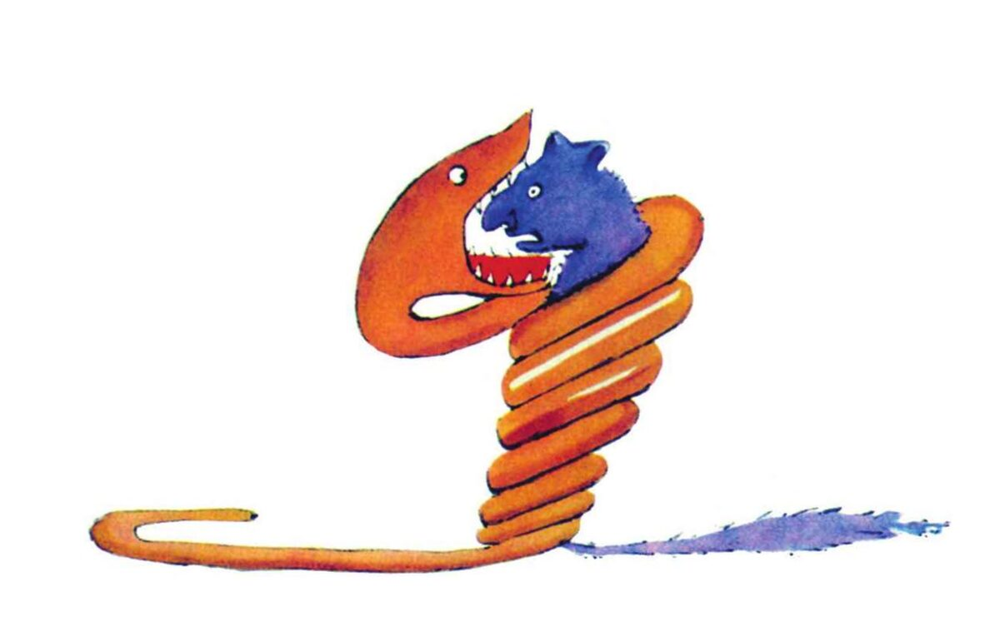
(1.2)ni'o fo lo cukta cu cusku «lu lo sincrboua cu tunlo lo se kalte be sy fau lo nu [ky mulno gi'enai se marxa] .ibabo sy de'a kakne lo nu [muvdu] kei gi'e sipna ze'a lo masti be li xa be'o poi [se kuspe lo befctiru'ebefctiru'e = betfu citka pruce] li'u»
On disait dans le livre : « Les serpents boas avalent leur proie tout entière, sans la mâcher. Ensuite ils ne peuvent plus bouger et ils dorment pendant les six mois de leur digestion. »
In the book it said: “Boa constrictors swallow their prey whole, without chewing it. After that they are not able to move, and they sleep through the six months that they need for digestion.”
(1.3)ni'o mu'i ku mi mutce pensi lo cicricfoi se lifri gi'e baza snada lo nu [mi sepi'o lo skari pinsi cu finti lo mi pamoi pixra] .i lo mi pixra pamoi cu simsa di'e
J’ai alors beaucoup réfléchi sur les aventures de la jungle et, à mon tour, j’ai réussi, avec un crayon de couleur, à tracer mon premier dessin. Mon dessin numéro 1. Il était comme ça :
I pondered deeply, then, over the adventures of the jungle. And after some work with a colored pencil I succeeded in making my first drawing. My Drawing Number One. It looked something like this:
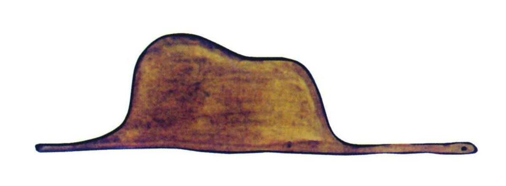
(1.4)ni'o mi jarco lo mi ralju se finti lo makcu prenu gi'e preti cusku fi py fe lo sedu'u xukau [lo mi pixra cu jai se terpa py]
J’ai montré mon chef-d’œuvre aux grandes personnes et je leur ai demandé si mon dessin leur faisait peur.
I showed my masterpiece to the grown-ups, and asked them whether the drawing frightened them.
(1.5)ni'o py spuda cusku fi mi fe «lu ue lo mapku cu jai se terpa fai ma li'u»
Elles m’ont répondu : « Pourquoi un chapeau ferait-il peur ? »
But they answered: “Frighten? Why should any one be frightened by a hat?”
(1.6)ni'o lo mi se finti cu na pixra lo mapku .i pixra lo sincrboua poi [ba'o tunlo lo xanto] .iseki'ubo mi pirfi'i lo nenri be lo sincrboua tezu'e lo nu [lo makcu prenu cu kakne lo nu {jimpe}] .i py cu roroi nitcu lo ve ciksi .i lo mi pixra remoi cu simsa di'e
Mon dessin ne représentait pas un chapeau. Il représentait un serpent boa qui digérait un éléphant. J’ai alors dessiné l’intérieur du serpent boa, afin que les grandes personnes puissent comprendre. Elles ont toujours besoin d’explications. Mon dessin numéro 2 était comme ça :
My drawing was not a picture of a hat. It was a picture of a boa constrictor digesting an elephant. But since the grown-ups were not able to understand it, I made another drawing: I drew the inside of a boa constrictor, so that the grown-ups could see it clearly. They always need to have things explained. My Drawing Number Two looked like this:
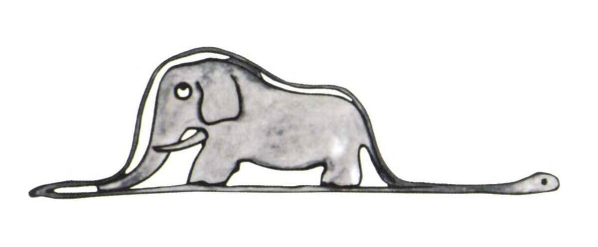
(1.7)ni'o lo makcu prenu cu stidi fi mi fe lo du'u [mi cliva lo pixra be lo sincrboua poi {kalri gi'a ganlo} ku'o gi'e co'a se cinri lo tedysketedyske = terdi saske .e lo cirskecirske = citri saske .e lo cmaci .e lo gerna] .isemu'ibo mi cliva ca lo nu [mi nanca li xa] kei lo pu'o banli jibri be lo pirlarpre .i mi se tolxlu fo lo nu [fliba fa lo mi pixra pamoi .e lo mi pixra remoi] .i lo makcu prenu cu noroi jimpe da zu'e py po'o .ije tatpi fa lo verba lo nu [roroi ciksi]
Les grandes personnes m’ont conseillé de laisser de côté les dessins de serpents boas ouverts ou fermés, et de m’intéresser plutôt à la géographie, à l’histoire, au calcul et à la grammaire. C’est ainsi que j’ai abandonné, à l’âge de six ans, une magnifique carrière de peintre. J’avais été découragé par l’insuccès de mon dessin numéro 1 et de mon dessin numéro 2. Les grandes personnes ne comprennent jamais rien toutes seules, et c’est fatigant, pour les enfants, de toujours et toujours leur donner des explications.
The grown-ups’ response, this time, was to advise me to lay aside my drawings of boa constrictors, whether from the inside or the outside, and devote myself instead to geography, history, arithmetic, and grammar. That is why, at the age of six, I gave up what might have been a magnificent career as a painter. I had been disheartened by the failure of my Drawing Number One and my Drawing Number Two. Grown-ups never understand anything by themselves, and it is tiresome for children to be always and forever explaining things to them.
(1.8)ni'o mi ki'u bilga lo nu [cuxna lo drata jibri] .ije mi cilre fi lo nu [jatna lo vinji] .i mi vofli fe'eru'inai ve'a lo mulno munje .i lo tedyske ja'a sa'e mutce selfu mi .i mi kakne lo nu [ca lo nu {ze'i pare'u catlu} cu djuno lo du'u {da du lo jugygu'e jikau la .arizonas}]. .i la'e di'u mutce se pilno va'o ro nu [farcri ca lo nicte]
J’ai donc dû choisir un autre métier et j’ai appris à piloter des avions. J’ai volé un peu partout dans le monde. Et la géographie, c’est exact, m’a beaucoup servi. Je savais reconnaître, du premier coup d’œil, la Chine de l’Arizona. C’est très utile, si l’on est égaré pendant la nuit.
So then I chose another profession, and learned to pilot airplanes. I have flown a little over all parts of the world; and it is true that geography has been very useful to me. At a glance I can distinguish China from Arizona. If one gets lost in the night, such knowledge is valuable.
(1.9)ni'o mi taiku ze'a lo mi nunjmive cu so'iroi penmi so'i junri prenu .i mi ze'u jbini lo makcu prenu .i mi jibni mutce viska py .i la'e di'u na xagzenri'a lo mi se jinvi
J’ai ainsi eu, au cours de ma vie, des tas de contacts avec des tas de gens sérieux. J’ai beaucoup vécu chez les grandes personnes. Je les ai vues de très près. Ça n’a pas trop amélioré mon opinion.
In the course of this life I have had a great many encounters with a great many people who have been concerned with matters of consequence. I have lived a great deal among grown-ups. I have seen them intimately, close at hand. And that hasn’t much improved my opinion of them.
(1.10)ni'o gau mi ca lo nu [penmi paboi py poi {ke'a simlu fi mi fe lo ka (milxe prije)}] cu cipra fi py fa tu'a lo mi pixra pamoi noi [mi ru'i ponse] .i mi djica lo nu [djuno lo du'u xukau {py ca'a jimpe kakne}] .i ku'i roroi ku py spuda cusku «lu ta mapku li'u» .iseki'ubo mi py tavla genai lo sincrboua gigenai lo cilce ricfoi ginai lo tarci .i mi mi punji lo se kuspe be py .i mi py tavla lo nu [kelcrbridji] .e lo nu [kelcrgolfi] .e lo jecta srana .e lo nebysrijgenebysrijge = cnebo dasri jgena .i lo makcu prenu cu mutce gleki lo nu [se slabu lo nanmu poi {tai racli}]
Quand j’en rencontrais une qui me paraissait un peu lucide, je faisais l’expérience sur elle de mon dessin numéro 1 que j’ai toujours conservé. Je voulais savoir si elle était vraiment compréhensive. Mais toujours elle me répondait : « C’est un chapeau. » Alors je ne lui parlais ni de serpents boas, ni de forêts vierges, ni d’étoiles. Je me mettais à sa portée. Je lui parlais de bridge, de golf, de politique et de cravates. Et la grande personne était bien contente de connaître un homme aussi raisonnable.
Whenever I met one of them who seemed to me at all clear-sighted, I tried the experiment of showing him my Drawing Number One, which I have always kept. I would try to find out, so, if this was a person of true understanding. But, whoever it was, he, or she, would always say:
“That is a hat.”
Then I would never talk to that person about boa constrictors, or primeval forests, or stars. I would bring myself down to his level. I would talk to him about bridge, and golf, and politics, and neckties. And the grown-up would be greatly pleased to have met such a sensible man.
re mo'o2
(2.1)ni'o taiku mi ze'a nonkansa secau lo prenu poi [mi ke'a ka'e fatci tavla] ku'o co'u lo nu [spofu bu'u lo kutytu'a po'u la .sa'aras. pu za lo nanca be li xa] .i da ba'o porpi ne'i lo mi matra .i mi kansa genai lo mi'icre ginai lo se vinji prenu .iseki'ubo mi pu'o bredi lo nu [nonkansa troci lo nu {snada lo nandu nu (cikre)}] .i lo cuntu cu srana lo du'u [mi za'o jmive gi'ikau mrobi'o] .i mi ponse lo djacu poi [ka'e pinxe ze'a lo djedi be li su'ebi po'o]
J’ai ainsi vécu seul, sans personne avec qui parler véritablement, jusqu’à une panne dans le désert du Sahara, il y a six ans. Quelque chose s’était cassé dans mon moteur. Et comme je n’avais avec moi ni mécanicien, ni passagers, je me préparai à essayer de réussir, tout seul, une réparation difficile. C’était pour moi une question de vie ou de mort. J’avais à peine de l’eau à boire pour huit jours.
So I lived my life alone, without anyone that I could really talk to, until I had an accident with my plane in the Desert of Sahara, six years ago. Something was broken in my engine. And as I had with me neither a mechanic nor any passengers, I set myself to attempt the difficult repairs all alone. It was a question of life or death for me: I had scarcely enough drinking water to last a week.
(2.2)ni'o ca lo pamoi vanci mi sipna bu'u lo canre ki lo se xabju tumla vu lo minli be li ki'o .i mi zmadu lo porpi bloti prenu noi [cpana lo fultaplafultapla = fulta tapla bu'u lo xamsi midju] ku'o lo ka [sepli] .iseki'ubo do ka'e se xanri lo nu [mi se spaji lo nu {ca lo co'a donri lo xajmi ke cmalu voksa mi cikygau}] .i vy cusku di'e
Le premier soir je me suis donc endormi sur le sable à mille milles de toute terre habitée. J’étais bien plus isolé qu’un naufragé sur un radeau au milieu de l’Océan. Alors vous imaginez ma surprise, au lever du jour, quand une drôle de petite voix m’a réveillé. Elle disait :
The first night, then, I went to sleep on the sand, a thousand miles from any human habitation. I was more isolated than a shipwrecked sailor on a raft in the middle of the ocean. Thus you can imagine my amazement, at sunrise, when I was awakened by an odd little voice. It said:
(2.3)— .i .e'o ko pirfi'i lo lanpanzi seva'u mi
– S’il vous plaît… dessine-moi un mouton !
“If you please—draw me a sheep!”
(2.4)— .i ke'o
– Hein !
“What!”
(2.5)— .i ko pirfi'i lo lanpanzi seva'u mi
– Dessine-moi un mouton…
“Draw me a sheep!”
(2.6)ni'o mi co'a sanli fi lo mi jamfu tai lo nu da'i [mi se lindi] .i mi carmi satre lo mi kanla .i mi carmi catlu .i mi viska lo tolfadni ke cmalu prenu noi [junri lanli mi] .i di'e me lo xagrai pixra be py be'o noi [mi baza snada lo nu {finti ke'a}] .i ku'i li'a lo mi pixra cu mutce mleca lo se pixra lo ka [se manci] .i mi na fuzme .i mi se tolxlu lo makcu prenu lo nu [pirlarcu se jibri] kei ca lo nu [mi nanca li xa] kei gi'enai cilre fi lo nu [pirfi'i na'e bo lo sincrboua poi {kalri gi'a ganlo}]
J’ai sauté sur mes pieds comme si j’avais été frappé par la foudre. J’ai bien frotté mes yeux. J’ai bien regardé. Et j’ai vu un petit bonhomme tout à fait extraordinaire qui me considérait gravement. Voilà le meilleur portrait que, plus tard, j’ai réussi à faire de lui. Mais mon dessin, bien sûr, est beaucoup moins ravissant que le modèle. Ce n’est pas ma faute. J’avais été découragé dans ma carrière de peintre par les grandes personnes, à l’âge de six ans, et je n’avais rien appris à dessiner, sauf les boas fermés et les boas ouverts.
I jumped to my feet, completely thunderstruck. I blinked my eyes hard. I looked carefully all around me. And I saw a most extraordinary small person, who stood there examining me with great seriousness. Here you may see the best portrait that, later, I was able to make of him. But my drawing is certainly very much less charming than its model.
That, however, is not my fault. The grown-ups discouraged me in my painter’s career when I was six years old, and I never learned to draw anything, except boas from the outside and boas from the inside.
(2.7)ni'o mi catlu lo tolcanci fau lo nu [lo mi kanla cu barda cukla seja'e lo nu {spaji}] .i ko na tolmorji lo du'u [mi zvati ki lo se xabju tumla vu lo minli be li ki'o] .i ku'i lo cmalu prenu na simlu lo ka [farcri gi'a tatpi morsi gi'a xagji morsi gi'a taske morsi gi'a terpa morsi] .i py nasai simlu lo ka [verba co farcri lo midju be lo kutytu'a ki lo se xabju tumla vu lo minli be li ki'o] .i mi ca lo nu uo [snada lo nu {tavla}] cu cusku di'e py
Je regardai donc cette apparition avec des yeux tout ronds d’étonnement. N’oubliez pas que je me trouvais à mille milles de toute région habitée. Or mon petit bonhomme ne me semblait ni égaré, ni mort de fatigue, ni mort de faim, ni mort de soif, ni mort de peur. Il n’avait en rien l’apparence d’un enfant perdu au milieu du désert, à mille milles de toute région habitée. Quand je réussis enfin à parler, je lui dis :
Now I stared at this sudden apparition with my eyes fairly starting out of my head in astonishment. Remember, I had crashed in the desert a thousand miles from any inhabited region. And yet my little man seemed neither to be straying uncertainly among the sands, nor to be fainting from fatigue or hunger or thirst or fear. Nothing about him gave any suggestion of a child lost in the middle of the desert, a thousand miles from any human habitation. When at last I was able to speak, I said to him:
(2.8)— .i .y do va mo
– Mais… qu’est-ce que tu fais là ?
“But—what are you doing here?”
(2.9)ni'o py mutce tolxanka je junri ke krefu cusku di'e
Et il me répéta alors, tout doucement, comme une chose très sérieuse :
And in answer he repeated, very slowly, as if he were speaking of a matter of great consequence:
(2.10)— .i .e'o ko pirfi'i lo lanpanzi seva'u mi
– S’il vous plaît… dessine-moi un mouton…
“If you please—draw me a sheep . . .”
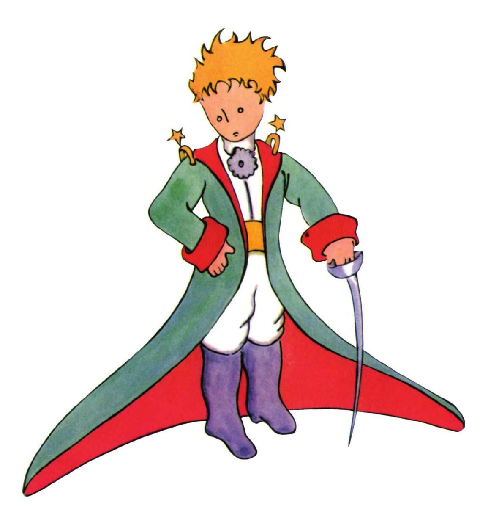
(2.11)ni'o da ca lo nu [lo cizra cu dukse lo ka {se manci}] cu na darsi lo nu [toltinbe] .i simlu lo ka [tolracli] kei ki lo se xabju tumla vu lo minli be li ki'o fau lo nu [morsi ckape] .isemu'inaibo mi tolse'a lo pelji boxfo .e lo penbi lo mi daski .i ku'i mi morji lo du'u [mi ralju cilre fi lo tedyske .e lo cirske .e lo cmaci .e lo gerna] kei gi'e cusku fi lo cmalu prenu (to fau lo nu [mi milxe se fanza] toi) fe lo sedu'u [mi na kakne lo nu {pirfi'i}] .i py spuda cusku di'e
Quand le mystère est trop impressionnant, on n’ose pas désobéir. Aussi absurde que cela me semblât à mille milles de tous les endroits habités et en danger de mort, je sortis de ma poche une feuille de papier et un stylographe. Mais je me rappelai alors que j’avais surtout étudié la géographie, l’histoire, le calcul et la grammaire et je dis au petit bonhomme (avec un peu de mauvaise humeur) que je ne savais pas dessiner. Il me répondit :
When a mystery is too overpowering, one dare not disobey. Absurd as it might seem to me, a thousand miles from any human habitation and in danger of death, I took out of my pocket a sheet of paper and my fountain-pen. But then I remembered how my studies had been concentrated on geography, history, arithmetic and grammar, and I told the little chap (a little crossly, too) that I did not know how to draw. He answered me:
(2.12)— .i na vajni .i ko pirfi'i lo lanpanzi seva'u mi
– Ça ne fait rien. Dessine-moi un mouton.
“That doesn’t matter. Draw me a sheep . . .”
(2.13)ni'o mi noroi pu pirfi'i lo lanpanzi .i seki'ubo mi krefu finti seva'u py pa lo re po'o pixra poi [mi kakne] .i lo me lo ganlo sincrboua moi .i mi traji se spaji lo nu [tirna lo nu {lo cmalu prenu cu spuda cusku di'e}]
Comme je n’avais jamais dessiné un mouton je refis, pour lui, l’un des deux seuls dessins dont j’étais capable. Celui du boa fermé. Et je fus stupéfait d’entendre le petit bonhomme me répondre :
But I had never drawn a sheep. So I drew for him one of the two pictures I had drawn so often. It was that of the boa constrictor from the outside. And I was astounded to hear the little fellow greet it with:
(2.14)— .i na'i .i mi na djica lo me lo xanto poi [nenri lo sincrboua] moi .i lo sincrboua cu mutce lo ka [ckape] .ije lo xanto cu mutce lo ka [fanza] .i lo mi zdani cu cmalu mutce .i mi nitcu lo lanpanzi .i ko pirfi'i lo lanpanzi seva'u mi
– Non ! Non ! Je ne veux pas d’un éléphant dans un boa. Un boa c’est très dangereux, et un éléphant c’est très encombrant. Chez moi c’est tout petit. J’ai besoin d’un mouton. Dessine-moi un mouton.
“No, no, no! I do not want an elephant inside a boa constrictor. A boa constrictor is a very dangerous creature, and an elephant is very cumbersome. Where I live, everything is very small. What I need is a sheep. Draw me a sheep.”
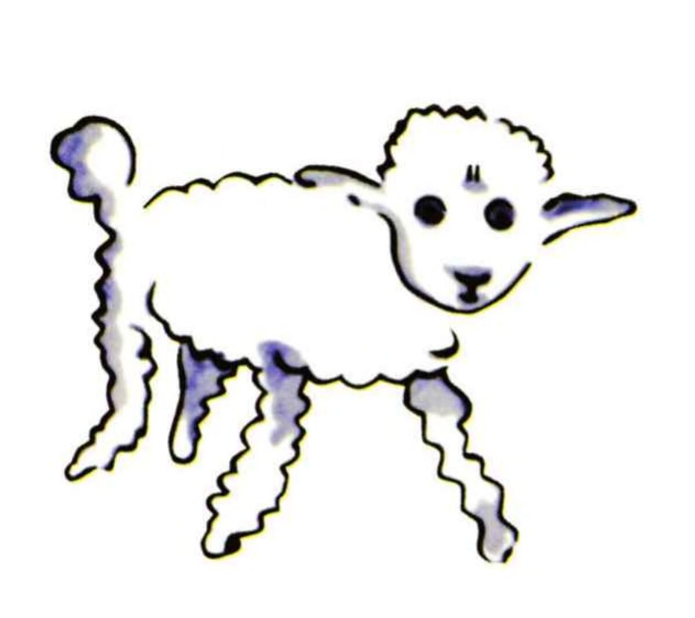
(2.15)ni'o ba ku mi pirfi'i
Alors j’ai dessiné.
So then I made a drawing.
(2.16)ni'o py jundi catlu .i di'e
Il regarda attentivement, puis :
He looked at it carefully, then he said:
(2.17)— .i na'i .i ta mutce lo ka [bilma] .i ko finti lo drata
– Non ! Celui-là est déjà très malade. Fais-en un autre.
“No. This sheep is already very sickly. Make me another.”
(2.18)ni'o mi pirfi'i di'e
Je dessinai :
So I made another drawing.
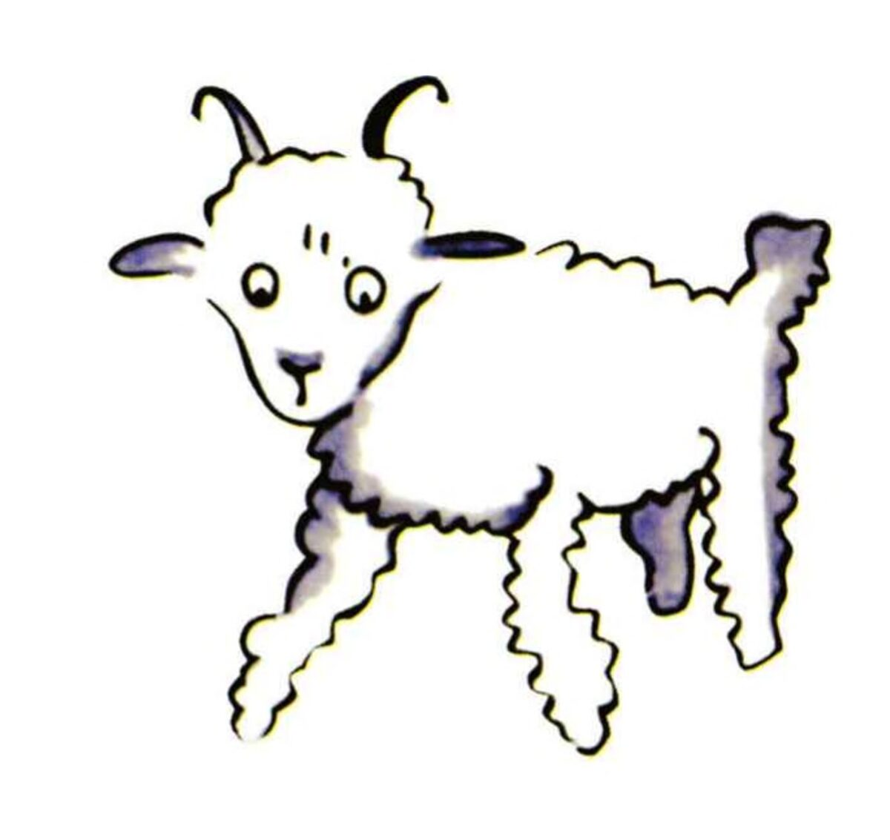
(2.19)ni'o lo mi pendo cu xendo cisma fau lo nu [fraxu]
Mon ami sourit gentiment, avec indulgence :
My friend smiled gently and indulgently.
(2.20)— .i za'asaidai ta lanpanzi nagi'e lanynakni .i ta se jirna
– Tu vois bien… ce n’est pas un mouton, c’est un bélier. Il a des cornes…
“You see yourself,” he said, “that this is not a sheep. This is a ram. It has horns.”
(2.21)ni'o mi mu'i krefu finti lo mi pixra
Je refis donc encore mon dessin :
So then I did my drawing over once more.
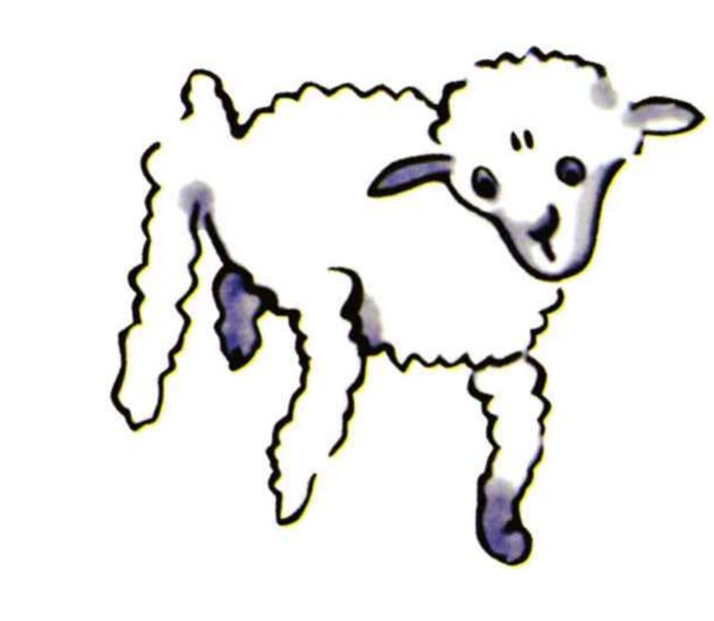
(2.22)ni'o ku'i na'e se zanru tai tu'a lo lidne
Mais il fut refusé, comme les précédents :
But it was rejected too, just like the others.
(2.23)— .i ta dukse lo ka [tolci'o] .i mi djica lo lanpanzi poi [ba ze'u jmive]
– Celui-là est trop vieux. Je veux un mouton qui vive longtemps.
“This one is too old. I want a sheep that will live a long time.”
(2.24)ni'o ba ku secau lo nunsurla mi fau lo nu [sutydji lo nu {co'a toljajgau lo mi matra}] cu malfi'i lo di'e pixra
Alors, faute de patience, comme j’avais hâte de commencer le démontage de mon moteur, je griffonnai ce dessin-ci.
By this time my patience was exhausted, because I was in a hurry to start taking my engine apart. So I tossed off this drawing.
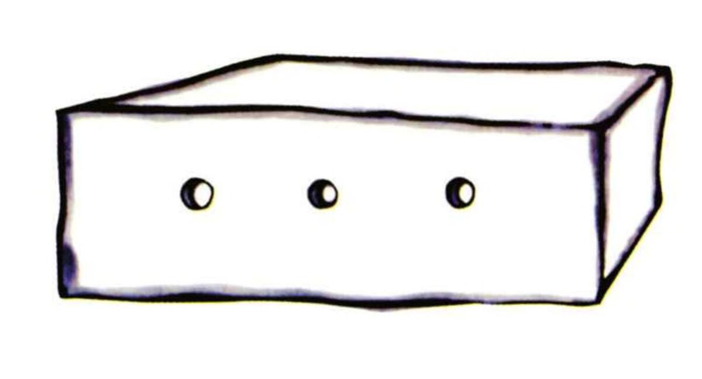
(2.25)ni'o mi bacru di'e
Et je lançai :
And I threw out an explanation with it.
(2.26)— .i ta tanxe .i lo lanpanzi poi [do djica] cu nenri
– Ça c’est la caisse. Le mouton que tu veux est dedans.
“This is only his box. The sheep you asked for is inside.”
(2.27)ni'o ku'i mi mutce lo ka [se spaji lo nu {viska lo nu (lo flira be lo mi citno pajni cu se gusni)}]
Mais je fus bien surpris de voir s’illuminer le visage de mon jeune juge :
I was very surprised to see a light break over the face of my young judge:
(2.28)— .i ta prane lo ka [mi djica] .i pe'ipei lo vi lanpanzi cu nitcu lo mutce srasu
– C’est tout à fait comme ça que je le voulais ! Crois-tu qu’il faille beaucoup d’herbe à ce mouton ?
“That is exactly the way I wanted it! Do you think that this sheep will have to have a great deal of grass?”
(2.29)— .i ki'u ma
– Pourquoi ?
“Why?”
(2.30)— .i ki'u lo nu [lo mi zdani cu cmalu mutce]
– Parce que chez moi c’est tout petit…
“Because where I live everything is very small . . .”
(2.31)— .i ju'o banzu .i mi dunda lo cmalu mutce lanpanzi do
– Ça suffira sûrement. Je t’ai donné un tout petit mouton.
“There will surely be enough grass for him,” I said. “It is a very small sheep that I have given you.”
(2.32)ni'o py sa'orgausa'orgau = salpo gasnu lo stedu fa'a lo pixra
Il pencha la tête vers le dessin :
He bent his head over the drawing.
(2.33)— .i na tai cmalu .i ua ta sipna
– Pas si petit que ça… Tiens ! Il s’est endormi…
“Not so small that—Look! He has gone to sleep . . .”
(2.34)ni'o tai la'e di'u mi co'a se slabu lo cmalu noltru
Et c’est ainsi que je fis la connaissance du petit prince.
And that is how I made the acquaintance of the little prince.
ci mo'o3
(3.1)ni'o mi ze'u jmibi'o lo du'u [ny ba'o klama fi makau] .i lo cmalu noltru noi [retsku so'i da mi] cu noroi simlu lo ka [jimpe fi lo memimoi] .i lo cunso se bacru valsi cu di'i jungau mi roda .i taiku ny ca lo nu [pare'u sanji lo mi vinji (to mi na pirfi'i lo mi vinji .i lo pixra cu dukse lo ka {pluja} kei lo me mi moi toi)] cu preti cusku di'e mi
Il me fallut longtemps pour comprendre d’où il venait. Le petit prince, qui me posait beaucoup de questions, ne semblait jamais entendre les miennes. Ce sont des mots prononcés par hasard qui, peu à peu, m’ont tout révélé. Ainsi, quand il aperçut pour la première fois mon avion (je ne dessinerai pas mon avion, c’est un dessin beaucoup trop compliqué pour moi) il me demanda :
It took me a long time to learn where he came from. The little prince, who asked me so many questions, never seemed to hear the ones I asked him. It was from words dropped by chance that, little by little, everything was revealed to me.
The first time he saw my airplane, for instance (I shall not draw my airplane; that would be much too complicated for me), he asked me:
(3.2)— .i lo va dacti cu mo
– Qu’est-ce que c’est que cette chose-là ?
“What is that object?”
(3.3)— .i ta na dacti .i ta vofli .i ta vinji .i ta me lo mi vinji
– Ce n’est pas une chose. Ça vole. C’est un avion. C’est mon avion.
“That is not an object. It flies. It is an airplane. It is my airplane.”
(3.4)ni'o mi jgira lo nu [jungau ny lo du'u {mi vofli}] .ibabo ny ki'asku di'e
Et j’étais fier de lui apprendre que je volais. Alors il s’écria :
And I was proud to have him learn that I could fly.
He cried out, then:
(3.5)— .i ue do ba'o farlu fi lo tsani
– Comment ! tu es tombé du ciel ?
“What! You dropped down from the sky?”
(3.6)— .i go'i —sei mi cumla cusku
– Oui, fis-je modestement.
“Yes,” I answered, modestly.
(3.7)— .i ua xajmi
– Ah ! ça c’est drôle…
“Oh! That is funny!”
(3.8)ni'o lo cmalu noltru cu bacru lo gleki nu [cmila] noi [mutce fanza mi] .i mi djica lo nu [da junri lo mi malfunca] .ibabo ny jmina cusku di'e
Et le petit prince eut un très joli éclat de rire qui m’irrita beaucoup. Je désire que l’on prenne mes malheurs au sérieux. Puis il ajouta :
And the little prince broke into a lovely peal of laughter, which irritated me very much. I like my misfortunes to be taken seriously.
Then he added:
(3.9)— .i ja'o do ji'a klama fi lo tsani .i ma terdi do
– Alors, toi aussi tu viens du ciel ! De quelle planète es-tu ?
“So you, too, come from the sky! Which is your planet?”
(3.10)ni'o mi ze'i vismli lo guska'uguska'u = gusni kantu lo cizra po'u lo nu [ny zvati] .i mi bikla terpreti
J’entrevis aussitôt une lueur, dans le mystère de sa présence, et j’interrogeai brusquement :
At that moment I caught a gleam of light in the impenetrable mystery of his presence; and I demanded, abruptly:
(3.11)— .i xu ja'o do klama fi lo drata terdi
– Tu viens donc d’une autre planète ?
“Do you come from another planet?”
(3.12)ni'o ku'i ny na spuda .i ny tolvlile deskygau lo stedu ca'o lo nu [catlu lo mi vinji]
Mais il ne me répondit pas. Il hochait la tête doucement tout en regardant mon avion :
But he did not reply. He tossed his head gently, without taking his eyes from my plane:
(3.13)— .i je'u do na ka'e klama fi lo darno mutce fu ta
– C’est vrai que, là-dessus, tu ne peux pas venir de bien loin…
“It is true that on that you can’t have come from very far away . . .”
(3.14)ni'o ny jinru lo ze'u se senva .ibabo ny tolse'a lo mi lanpanzi lo ny daski gi'e sfubu lo nu [manci catlu lo ny dirba]
Et il s’enfonça dans une rêverie qui dura longtemps. Puis, sortant mon mouton de sa poche, il se plongea dans la contemplation de son trésor.
And he sank into a reverie, which lasted a long time. Then, taking my sheep out of his pocket, he buried himself in the contemplation of his treasure.
(3.15)ni'o do se xanri lo du'u [tai makau mi kucli gau lo xadba selsku pe lo drata terdi] .i mi troci lo nu [djuno zenba]
Vous imaginez combien j’avais pu être intrigué par cette demi-confidence sur « les autres planètes ». Je m’efforçai donc d’en savoir plus long :
You can imagine how my curiosity was aroused by this half-confidence about the “other planets.” I made a great effort, therefore, to find out more on this subject.
(3.16)— .i do klama fi ma doi cmalu prenu .i ma stuzi lo do zdani .i do djica lo nu [bevri lo mi lanpanzi ma]
– D’où viens-tu, mon petit bonhomme ? Où est-ce « chez toi » ? Où veux-tu emporter mon mouton ?
“My little man, where do you come from? What is this ’where I live,’ of which you speak? Where do you want to take your sheep?”
(3.17)ni'o ny spuda mi di'e ba lo pensi smaji
Il me répondit après un silence méditatif :
After a reflective silence he answered:
(3.18)— .i xamgu fa lo tanxe poi [do ke'a mi dunda] ku'o fi lo nu [ty ca lo nicte cu selfu ly lo nu {zdani}]
– Ce qui est bien, avec la caisse que tu m’as donnée, c’est que, la nuit, ça lui servira de maison.
“The thing that is so good about the box you have given me is that at night he can use it as his house.”
(3.19)— .i li'a .i ji'a mi va'o ro nu [do clite] cu ba dunda lo skori do tezu'e lo nu [ly jorne ca lo donri] .i go'i lo grana
– Bien sûr. Et si tu es gentil, je te donnerai aussi une corde pour l’attacher pendant le jour. Et un piquet.
“That is so. And if you are good I will give you a string, too, so that you can tie him during the day, and a post to tie him to.”
(3.20)ni'o lo se friti cu simlu lo ka [jenca lo cmalu noltru]
La proposition parut choquer le petit prince :
But the little prince seemed shocked by this offer:
(3.21)— .i xu jorne .i ue xajmi sidbo
– L’attacher ? Quelle drôle d’idée !
“Tie him! What a queer idea!”
(3.22)— .i ku'i ly va'o ro nu [na jorne gau do] cu ba klama makau gi'e ba se cirko
– Mais si tu ne l’attaches pas, il ira n’importe où, et il se perdra…
“But if you don’t tie him,” I said, “he will wander off somewhere, and get lost.”
(3.23)ni'o lo mi pendo cu za'ure'u bacru lo nu [cmila]
Et mon ami eut un nouvel éclat de rire :
My friend broke into another peal of laughter:
(3.24)— .i ku'i ly ka'e klama ma
– Mais où veux-tu qu’il aille !
“But where do you think he would go?”
(3.25)— .i makau .i lo sirji crane be ly
– N’importe où. Droit devant lui…
“Anywhere. Straight ahead of him.”
(3.26)ni'o ba ku lo cmalu noltru cu junri te pinka
Alors le petit prince remarqua gravement :
Then the little prince said, earnestly:
(3.27)— .i na vajni .i lo mi zdani cu tai cmalu
– Ça ne fait rien, c’est tellement petit, chez moi !
“That doesn’t matter. Where I live, everything is so small!”
(3.28)ni'o fau lo nu ju'ocu'i [badri milxe] cu jmina cusku di'e
Et, avec un peu de mélancolie, peut-être, il ajouta :
And, with perhaps a hint of sadness, he added:
(3.29)— .i da fa'a lo sirji crane cu na ka'e klama lo darno mutce
– Droit devant soi on ne peut pas aller bien loin…
“Straight ahead of him, nobody can go very far . . .”
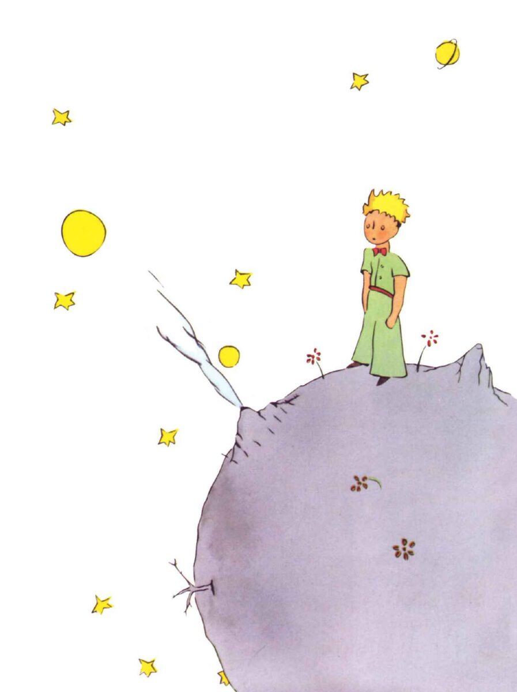
vo mo'o4
(4.1)ni'o taiku mi ba'o facki lo remoi ke vajni datni noi [du'u {lo ny krasi plini cu ja'aru'e zmadu lo zdani lo ka (barda)}]
J’avais ainsi appris une seconde chose très importante : C’est que sa planète d’origine était à peine plus grande qu’une maison !
I had thus learned a second fact of great importance: this was that the planet the little prince came from was scarcely any larger than a house!
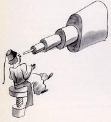
(4.2)ni'o la'e di'u mi na ka'e mutce spaji .i mi djuno lo du'u [pa'a lo barda plini no'umu'a la .terd. joi la .jupiter. joi la .mars. joi la .venus. vu'o noi {da ke'a de cmene} cu zasti fa ji'a lo xecto be lo drata noi {su'oroi tai cmalu ja'e lo nu (nandu fa lo nu ⟨viska ke'a sepi'o lo darvistci⟩)}] .i ca lo nu [lo tarskepre co'a facki fi pa lo cmalu] cu te cmene ri lo namcu .i mu'a cmene fa «lu lo plinycma po'u li 3251 li'u»
Ça ne pouvait pas m’étonner beaucoup. Je savais bien qu’en dehors des grosses planètes comme la Terre, Jupiter, Mars, Vénus, auxquelles on a donné des noms, il y en a des centaines d’autres qui sont quelquefois si petites qu’on a beaucoup de mal à les apercevoir au télescope. Quand un astronome découvre l’une d’elles, il lui donne pour nom un numéro. Il l’appelle par exemple : « l’astéroïde 3251. »
But that did not really surprise me much. I knew very well that in addition to the great planets—such as the Earth, Jupiter, Mars, Venus—to which we have given names, there are also hundreds of others, some of which are so small that one has a hard time seeing them through the telescope. When an astronomer discovers one of these he does not give it a name, but only a number. He might call it, for example, “Asteroid 325”.
(4.3)ni'o mi jinvi fo lo se junri fe lo du'u [lo plini poi {terdi lo cmalu noltru} cu me lo plinycma po'u li by612] .i papo'oroi viska lo di'u plinycma sepi'o lo darvistci .i lo turko tarskepre cu go'i ca li 1909
J’ai de sérieuses raisons de croire que la planète d’où venait le petit prince est l’astéroïde B 612. Cet astéroïde n’a été aperçu qu’une fois au télescope, en 1909, par un astronome turc.
I have serious reason to believe that the planet from which the little prince came is the asteroid known as B-612.
This asteroid has only once been seen through the telescope. That was by a Turkish astronomer, in 1909.
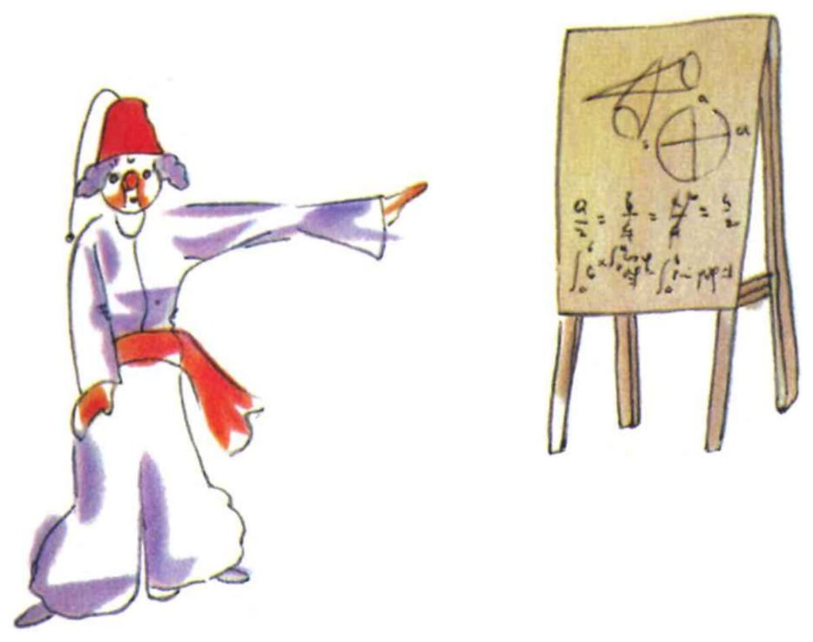
(4.4)ni'o ty banli jarco lo ty te facki bu'u lo tarske ke sornai nunjmaji .i ku'i noda lacri ty .i mu'i bo ty dasni makau .i lo makcu prenu cu tai zukte
Il avait fait alors une grande démonstration de sa découverte à un Congrès International d’Astronomie. Mais personne ne l’avait cru à cause de son costume. Les grandes personnes sont comme ça.
On making his discovery, the astronomer had presented it to the International Astronomical Congress, in a great demonstration. But he was in Turkish costume, and so nobody would believe what he said.
Grown-ups are like that . . .
(4.5)ni'o xamgu lo nunmisno pe lo plinycma po'u li by612 fa lo nu [lo turko raitru cu bigygau lo ry se turni lo nu {dasni tai lo ropno}] .i lo tarskepre cu rere'u jarco ca li 1920 fau lo nu [dasni lo melmapti mutce] .i ca lo ca krefu roda tugni ty
Heureusement pour la réputation de l’astéroïde B 612 un dictateur turc imposa à son peuple, sous peine de mort, de s’habiller à l’Européenne. L’astronome refit sa démonstration en 1920, dans un habit très élégant. Et cette fois-ci tout le monde fut de son avis.
Fortunately, however, for the reputation of Asteroid B-612, a Turkish dictator made a law that his subjects, under pain of death, should change to European costume. So in 1920 the astronomer gave his demonstration all over again, dressed with impressive style and elegance. And this time everybody accepted his report.
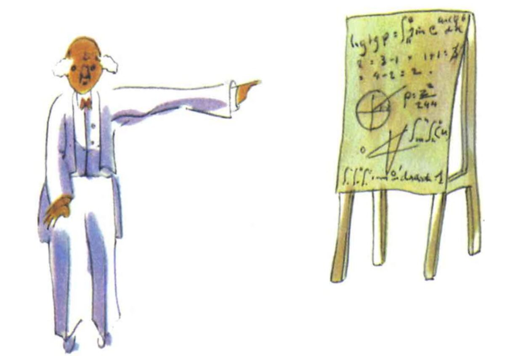
(4.6)ni'o mi te lisri lo plinycma po'u li by612 lo di'u tcila do gi'e lacri do tu'a lo py namcu ki'u tu'a lo makcu prenu .i lo makcu prenu cu prami lo namcu .i py ca lo nu [do py tavla lo cnino pendo] cu noroi te preti lo vajrai .i py cu noroi cusku «lu ma sance lo ra voksa .i ra zmanei lo mo nunkei .i xu ra crepu lo toldi li'u» .i py preti cusku «lu ra nanca li xo .i xoda tunba ra .i ra ki'ogra li xo .i lo ra patfu cu jerna lo rupnu be li xo li'u» .ibabo py jinvi lo du'u [cypy slabu py] .i py va'o ro nu [do cusku fi lo makcu prenu fe «lu mi pu viska lo melbi zdani ne lo xunblabi bliku zi'e noi {lo plargoni cu zvati lo canko} zi'e noi {lo tcacpi cu cpana lo drudi} li'u»] cu na kakne lo nu [se xanri lo zdani] .i .ei cusku «lu mi pu viska lo zdani pe lo rupnu be li panonoki'o .isemu'ibo py ki'asku «lu ua melbi li'u»
Si je vous ai raconté ces détails sur l’astéroïde B 612 et si je vous ai confié son numéro, c’est à cause des grandes personnes. Les grandes personnes aiment les chiffres. Quand vous leur parlez d’un nouvel ami, elles ne vous questionnent jamais sur l’essentiel. Elles ne vous disent jamais : « Quel est le son de sa voix ? Quels sont les jeux qu’il préfère ? Est-ce qu’il collectionne les papillons ? » Elles vous demandent : « Quel âge a-t-il ? Combien a-t-il de frères ? Combien pèse-t-il ? Combien gagne son père ? » Alors seulement elles croient le connaître. Si vous dites aux grandes personnes : « J’ai vu une belle maison en briques roses, avec des géraniums aux fenêtres et des colombes sur le toit… » elles ne parviennent pas à s’imaginer cette maison. Il faut leur dire : « J’ai vu une maison de cent mille francs. » Alors elles s’écrient : « Comme c’est joli ! »
If I have told you these details about the asteroid, and made a note of its number for you, it is on account of the grown-ups and their ways. When you tell them that you have made a new friend, they never ask you any questions about essential matters. They never say to you, “What does his voice sound like? What games does he love best? Does he collect butterflies?” Instead, they demand: “How old is he? How many brothers has he? How much does he weigh? How much money does his father make?” Only from these figures do they think they have learned anything about him.
If you were to say to the grown-ups: “I saw a beautiful house made of rosy brick, with geraniums in the windows and doves on the roof,” they would not be able to get any idea of that house at all. You would have to say to them: “I saw a house that cost $20,000.” Then they would exclaim: “Oh, what a pretty house that is!”
(4.7)ni'o taiku py va'o ro nu [do cusku «lu lo du'u {lo cmalu noltru cu zasti} cu se je'urja'o lo nu {ny se manci gi'e cmila gi'e djica lo lanpanzi} .i lo nu {da djica lo lanpanzi} cu je'urja'o lo du'u {da zasti} li'u»] cu galgau lo janco gi'e tarti tai lo nu [do verba] .i ku'i py va'o ro nu [do cusku «lu ny se terdi lo plinycma po'u li by612 li'u»] cu se birtygau gi'enai jai fanza do fai tu'a lo preti .i py zukte tai la'e di'u .i .ei na xebni py .i .ei lo verba cu mutce fraxu lo makcu prenu
Ainsi, si vous leur dites : « La preuve que le petit prince a existé c’est qu’il était ravissant, qu’il riait, et qu’il voulait un mouton. Quand on veut un mouton, c’est la preuve qu’on existe » elles hausseront les épaules et vous traiteront d’enfant ! Mais si vous leur dites : « La planète d’où il venait est l’astéroïde B 612 » alors elles seront convaincues, et elles vous laisseront tranquille avec leurs questions. Elles sont comme ça. Il ne faut pas leur en vouloir. Les enfants doivent être très indulgents envers les grandes personnes.
Just so, you might say to them: “The proof that the little prince existed is that he was charming, that he laughed, and that he was looking for a sheep. If anybody wants a sheep, that is a proof that he exists.” And what good would it do to tell them that? They would shrug their shoulders, and treat you like a child. But if you said to them: “The planet he came from is Asteroid B-612,” then they would be convinced, and leave you in peace from their questions.
They are like that. One must not hold it against them. Children should always show great forbearance toward grown-up people.
(4.8)ni'o ki'u li'a ma'a poi [jimpe fi lo nunjmive] cu ckasu lo namcu .i .au mi co'a te lisri fi dei tai tu'a lo crida lisri .i .au mi cusku «lu puzuvuku lo cmalu noltru cu xabju lo terdi noi [ja'aru'e zmadu ny lo ka {barda}] ku'o gi'e nitcu lo pendo li'u» .i du'o lo jimpe be fi lo nunjmive la'e di'u simlu lo ka [zmadu fi lo ka {jetnu}]
Mais, bien sûr, nous qui comprenons la vie, nous nous moquons bien des numéros ! J’aurais aimé commencer cette histoire à la façon des contes de fées. J’aurais aimé dire :
« Il était une fois un petit prince qui habitait une planète à peine plus grande que lui, et qui avait besoin d’un ami… » Pour ceux qui comprennent la vie, ça aurait eu l’air beaucoup plus vrai.
But certainly, for us who understand life, figures are a matter of indifference. I should have liked to begin this story in the fashion of the fairy-tales. I should have like to say: “Once upon a time there was a little prince who lived on a planet that was scarcely any bigger than himself, and who had need of a sheep . . .”
To those who understand life, that would have given a much greater air of truth to my story.
(4.9)ni'o ki'uku mi na nelci lo nu [da xalbo tcidu lo mi cukta] .i mi lifri lo tai se dunku ca lo nu [mi te lisri fi lo dei se morji] .i za lo nanca be li xa lo mi pendo pu cliva co kansa lo py lanpanzi .i mi troci lo nu [skicu py] kei tezu'e lo nu [na tolmorji fi py] .i badri fa lo nu [tolmorji fi lo pendo] .i naku ro prenu cu se pendo da .i mi ka'e binxo lo makcu prenu noi [se cinri no na'e bo lo namcu] .i ki'u la'e di'u ji'a mi pu te vecnu lo skari joi pinsi tanxe .i nandu fa lo nu [da za'ure'u co'a pirfi'i ca lo nu {nanca lo memimoi} kei] kei va'o ro nu [da noroi troci lo drata be lo nu {co'e lo kalri sincrboua .a lo ganlo sincrboua ca lo nu (nanca li xa)}] .i li'a mi ba troci lo nu [pirfi'i lo traji be lo ka {simsa}] .i ku'i mi na mulno birti lo du'u [snada] .i lo pixra cu mapti .i lo drata na'e simsa .i mi milxe srera ji'a tu'a lo ka [barda] .i viku lo cmalu noltru cu dukse lo ka [barda] .i vaku dukse lo ka [cmalu] .i mi senpi ji'a fi lo skari be lo ny taxfu .iseki'ubo mi juxre troci tai ti tai ta ja'e lo zabna ja'e lo mabla .i mi ba srera tu'a lo vajni mutce tcila .i ku'i .ei fraxu mi la'e di'u .i lo mi pendo noroi ciksi .i ju'ocu'i py jinvi lo du'u [mi py simsa] .i ku'i uinai mi na kakne lo nu [viska lo lanpanzi pa'o lo tanxe] .i ju'ocu'i mi milxe simsa lo makcu prenu .i la'a mi ba'o tolci'obi'o
Car je n’aime pas qu’on lise mon livre à la légère. J’éprouve tant de chagrin à raconter ces souvenirs. Il y a six ans déjà que mon ami s’en est allé avec son mouton. Si j’essaie ici de le décrire, c’est afin de ne pas l’oublier. C’est triste d’oublier un ami. Tout le monde n’a pas eu un ami. Et je puis devenir comme les grandes personnes qui ne s’intéressent plus qu’aux chiffres. C’est donc pour ça encore que j’ai acheté une boîte de couleurs et des crayons. C’est dur de se remettre au dessin, à mon âge, quand on n’a jamais fait d’autres tentatives que celle d’un boa fermé et celle d’un boa ouvert, à l’âge de six ans ! J’essaierai, bien sûr, de faire des portraits le plus ressemblants possible. Mais je ne suis pas tout à fait certain de réussir. Un dessin va, et l’autre ne ressemble plus. Je me trompe un peu aussi sur la taille. Ici le petit prince est trop grand. Là il est trop petit. J’hésite aussi sur la couleur de son costume. Alors je tâtonne comme ci et comme ça, tant bien que mal. Je me tromperai enfin sur certains détails plus importants. Mais ça, il faudra me le pardonner. Mon ami ne donnait jamais d’explications. Il me croyait peut-être semblable à lui. Mais moi, malheureusement, je ne sais pas voir les moutons à travers les caisses. Je suis peut-être un peu comme les grandes personnes. J’ai dû vieillir.
For I do not want any one to read my book carelessly. I have suffered too much grief in setting down these memories. Six years have already passed since my friend went away from me, with his sheep. If I try to describe him here, it is to make sure that I shall not forget him. To forget a friend is sad. Not every one has had a friend. And if I forget him, I may become like the grown-ups who are no longer interested in anything but figures . . .
It is for that purpose, again, that I have bought a box of paints and some pencils. It is hard to take up drawing again at my age, when I have never made any pictures except those of the boa constrictor from the outside and the boa constrictor from the inside, since I was six. I shall certainly try to make my portraits as true to life as possible. But I am not at all sure of success. One drawing goes along all right, and another has no resemblance to its subject. I make some errors, too, in the little prince’s height: in one place he is too tall and in another too short. And I feel some doubts about the color of his costume. So I fumble along as best I can, now good, now bad, and I hope generally fair-to-middling.
In certain more important details I shall make mistakes, also. But that is something that will not be my fault. My friend never explained anything to me. He thought, perhaps, that I was like himself. But I, alas, do not know how to see sheep through the walls of boxes. Perhaps I am a little like the grown-ups. I have had to grow old.
mu mo'o5
(5.1)ni'o ca ro donri mi cilre da lo plini .a lo nu [cliva] .a lo nu [litru] .i la'e di'u masno fasnu fau lo nu [cunso pensi] .i taiku ca lo cimoi donri mi djuno fi lo betri pe lo tricrbaubau
Chaque jour j’apprenais quelque chose sur la planète, sur le départ, sur le voyage. Ça venait tout doucement, au hasard des réflexions. C’est ainsi que, le troisième jour, je connus le drame des baobabs.
As each day passed I would learn, in our talk, something about the little prince’s planet, his departure from it, his journey. The information would come very slowly, as it might chance to fall from his thoughts. It was in this way that I heard, on the third day, about the catastrophe of the baobabs.
(5.2)ni'o ca lo ca krefu ji'a za'ure'u fasnu seja'e lo lanpanzi .iki'ubo lo cmalu noltru cu suksa retsku di'e mi tai lo nu [junri senpi]
Cette fois-ci encore ce fut grâce au mouton, car brusquement le petit prince m’interrogea, comme pris d’un doute grave :
This time, once more, I had the sheep to thank for it. For the little prince asked me abruptly—as if seized by a grave doubt—“It is true, isn’t it, that sheep eat little bushes?”
(5.3)— .i je'usaipei lo lanpanzi cu citka lo dzispadzispa = dizlo spati
– C’est bien vrai, n’est-ce pas, que les moutons mangent les arbustes ?
This time, once more, I had the sheep to thank for it. For the little prince asked me abruptly—as if seized by a grave doubt—“It is true, isn’t it, that sheep eat little bushes?”
(5.4)— .i go'i je'u
– Oui. C’est vrai.
“Yes, that is true.”
(5.5)— .i .o'u mi gleki
– Ah ! Je suis content.
“Ah! I am glad!”
(5.6)ni'o mi na jimpe lo du'u [ki'u makau tai vajni fa lo nu {lo lanpanzi cu citka lo dzispa}] .i ku'i lo cmalu noltru cu jmina cusku
Je ne compris pas pourquoi il était si important que les moutons mangeassent les arbustes. Mais le petit prince ajouta :
I did not understand why it was so important that sheep should eat little bushes. But the little prince added:
(5.7)— .iseni'ibo xu ly citka lo tricrbaubau ji'a
– Par conséquent ils mangent aussi les baobabs ?
“Then it follows that they also eat baobabs?”
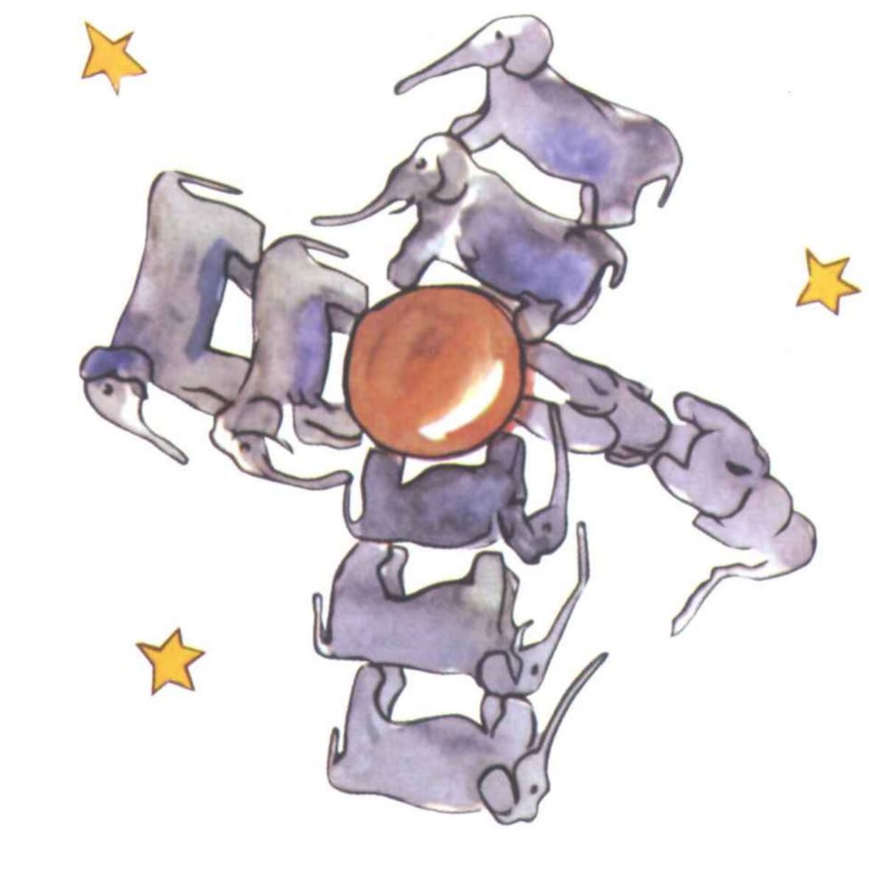
(5.8)ni'o mi fa'irgau lo cmalu noltru lo du'u [lo tricrbaubau cu dzispa nagi'eku'i tricu co barda fi lo malsi] kei .e lo du'u [lo xanto so'imei ji'asai va'o ro nu da'i {ny bevri xy} cu na ka'e mo'u citka lo paji'asai tricrbaubau]
Je fis remarquer au petit prince que les baobabs ne sont pas des arbustes, mais des arbres grands comme des églises et que, si même il emportait avec lui tout un troupeau d’éléphants, ce troupeau ne viendrait pas à bout d’un seul baobab.
I pointed out to the little prince that baobabs were not little bushes, but, on the contrary, trees as big as castles; and that even if he took a whole herd of elephants away with him, the herd would not eat up one single baobab.
(5.9)ni'o lo sidbo be lo xanto so'imei cu cmilygau lo cmalu noltru
L’idée du troupeau d’éléphants fit rire le petit prince :
The idea of the herd of elephants made the little prince laugh.
(5.10)— .i da'i .ei gasnu lo nu [xy simxu lo ka {cpana}]
– Il faudrait les mettre les uns sur les autres…
“We would have to put them one on top of the other,” he said.
(5.11)ni'o ku'i ny prije cusku di'e
Mais il remarqua avec sagesse :
But he made a wise comment:
(5.12)— .i lo tricrbaubau pu lo nu [banro] cu cfari fau lo nu [cmalu]
– Les baobabs, avant de grandir, ça commence par être petit.
“Before they grow so big, the baobabs start out by being little.”
(5.13)— .i drani .i ku'i mu'i ma do djica lo nu [lo do lanpanzi cu citka lo cmalu tricrbaubau]
– C’est exact ! Mais pourquoi veux-tu que tes moutons mangent les petits baobabs ?
“That is strictly correct,” I said. “But why do you want the sheep to eat the little baobabs?”
(5.14)ni'o ny mi spuda «lu ie li'a li'u» tai lo nu [frili se jimpe] .i mi nitcu lo nandu ke menli nuntoi lo nu [mi nonkansa jimpe fi lo nabmi]
Il me répondit : « Ben ! Voyons ! » comme s’il s’agissait là d’une évidence. Et il me fallut un grand effort d’intelligence pour comprendre à moi seul ce problème.
He answered me at once, “Oh, come, come!”, as if he were speaking of something that was self-evident. And I was obliged to make a great mental effort to solve this problem, without any assistance.
(5.15)ni'o je'u zvati lo terdi be lo cmalu noltru tai lo nu [zvati ro terdi] kei fa lo xamgu srasu .e lo xlali srasu .i seni'ibo go'i fa lo xamgu tsiju be lo xamgu srasu be'o .e lo xlali tsiju be lo xlali srasu .i ku'i lo tsiju na ka'e se viska .i ty sipna ne'i lo se mipri be lo terdi co'u lo nu [sidbo fi pa boi ty fa lo nu {ty cikna binxo}] .ibabo ty preja gi'e catke fau lo nu [toldarsi ca lo cfari] kei fa'a lo solri lo cmalu ke tolckape jicycmajicycma = jimca cmalu .i ty va'o ro nu [jicycma lo samcu .a lo rozgu] cu catke .e'a tai lo pluka be ty .i ku'i da va'o ro nu [xlali spati] cu vimcu .ei lo spati co'a lo nu [da facki fi sy] .i ju'a lo xlali mutce tsiju cu zvati lo terdi be lo cmalu noltru .i tsiju lo tricrbaubau .i lo loldi be lo terdi cu culno ty .i ju'a lo tricrbaubau zo'u da va'o lo nu [lerci dukse facki fi ty] cu ze'eba na kakne lo nu [vimcu ty] .i ty se canlu lo terdi .i ty gregaugregau = pagre gasnu lo genja lo terdi .i va'o ro nu [ge {lo terdi cu dukse lo ka (cmalu)} gi {lo tricrbaubau cu dukse lo ka (se kancu fi makau)}] cu spoja fa lo terdi gau ty
Et en effet, sur la planète du petit prince, il y avait comme sur toutes les planètes, de bonnes herbes et de mauvaises herbes. Par conséquent de bonnes graines de bonnes herbes et de mauvaises graines de mauvaises herbes. Mais les graines sont invisibles. Elles dorment dans le secret de la terre jusqu’à ce qu’il prenne fantaisie à l’une d’elles de se réveiller. Alors elle s’étire, et pousse d’abord timidement vers le soleil une ravissante petite brindille inoffensive. S’il s’agit d’une brindille de radis ou de rosier, on peut la laisser pousser comme elle veut. Mais s’il s’agit d’une mauvaise plante, il faut arracher la plante aussitôt, dès qu’on a su la reconnaître. Or il y avait des graines terribles sur la planète du petit prince… c’étaient les graines de baobabs. Le sol de la planète en était infesté. Or un baobab, si l’on s’y prend trop tard, on ne peut jamais plus s’en débarrasser. Il encombre toute la planète. Il la perfore de ses racines. Et si la planète est trop petite, et si les baobabs sont trop nombreux, ils la font éclater.
Indeed, as I learned, there were on the planet where the little prince lived—as on all planets—good plants and bad plants. In consequence, there were good seeds from good plants, and bad seeds from bad plants. But seeds are invisible. They sleep deep in the heart of the earth’s darkness, until some one among them is seized with the desire to awaken. Then this little seed will stretch itself and begin—timidly at first—to push a charming little sprig inoffensively upward toward the sun. If it is only a sprout of radish or the sprig of a rose-bush, one would let it grow wherever it might wish. But when it is a bad plant, one must destroy it as soon as possible, the very first instant that one recognizes it.
Now there were some terrible seeds on the planet that was the home of the little prince; and these were the seeds of the baobab. The soil of that planet was infested with them. A baobab is something you will never, never be able to get rid of if you attend to it too late. It spreads over the entire planet. It bores clear through it with its roots. And if the planet is too small, and the baobabs are too many, they split it in pieces . . .
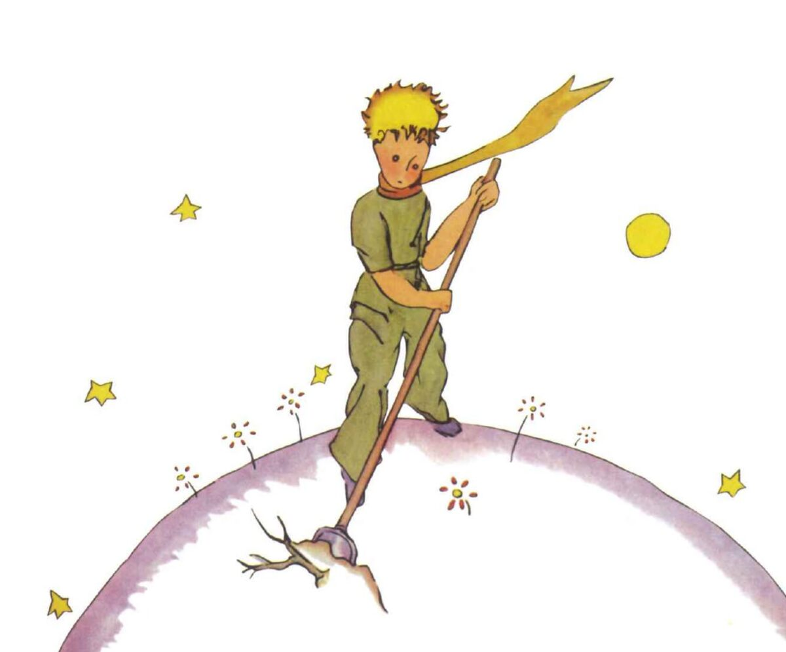
(5.16)ni'o «lu srana lo nu [cnici —sei lo cmalu noltru fi mi ba cusku—] .i da ba lo nu [mo'u lumci vo'a ca lo cerni] cu kurji lumci .ei lo terdi .i .ei da bilgygau vo'a lo nu [di'i vimcu lo tricrbaubau co'a lo nu {ficysanji ty lo rozgu noi (ty mutce simsa ke'a ca lo nu ⟨ty mutce citno⟩)}] .i lo nu [gunka] cu mutce tolzdi gi'eku'i mutce frili li'u»
« C’est une question de discipline, me disait plus tard le petit prince. Quand on a terminé sa toilette du matin, il faut faire soigneusement la toilette de la planète. Il faut s’astreindre régulièrement à arracher les baobabs dès qu’on les distingue d’avec les rosiers auxquels ils ressemblent beaucoup quand ils sont très jeunes. C’est un travail très ennuyeux, mais très facile. »
“It is a question of discipline,” the little prince said to me later on. “When you’ve finished your own toilet in the morning, then it is time to attend to the toilet of your planet, just so, with the greatest care. You must see to it that you pull up regularly all the baobabs, at the very first moment when they can be distinguished from the rosebushes which they resemble so closely in their earliest youth. It is very tedious work,” the little prince added, “but very easy.”
(5.17)ni'o ca da ny stidi fi mi fe lo nu [mi troci lo nu {finti lo melbi pixra} kei tezu'e lo nu {gasnu lo nu (mulno jimpe la'e di'u fa lo verba pe lo mi terdi)}] .i «lu la'e di'u va'o ro nu [vy litru ca da —sei ny cusku—] cu ka'e xamgu vy .i su'oroi na raktu fa lo nu [bavypunji lo nu {gunka}] .i ku'i va'o ro nu [srana lo tricrbaubau] cu roroi raktu mutce .i mi se slabu lo plini poi [se xabju lo lazni] .i ly naljunri ci dzispa li'u»
Et un jour il me conseilla de m’appliquer à réussir un beau dessin, pour bien faire entrer ça dans la tête des enfants de chez moi. « S’ils voyagent un jour, me disait-il, ça pourra leur servir. Il est quelquefois sans inconvénient de remettre à plus tard son travail. Mais, s’il s’agit des baobabs, c’est toujours une catastrophe. J’ai connu une planète, habitée par un paresseux. Il avait négligé trois arbustes… »
And one day he said to me: “You ought to make a beautiful drawing, so that the children where you live can see exactly how all this is. That would be very useful to them if they were to travel some day. Sometimes,” he added, “there is no harm in putting off a piece of work until another day. But when it is a matter of baobabs, that always means a catastrophe. I knew a planet that was inhabited by a lazy man. He neglected three little bushes . . .”
(5.18)ni'o fi'o gidva lo cmalu noltru mi pirfi'i lo di'u plini .i mi nasai nelci lo nu [mi marde cusku] .i ku'i lo ckape pe lo tricrbaubau cu tai tolmutce te djuno .ijebo lo se tolnu'a be lo farcri be bu'u lo plinycma cu tai vajni .isemu'ibo paroiku mi na'e tarti lo nu [mi jinzi sezyfanta] .i mi cusku «lu doi verba ko jundi lo tricrbaubau li'u» .i mi kajde lo mi pendo lo ckape poi [py ne pa'a mi ze'upu lamji ke'a secau lo nu {sanji}] .isezu'ebo mi tai mutce gunka tu'a lo vi pixra .i lo te ctuca be fi mi cu vamji lo nu [troci] .i ju'ocu'i do retsku fi do fe lo sedu'u [ki'u makau na zvati lo dei cukta fa lo drata pixra poi {dunli lo pixra be lo tricrbaubau lo ka (banli)}] .i lo danfu cu sampu mutce .i mi troci gi'eku'i na snada .i mi ca lo nu [mi pirfi'i lo tricrbaubau] cu jai se bapli lo se cinmo pe lo nu [vaitcu]
Et, sur les indications du petit prince, j’ai dessiné cette planète-là. Je n’aime guère prendre le ton d’un moraliste. Mais le danger des baobabs est si peu connu, et les risques courus par celui qui s’égarerait dans un astéroïde sont si considérables, que, pour une fois, je fais exception à ma réserve. Je dis : « Enfants ! Faites attention aux baobabs ! » C’est pour avertir mes amis d’un danger qu’ils frôlaient depuis longtemps, comme moi-même, sans le connaître, que j’ai tant travaillé ce dessin-là. La leçon que je donnais en valait la peine. Vous vous demanderez peut-être : Pourquoi n’y a-t-il pas, dans ce livre, d’autres dessins aussi grandioses que le dessin des baobabs ? La réponse est bien simple : J’ai essayé mais je n’ai pas pu réussir. Quand j’ai dessiné les baobabs j’ai été animé par le sentiment de l’urgence.
So, as the little prince described it to me, I have made a drawing of that planet. I do not much like to take the tone of a moralist. But the danger of the baobabs is so little understood, and such considerable risks would be run by anyone who might get lost on an asteroid, that for once I am breaking through my reserve. “Children,” I say plainly, “watch out for the baobabs!”
My friends, like myself, have been skirting this danger for a long time, without ever knowing it; and so it is for them that I have worked so hard over this drawing. The lesson which I pass on by this means is worth all the trouble it has cost me.
Perhaps you will ask me, “Why are there no other drawing in this book as magnificent and impressive as this drawing of the baobabs?”
The reply is simple. I have tried. But with the others I have not been successful. When I made the drawing of the baobabs I was carried beyond myself by the inspiring force of urgent necessity.
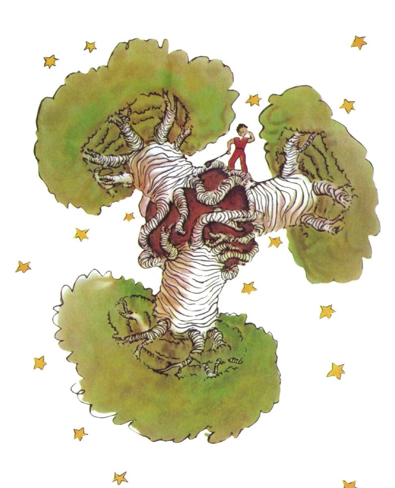
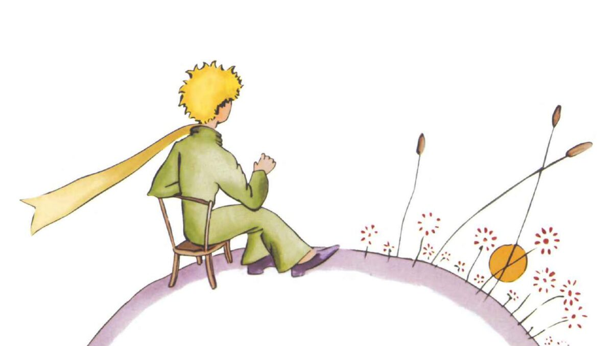
xa mo'o6
(6.1)ni'o iu doi cmalu noltru mi ca'o jimpe taiku fi lo do badri ke cmalu nunjmive .i do ze'u se zdile no na'e bo lo nu [xutla] pe lo solri nu [canci] .i mi facki lo di'u cnino tcila ca lo cerni be lo vomoi donri ca lo nu [do cusku di'e]
Ah ! petit prince, j’ai compris, peu à peu, ainsi, ta petite vie mélancolique. Tu n’avais eu longtemps pour distraction que la douceur des couchers de soleil. J’ai appris ce détail nouveau, le quatrième jour au matin, quand tu m’as dit :
Oh, little prince! Bit by bit I came to understand the secrets of your sad little life . . . For a long time you had found your only entertainment in the quiet pleasure of looking at the sunset. I learned that new detail on the morning of the fourth day, when you said to me:
(6.2)— .i mi mutce nelci lo solri nu [canci] .i .e'u mi'o viska lo solri nu [canci]
– J’aime bien les couchers de soleil. Allons voir un coucher de soleil…
“I am very fond of sunsets. Come, let us go look at a sunset now.”
(6.3)— .i ku'i .e'i mi'o denpa
– Mais il faut attendre…
“But we must wait,” I said.
(6.4)— .i denpa ma
– Attendre quoi ?
“Wait? For what?”
(6.5)— .i denpa lo nu [lo solri cu canci]
– Attendre que le soleil se couche.
“For the sunset. We must wait until it is time.”
(6.6)ni'o do simlu lo ka [mutce se spaji] kei ca lo cfari .ibabo do do mi'afra .i do fi mi cusku di'e
Tu as eu l’air très surpris d’abord, et puis tu as ri de toi-même. Et tu m’as dit :
At first you seemed to be very much surprised. And then you laughed to yourself. You said to me:
(6.7)— .i ue mi za'o krici lo du'u [mi zvati lo memimoi]
– Je me crois toujours chez moi !
“I am always thinking that I am at home!”
(6.8)ni'o je'u ka'u lo solri ca lo nu [dormidju fi lo mergu'e] cu canci lo fasygu'e .i lo nu [klama lo fasygu'e ze'i lo mentu] cu banzu lo nu [zvati lo solri nu {canci}] .i ku'i uinai lo fasygu'e cu mutce lo ka [darno] .i ku'i bu'u lo do tai cmalu terdi cu banzu fa lo nu [bevri lo do stizu ve'a lo taplaitaplai = stapa klani be li so'o] .i do viska lo solri nuncanci ca ro krefu poi [do djica]
En effet. Quand il est midi aux États-Unis, le soleil, tout le monde le sait, se couche sur la France. Il suffirait de pouvoir aller en France en une minute pour assister au coucher de soleil. Malheureusement la France est bien trop éloignée. Mais, sur ta si petite planète, il te suffisait de tirer ta chaise de quelques pas. Et tu regardais le crépuscule chaque fois que tu le désirais…
Just so. Everybody knows that when it is noon in the United States the sun is setting over France.
If you could fly to France in one minute, you could go straight into the sunset, right from noon. Unfortunately, France is too far away for that. But on your tiny planet, my little prince, all you need do is move your chair a few steps. You can see the day end and the twilight falling whenever you like . . .
(6.9)— .i ca lo djedi mi viska lo nu [lo solri cu vociroi canci]
– Un jour, j’ai vu le soleil se coucher quarante-trois fois !
“One day,” you said to me, “I saw the sunset forty-four times!”
(6.10)ni'o bazaku do jmina cusku di'e
Et un peu plus tard tu ajoutais :
And a little later you added:
(6.11)— .i .o'e da ca lo nu [tai badri] cu mutce nelci lo solri nu [canci]
– Tu sais… quand on est tellement triste on aime les couchers de soleil…
“You know—one loves the sunset, when one is so sad . . .”
(6.12)— .i ja'o do ca lo djedi pe lo voci krefu cu tai badri pei
– Le jour des quarante-trois fois tu étais donc tellement triste ?
“Were you so sad, then?” I asked, “on the day of the forty-four sunsets?”
(6.13)ni'o ku'i lo cmalu noltru na spuda
Mais le petit prince ne répondit pas.
But the little prince made no reply.
ze mo'o7
(7.1)ni'o ca lo mumoi donri fi'o za'ure'u se jalge tu'a lo lanpanzi lo di'e se mipri pe lo nunjmive be lo cmalu noltru cu binxo lo to'e se mipri be fi mi .i ny suksa retsku di'e mi secau lo pruselsku tai lo nu [jalge lo nu {ze'u smaji pensi lo nabmi}]
Le cinquième jour, toujours grâce au mouton, ce secret de la vie du petit prince me fut révélé. Il me demanda avec brusquerie, sans préambule, comme le fruit d’un problème longtemps médité en silence :
On the fifth day—again, as always, it was thanks to the sheep—the secret of the little prince’s life was revealed to me. Abruptly, without anything to lead up to it, and as if the question had been born of long and silent meditation on his problem, he demanded:
(7.2)— .i pau lo lanpanzi tai lo nu [ly citka lo dzispa] cu citka lo xrula ji'a xu
– Un mouton, s’il mange les arbustes, il mange aussi les fleurs ?
“A sheep—if it eats little bushes, does it eat flowers, too?”
(7.3)— .i lo lanpanzi cu citka ro se penmi be ly
– Un mouton mange tout ce qu’il rencontre.
“A sheep,” I answered, “eats anything it finds in its reach.”
(7.4)— .i xu go'i lo xrula ji'asai poi [se pagbu lo kinli]
– Même les fleurs qui ont des épines ?
“Even flowers that have thorns?”
(7.5)— .i ja'a go'i lo xrula ji'asai poi [se pagbu lo kinli]
– Oui. Même les fleurs qui ont des épines.
“Yes, even flowers that have thorns.”
(7.6)— .i va'oku lo kinli cu selfu fi ma
– Alors les épines, à quoi servent-elles ?
“Then the thorns—what use are they?”
(7.7)ni'o mi na djuno .i mi ca'o mutce lo ka [gunka lo nu {troci lo nu (vimcu lo dukse tagji klupe lo mi matra)}] .i mi mutce lo ka [dunku] .iki'ubo ge [lo nu {spofu} cu co'a simlu lo ka {vajni}] gi [lo se pinxe djacu noi {se xaksu} cu gasnu lo nu {mi tepkanpe lo xlarai}]
Je ne le savais pas. J’étais alors très occupé à essayer de dévisser un boulon trop serré de mon moteur. J’étais très soucieux car ma panne commençait de m’apparaître comme très grave, et l’eau à boire qui s’épuisait me faisait craindre le pire.
I did not know. At that moment I was very busy trying to unscrew a bolt that had got stuck in my engine. I was very much worried, for it was becoming clear to me that the breakdown of my plane was extremely serious. And I had so little drinking-water left that I had to fear for the worst.
(7.8)— .i lo kinli cu selfu fi ma
– Les épines, à quoi servent-elles ?
“The thorns—what use are they?”
(7.9)ni'o lo cmalu noltru noroi sisti tu'a lo preti ca lo nu [ny ba'o cusku py] .i mi se fanza lo mi klupe gi'e spusku lo cunso
Le petit prince ne renonçait jamais à une question, une fois qu’il l’avait posée. J’étais irrité par mon boulon et je répondis n’importe quoi :
The little prince never let go of a question, once he had asked it. As for me, I was upset over that bolt. And I answered with the first thing that came into my head:
(7.10)— .i lo kinli cu selfu fi noda .i curve jalge lo nu [lo xrula cu palci]
– Les épines, ça ne sert à rien, c’est de la pure méchanceté de la part des fleurs !
“The thorns are of no use at all. Flowers have thorns just for spite!”
(7.11)— .i ue
– Oh !
“Oh!”
(7.12)ni'o ku'i ny ba lo nu [smaji] cu renro di'e mi fau lo nu [milxe fengu]
Mais après un silence il me lança, avec une sorte de rancune :
There was a moment of complete silence. Then the little prince flashed back at me, with a kind of resentfulness:
(7.13)— .i ianai .i lo xrula cu ralci .i xy na palci .i xy nurgau xy ta'i lo se kakne .i xy krici lo du'u [xy selteptce fau tu'a lo xy kinli]
– Je ne te crois pas ! Les fleurs sont faibles. Elles sont naïves. Elles se rassurent comme elles peuvent. Elles se croient terribles avec leurs épines…
“I don’t believe you! Flowers are weak creatures. They are naďve. They reassure themselves as best they can. They believe that their thorns are terrible weapons . . .”
(7.14)ni'o mi spusku noda .i ca lo ca mokca mi fi mi cusku «lu lo vi klupe va'o lo nu [ky za'o xarnu] cu ba plipe gau mi sepi'o lo nu [mruli darxi] li'u» .i lo cmalu noltru za'ure'u dicra lo nu [mi pensi]
Je ne répondis rien. À cet instant-là je me disais : « Si ce boulon résiste encore, je le ferai sauter d’un coup de marteau. » Le petit prince dérangea de nouveau mes réflexions :
I did not answer. At that instant I was saying to myself: “If this bolt still won’t turn, I am going to knock it out with the hammer.” Again the little prince disturbed my thoughts:
(7.15)— .i pau do jinvi fi lo xrula .y
– Et tu crois, toi, que les fleurs…
“And you actually believe that the flowers—”
(7.16)— .i na go'i .i mi jinvi noda .i mi pu spusku lo cunso .i mi gunka lo se junri cuntu
– Mais non ! Mais non ! Je ne crois rien ! J’ai répondu n’importe quoi. Je m’occupe, moi, de choses sérieuses !
“Oh, no!” I cried. “No, no, no! I don’t believe anything. I answered you with the first thing that came into my head. Don’t you see—I am very busy with matters of consequence!”
(7.17)ni'o ny catlu mi fau lo nu [se spaji]
Il me regarda stupéfait.
He stared at me, thunderstruck.
(7.18)— .i ue lo se junri cuntu
– De choses sérieuses !
“Matters of consequence!”
(7.19)ni'o ny viska mi fau lo nu [lo mruli cu zvati lo xance] kei .e lo nu [lo degji cu grasu xekri] .e lo nu [mi salpo fa'a lo dacti noi {simlu fi ny fe lo ka (mutce tolmelbi)}]
Il me voyait, mon marteau à la main, et les doigts noirs de cambouis, penché sur un objet qui lui semblait très laid.
He looked at me there, with my hammer in my hand, my fingers black with engine-grease, bending down over an object which seemed to him extremely ugly . . .
(7.20)— .i do tavla tai tu'a lo makcu prenu
– Tu parles comme les grandes personnes !
“You talk just like the grown-ups!”
(7.21)ni'o la'e di'u rinka lo nu [mi milxe ckeji] .i ku'i ny nalkecti ke jmina cusku di'e
Ça me fit un peu honte. Mais, impitoyable, il ajouta :
That made me a little ashamed. But he went on, relentlessly:
(7.22)— .i do cfipygau lo roda .i do xregau lo roda
– Tu confonds tout… tu mélanges tout !
“You mix everything up together . . . You confuse everything . . .”
(7.23)ni'o ny mutce se fanza je'u .i ny deskygau bu'u lo brife lo solji skari kerfa
Il était vraiment très irrité. Il secouait au vent des cheveux tout dorés :
He was really very angry. He tossed his golden curls in the breeze.
(7.24)— .i mi djuno fi lo plini poi [se zvati lo xunre nanmu] .i ny cu noroi sumne lo xrula .i ny cu noroi catlu lo tarci .i ny cu noroi prami lo prenu .i ny cu noroi zukte na'e bo lo nu [kanji] .i ze'a piro donri ny rapli cusku tai tu'a do «lu mi junri nanmu .i mi junri nanmu li'u» .i la'e di'u rinka lo nu [ny jgira] .i ku'i ny na nanmu .i ny gumri
– Je connais une planète où il y a un Monsieur cramoisi. Il n’a jamais respiré une fleur. Il n’a jamais regardé une étoile. Il n’a jamais aimé personne. Il n’a jamais rien fait d’autre que des additions. Et toute la journée il répète comme toi : « Je suis un homme sérieux ! Je suis un homme sérieux ! » et ça le fait gonfler d’orgueil. Mais ce n’est pas un homme, c’est un champignon !
“I know a planet where there is a certain red-faced gentleman. He has never smelled a flower. He has never looked at a star. He has never loved any one. He has never done anything in his life but add up figures. And all day he says over and over, just like you: ’I am busy with matters of consequence!’ And that makes him swell up with pride. But he is not a man—he is a mushroom!”
(7.25)— .i ny mo
– Un quoi ?
“A what?”
(7.26)— .i ny gumri
– Un champignon !
“A mushroom!”
(7.27)ni'o lo cmalu noltru cu blabi ri'a lo nu [fengu]
Le petit prince était maintenant tout pâle de colère.
The little prince was now white with rage.
(7.28)— .i ze'u lo nanca be lo megdo lo xrula cu zbasu lo kinli .iji'a ze'u lo nanca be lo megdo lo lanpanzi cu citka lo xrula .i xu na junri fau lo nu [sisku lo nu {jimpe lo du'u (ki'u makau xy tai gunka lo nu ⟨zbasu lo kinli poi [selfu fi noda]⟩)}] .i xu na vajni fa lo nu [jamna fa lo lanpanzi lo xrula] .i xu na zmadu fi lo ka [vajni] .e lo ka [jai fau junri] kei fe lo nu [kanji fa lo rotsu ke xunre nanmu] .i mi se slabu lo xrula noi [pamei se steci fi lo munje] zi'e noi [zasti bu'u no na'ebo lo mi terdi] zi'e noi [lo cmalu lanpanzi ka'e daspo ze'iku taiku ca lo cerni secau lo nu {ly sanji lo se gasnu}] .i xu la'e di'u na vajni
– Il y a des millions d’années que les fleurs fabriquent des épines. Il y a des millions d’années que les moutons mangent quand même les fleurs. Et ce n’est pas sérieux de chercher à comprendre pourquoi elles se donnent tant de mal pour se fabriquer des épines qui ne servent jamais à rien ? Ce n’est pas important la guerre des moutons et des fleurs ? Ce n’est pas plus sérieux et plus important que les additions d’un gros Monsieur rouge ? Et si je connais, moi, une fleur unique au monde, qui n’existe nulle part, sauf dans ma planète, et qu’un petit mouton peut anéantir d’un seul coup, comme ça, un matin, sans se rendre compte de ce qu’il fait, ce n’est pas important ça !
“The flowers have been growing thorns for millions of years. For millions of years the sheep have been eating them just the same. And is it not a matter of consequence to try to understand why the flowers go to so much trouble to grow thorns which are never of any use to them? Is the warfare between the sheep and the flowers not important? Is this not of more consequence than a fat red-faced gentleman’s sums? And if I know—I, myself—one flower which is unique in the world, which grows nowhere but on my planet, but which one little sheep can destroy in a single bite some morning, without even noticing what he is doing—Oh! You think that is not important!”
(7.29)ni'o ny xunre binxo .ibabo di'a co'e
Il rougit, puis reprit :
His face turned from white to red as he continued:
(7.30)— .i lo nu [da prami lo xrula noi {zasti fa pa ke'a bu'u lo megdo be lo megdo be lo tarci}] cu banzu lo nu [da gleki lo nu {catlu ty}] .i da cusku fi da fe «lu lo mi xrula cu zvati piso'u ta li'u» .i ku'i lo nu [lo lanpanzi cu citka lo xrula] cu simsa ci'o da lo nu [ro tarci cu suksa naltergu'ibi'o] .i uesai na vajni fa la'e di'u
– Si quelqu’un aime une fleur qui n’existe qu’à un exemplaire dans les millions et les millions d’étoiles, ça suffit pour qu’il soit heureux quand il les regarde. Il se dit : « Ma fleur est là quelque part… » Mais si le mouton mange la fleur, c’est pour lui comme si, brusquement, toutes les étoiles s’éteignaient ! Et ce n’est pas important ça !
“If some one loves a flower, of which just one single blossom grows in all the millions and millions of stars, it is enough to make him happy just to look at the stars. He can say to himself, ’Somewhere, my flower is there . . .’ But if the sheep eats the flower, in one moment all his stars will be darkened . . . And you think that is not important!”
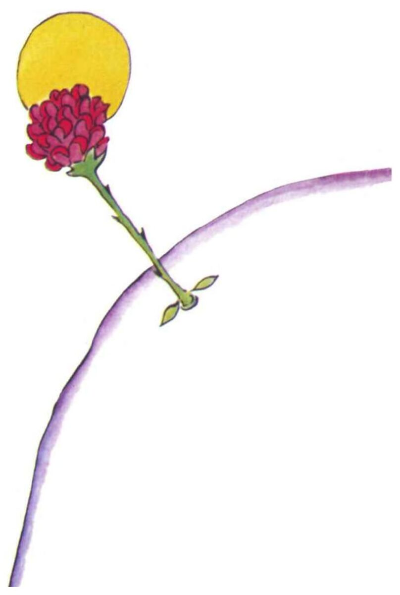
(7.31)ni'o ny na kakne lo nu [jmina cusku] .i ny spoja lo nu [klaku] .i lo nicte ba'o tolcanci .i mi ba'o falcru lo mi tutci .i mi ja'asai ckasu lo mi mruli .e lo mi klupe .e lo nu [taske] .e lo nu [morsi] .i zvati lo tarci di'o lo terdi no'u lo memimoi no'u la .terd. fa lo cmalu noltru noi [nitcu lo nu {se kurji}] .i mi jgari ny lo birka .i mi sligau ny .i mi cusku fi ny fe «lu lo xrula poi [do prami] cu na se ckape .i mi ba pirfi'i lo molgai seva'u lo do lanpanzi .i mi ba pirfi'i seva'u do lo marbi be lo do xrula .i mi .y li'u» .i mi na djuno fi lo nu .ei [mi cusku makau] .i mi cinmo lo nu [mutce lo ka {juxre}] .i mi na djuno fi lo nu [ta'i makau mi ny penmi gi'a pruxi jorne] .i tai cizra fa lo se klaku gugde
Il ne put rien dire de plus. Il éclata brusquement en sanglots. La nuit était tombée. J’avais lâché mes outils. Je me moquais bien de mon marteau, de mon boulon, de la soif et de la mort. Il y avait, sur une étoile, une planète, la mienne, la Terre, un petit prince à consoler ! Je le pris dans les bras. Je le berçai. Je lui disais : « La fleur que tu aimes n’est pas en danger… Je lui dessinerai une muselière, à ton mouton… Je te dessinerai une armure pour ta fleur… Je… » Je ne savais pas trop quoi dire. Je me sentais très maladroit. Je ne savais comment l’atteindre, où le rejoindre… C’est tellement mystérieux, le pays des larmes.
He could not say anything more. His words were choked by sobbing.
The night had fallen. I had let my tools drop from my hands. Of what moment now was my hammer, my bolt, or thirst, or death? On one star, one planet, my planet, the Earth, there was a little prince to be comforted. I took him in my arms, and rocked him. I said to him:
“The flower that you love is not in danger. I will draw you a muzzle for your sheep. I will draw you a railing to put around your flower. I will—”
I did not know what to say to him. I felt awkward and blundering. I did not know how I could reach him, where I could overtake him and go on hand in hand with him once more.
It is such a secret place, the land of tears.
bi mo'o8
(8.1)ni'o mi ze'i cilre fi lo nu [djuno fi lo bi'unai xrula] .i ze'epu ta'e zvati lo terdi be lo cmalu noltru fa lo sampu mutce xrula noi [se jadni papo'o djine be lo rulpezli] zi'e noi [ja'aru'e se canlu] zi'e noi [fanza noda] .i xy tolcanci ca lo cerni lo srasu .ibabo xy canci ca lo vanci .i ku'i lo bi'unai xrula co'a te tsiju ca lo djedi fi da poi [se bevri fo lo na te djuno] .i lo cmalu noltru cu jibni jundi lo stanycma noi [na simsa lo drata stanycma] .i cumki fa lo nu [cnino klesi lo tricrbaubau] .i ku'i lo dzispa bazi sisti lo nu [banro] kei gi'e co'a zbasu lo xrula .i lo cmalu noltru noi [zvati lo nu {zvagau lo barda balji}] cu birti lo du'u [ba barkla by fa lo se manci tolcanci] .i ku'i lo xrula za'o na mo'u brebi'o lo nu [melbi] kei fi'o marbi lo xy crino kumfa .i xy jundi cuxna lo xy skari .i xy masno lo nu [dasni binxo] .i xy stika ro lo rulpezli .i xy na djica lo nu [barkla fau lo nu {xy mulno se cinje tai tu'a lo xrulrpapavera}] .i xy na djica lo nu [tolcanci fau na'ebo lo mulno nu {dirce lo nu (xy melbi)}] .i ie xy mutce lo ka [meltritra] .i lo se mipri nu [xy brebi'o] cu djedi li so'o gi'ebabo djedi li so'i .ibabo xy ca lo cerni ca lo tcika be lo solri nu [tolcanci] cu jarco vo'a
J’appris bien vite à mieux connaître cette fleur. Il y avait toujours eu, sur la planète du petit prince, des fleurs très simples, ornées d’un seul rang de pétales, et qui ne tenaient point de place, et qui ne dérangeaient personne. Elles apparaissaient un matin dans l’herbe, et puis elles s’éteignaient le soir. Mais celle-là avait germé un jour, d’une graine apportée d’on ne sait où, et le petit prince avait surveillé de très près cette brindille qui ne ressemblait pas aux autres brindilles. Ça pouvait être un nouveau genre de baobab. Mais l’arbuste cessa vite de croître, et commença de préparer une fleur. Le petit prince, qui assistait à l’installation d’un bouton énorme, sentait bien qu’il en sortirait une apparition miraculeuse, mais la fleur n’en finissait pas de se préparer à être belle, à l’abri de sa chambre verte. Elle choisissait avec soin ses couleurs. Elle s’habillait lentement, elle ajustait un à un ses pétales. Elle ne voulait pas sortir toute fripée comme les coquelicots. Elle ne voulait apparaître que dans le plein rayonnement de sa beauté. Eh ! oui. Elle était très coquette ! Sa toilette mystérieuse avait donc duré des jours et des jours. Et puis voici qu’un matin, justement à l’heure du lever du soleil, elle s’était montrée.
I soon learned to know this flower better. On the little prince’s planet the flowers had always been very simple. They had only one ring of petals; they took up no room at all; they were a trouble to nobody. One morning they would appear in the grass, and by night they would have faded peacefully away. But one day, from a seed blown from no one knew where, a new flower had come up; and the little prince had watched very closely over this small sprout which was not like any other small sprouts on his planet. It might, you see, have been a new kind of baobab.
The shrub soon stopped growing, and began to get ready to produce a flower. The little prince, who was present at the first appearance of a huge bud, felt at once that some sort of miraculous apparition must emerge from it. But the flower was not satisfied to complete the preparations for her beauty in the shelter of her green chamber. She chose her colors with the greatest care. She dressed herself slowly. She adjusted her petals one by one. She did not wish to go out into the world all rumpled, like the field poppies. It was only in the full radiance of her beauty that she wished to appear. Oh, yes! She was a coquettish creature! And her mysterious adornment lasted for days and days.
Then one morning, exactly at sunrise, she suddenly showed herself.
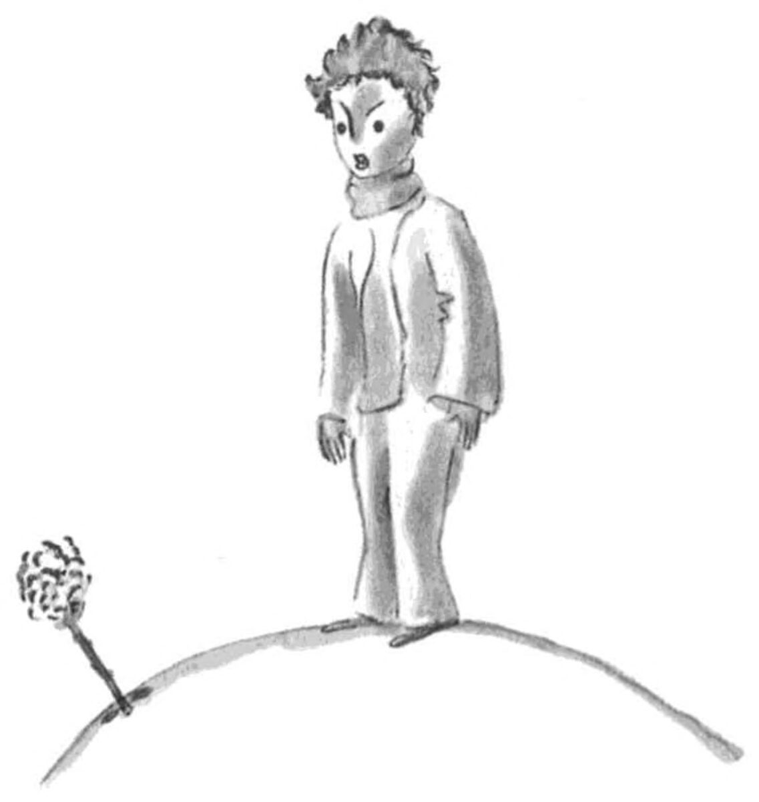
(8.2)ni'o xy noi [pu tai tcila gunka] cu cusku di'e fau lo nu [sipna frumu]
Et elle, qui avait travaillé avec tant de précision, dit en bâillant :
And, after working with all this painstaking precision, she yawned and said:
(8.3)— .i .a'i mi ja'aru'e co'a cikna .i ko mi fraxu .i .u'u mi za'o mulno krekalsa
– Ah ! Je me réveille à peine… Je vous demande pardon… Je suis encore toute décoiffée…
“Ah! I am scarcely awake. I beg that you will excuse me. My petals are still all disarranged . . .”
(8.4)ni'o lo cmalu noltru ka'enai rivbi lo nu [manci]
Le petit prince, alors, ne put contenir son admiration :
But the little prince could not restrain his admiration:
(8.5)— .i .u'e do melbi
– Que vous êtes belle !
“Oh! How beautiful you are!”
(8.6)— .i go'i pei —sei lo xrula cu xutla spusku— .i mi dunli lo solri lo ka [jbena ca makau]
– N’est-ce pas, répondit doucement la fleur. Et je suis née en même temps que le soleil…
“Am I not?” the flower responded, sweetly. “And I was born at the same moment as the sun . . .”
(8.7)ni'o lo cmalu noltru cu drani smadi lo du'u [xy na mutce lo ka {cumla}] .i ku'i xy tai cnigau
Le petit prince devina bien qu’elle n’était pas trop modeste, mais elle était si émouvante !
The little prince could guess easily enough that she was not any too modest—but how moving—and exciting—she was!
(8.8)— .i pe'i tcika tu'a lo cerni sanmi —sei xy bazi jmina cusku— .i da'i do mi xendo lo nu [pensi mi]
– C’est l’heure, je crois, du petit déjeuner, avait-elle bientôt ajouté, auriez-vous la bonté de penser à moi…
“I think it is time for breakfast,” she added an instant later. “If you would have the kindness to think of my needs—”
(8.9)ni'o lo cmalu noltru fau lo nu [mulno se cfipu] kei ca lo nu [ba'o tolcri lo jaursabytcijaursabytci = djacu sabji tutci] cu vifne djacu selfu lo xrula
Et le petit prince, tout confus, ayant été chercher un arrosoir d’eau fraîche, avait servi la fleur.
And the little prince, completely abashed, went to look for a sprinkling-can of fresh water. So, he tended the flower.
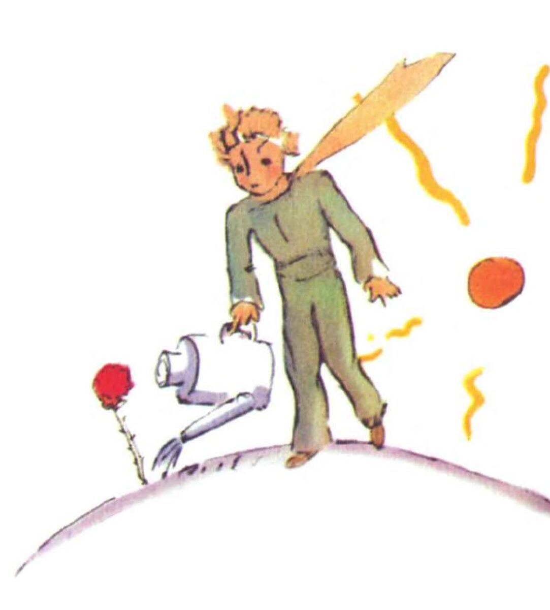
(8.10)ni'o taiku xy fanza ny fau lo nu [xy badri milxe jgira] .i mu'a xy ca lo donri fau lo nu [tavla fi lo vo kinli po'e xy] cu cusku di'e lo cmalu noltru
Ainsi l’avait-elle bien vite tourmenté par sa vanité un peu ombrageuse. Un jour, par exemple, parlant de ses quatre épines, elle avait dit au petit prince :
So, too, she began very quickly to torment him with her vanity—which was, if the truth be known, a little difficult to deal with. One day, for instance, when she was speaking of her four thorns, she said to the little prince:
(8.11)— .i .e'e klama ti fa lo tirxu noi [se jgalu]
– Ils peuvent venir, les tigres, avec leurs griffes !
“Let the tigers come with their claws!”
(8.12)— .i no tirxu cu zvati lo mi terdi —sei lo cmalu noltru cu fapro cusku— .i ji'a lo tirxu na citka lo srasu
– Il n’y a pas de tigres sur ma planète, avait objecté le petit prince, et puis les tigres ne mangent pas l’herbe.
“There are no tigers on my planet,” the little prince objected. “And, anyway, tigers do not eat weeds.”
(8.13)— .i mi na srasu —sei lo xrula cu xutla spusku
– Je ne suis pas une herbe, avait doucement répondu la fleur.
“I am not a weed,” the flower replied, sweetly.
(8.14)— .i ko mi fraxu
– Pardonnez-moi…
“Please excuse me . . .”
(8.15)— .i mi na terpa lo tirxu .i ku'i mi mutce terpa lo vacri flecu .i xu do ponse lo bifmarbi
– Je ne crains rien des tigres, mais j’ai horreur des courants d’air. Vous n’auriez pas un paravent ?
“I am not at all afraid of tigers,” she went on, “but I have a horror of drafts. I suppose you wouldn’t have a screen for me?”
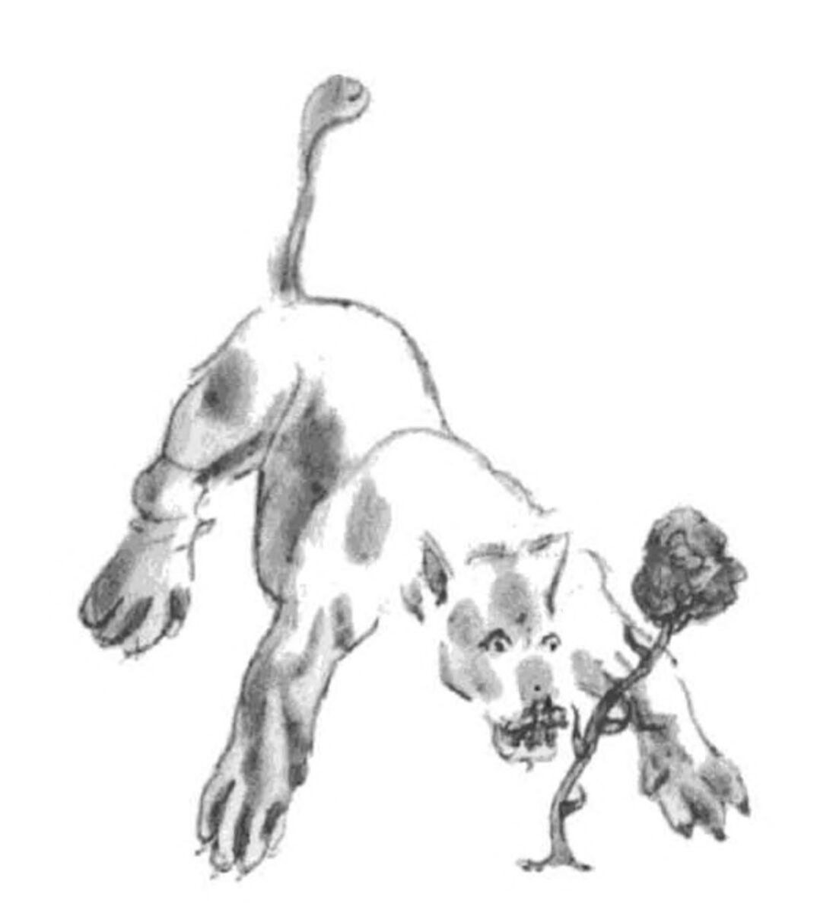
(8.16)ni'o «lu mutce terpa lo vacri flecu .i na zabna funca lo spati —sei lo cmalu noltru cu zgana— .i lo vi xrula cu mutce pluja li'u»
« Horreur des courants d’air… ce n’est pas de chance, pour une plante, avait remarqué le petit prince. Cette fleur est bien compliquée… »
“A horror of drafts—that is bad luck, for a plant,” remarked the little prince, and added to himself, “This flower is a very complex creature . . .”
(8.17)— .i ca ro vanci do mi ba setca lo blacygai .i mutce lenku bu'u lo medomoi .i xlali stuzi .i bu'u lo te klama be fi mi .y
– Le soir vous me mettrez sous globe. Il fait très froid chez vous. C’est mal installé. Là d’où je viens…
“At night I want you to put me under a glass globe. It is very cold where you live. In the place I came from—”
(8.18)ni'o ku'i xy dicra vo'a .i xy pu klama fau lo nu [tsiju] .i xy ka'enai pu se slabu lo drata terdi .i xy fau lo nu [ckeji lo nu {curmi lo nu (da facki fi lo nu ⟨xy bregau lo tai klina jitfa⟩)}] cu so'uji'iciroi kafke tezu'e lo nu [lo cmalu noltru cu zungi]
Mais elle s’était interrompue. Elle était venue sous forme de graine. Elle n’avait rien pu connaître des autres mondes. Humiliée de s’être laissé surprendre à préparer un mensonge aussi naïf, elle avait toussé deux ou trois fois, pour mettre le petit prince dans son tort :
But she interrupted herself at that point. She had come in the form of a seed. She could not have known anything of any other worlds. Embarassed over having let herself be caught on the verge of such a naďve untruth, she coughed two or three times, in order to put the little prince in the wrong.
(8.19)— .i xu lo bifmarbi
– Ce paravent ?…
“The screen?”
(8.20)— .i mi pu'o klama tezu'e lo nu [tolcri] .i ku'i do mi tavla
– J’allais le chercher mais vous me parliez !
“I was just going to look for it when you spoke to me . . .”
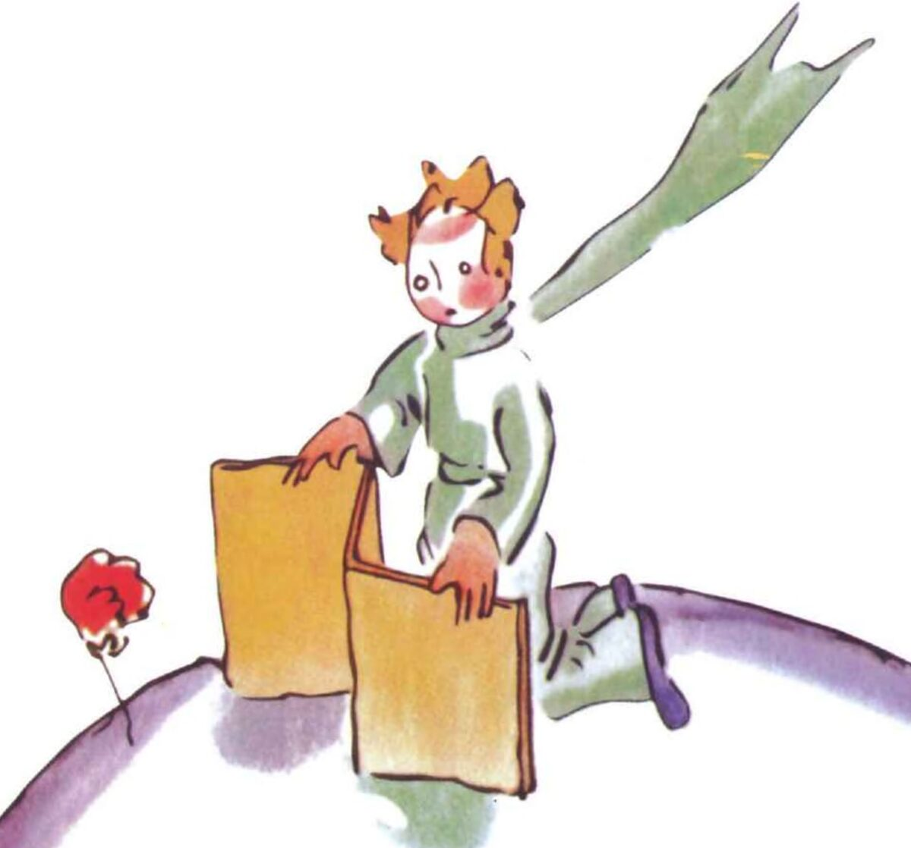
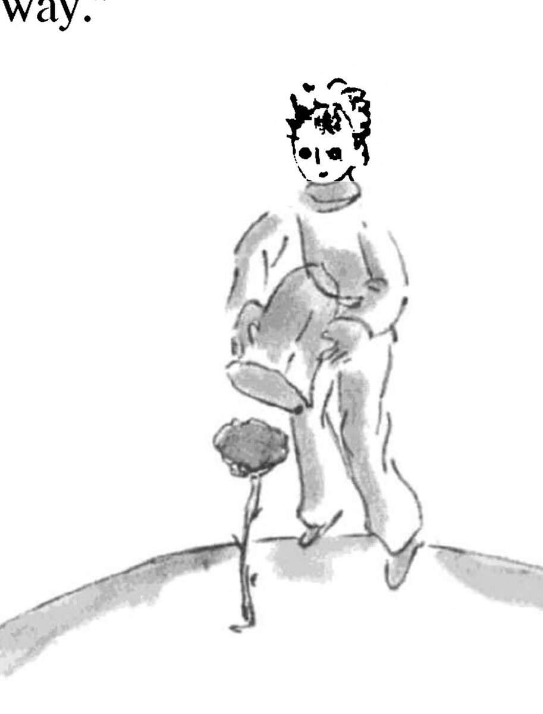
(8.21)ni'o xy bapli lo nu [kafke] kei tezu'e lo nu [frigau ny lo zugyselcni]
Alors elle avait forcé sa toux pour lui infliger quand même des remords.
Then she forced her cough a little more so that he should suffer from remorse just the same.
(8.22)ni'o taiku lo cmalu noltru mu'inai lo zabna terzu'e pe lo ny nunprami bazi tolylacri xy .i ny junri jundi lo na'e vajni valsi gi'e binxo lo mutce tolgei
Ainsi le petit prince, malgré la bonne volonté de son amour, avait vite douté d’elle. Il avait pris au sérieux des mots sans importance, et était devenu très malheureux.
So the little prince, in spite of all the good will that was inseparable from his love, had soon come to doubt her. He had taken seriously words which were without importance, and it made him very unhappy.
(8.23)ni'o «lu .ei mi pu na'e tirna xy —sei ny fi mi ca lo djedi cu lacri cusku— .i .ei da noroi tirna lo xrula .i .ei da xy catlu gi'e sumne .i lo memimoi cu clugau lo mi terdi lo titla panci .i ku'i mi pu na se pluka .i lo lisri be lo jgalu be'o noi [tai fanza mi] cu .ei cnigau mi li'u»
« J’aurais dû ne pas l’écouter, me confia-t-il un jour, il ne faut jamais écouter les fleurs. Il faut les regarder et les respirer. La mienne embaumait ma planète, mais je ne savais pas m’en réjouir. Cette histoire de griffes, qui m’avait tellement agacé, eût dû m’attendrir… »
“I ought not to have listened to her,” he confided to me one day. “One never ought to listen to the flowers. One should simply look at them and breathe their fragrance. Mine perfumed all my planet. But I did not know how to take pleasure in all her grace. This tale of claws, which disturbed me so much, should only have filled my heart with tenderness and pity.”
(8.24)ni'o ny za'o lacri cusku «lu mi pu na snada lo nu [jimpe] .i .ei mi pajni ji'u lo se zukte .enai lo valsi .i iu xy mi panci clugau gi'e te gusni .i .u'u .eisai mi na cliva .i .ei mi smadi fi lo nu [xy xendo] poi [se mipri fo lo nu {xy tcica}] .i .oi lo xrula cu tai natfe tarti .i ku'i mi dukse lo ka [citno] kei lo nu [djuno kakne lo nu {prami xy}] li'u»
Il me confia encore :
« Je n’ai alors rien su comprendre ! J’aurais dû la juger sur les actes et non sur les mots. Elle m’embaumait et m’éclairait. Je n’aurais jamais dû m’enfuir ! J’aurais dû deviner sa tendresse derrière ses pauvres ruses. Les fleurs sont si contradictoires ! Mais j’étais trop jeune pour savoir l’aimer. »
And he continued his confidences:
“The fact is that I did not know how to understand anything! I ought to have judged by deeds and not by words. She cast her fragrance and her radiance over me. I ought never to have run away from her . . . I ought to have guessed all the affection that lay behind her poor little strategems. Flowers are so inconsistent! But I was too young to know how to love her …”
so mo'o9
(9.1)ni'o pe'i ny se prali lo nu [cliva] kei lo nu [lo so'o cilce cipni cu zdacne] .i ca lo nuncliva cerni ny gasnu lo nu [lo ny terdi cu mulno cnici] .i ny kurji pumlumcipumlumci = purmo lumci lo cikna je'erma'a .i ny ponse re je'erma'a poi [cikna] zi'e noi [xamgu se pilno fi lo nu {glagau lo cerni sanmi}] .i ny ponse pa cando je'erma'a ku ji'a .i ku'i cu'u ny da noroi djuno .iseki'ubo ny pumlumci lo cando je'erma'a ku ji'a .i lo je'erma'a va'o lo nu [drani pumlumci] cu di'i tolvlile jelca secau lo nu [jetce] .i lo je'erma'a nu [jetce] cu simsa lo damtubnu fagri .i li'a bu'u lo mi'o terdi mi'o dukse lo ka [cmalu] kei lo nu [ka'e pumlumci lo je'erma'a] .iseki'ubo jy mutce lo ka [jai raktu mi'o]
Je crois qu’il profita, pour son évasion, d’une migration d’oiseaux sauvages. Au matin du départ il mit sa planète bien en ordre. Il ramona soigneusement ses volcans en activité. Il possédait deux volcans en activité. Et c’était bien commode pour faire chauffer le petit déjeuner du matin. Il possédait aussi un volcan éteint. Mais, comme il disait, « On ne sait jamais ! » Il ramona donc également le volcan éteint. S’ils sont bien ramonés, les volcans brûlent doucement et régulièrement, sans éruptions. Les éruptions volcaniques sont comme des feux de cheminée. Évidemment sur notre terre nous sommes beaucoup trop petits pour ramoner nos volcans. C’est pourquoi ils nous causent des tas d’ennuis.
I believe that for his escape he took advantage of the migration of a flock of wild birds. On the morning of his departure he put his planet in perfect order. He carefully cleaned out his active volcanoes. He possessed two active volcanoes; and they were very convenient for heating his breakfast in the morning. He also had one volcano that was extinct. But, as he said, “One never knows!” So he cleaned out the extinct volcano, too. If they are well cleaned out, volcanoes burn slowly and steadily, without any eruptions. Volcanic eruptions are like fires in a chimney.
On our earth we are obviously much too small to clean out our volcanoes. That is why they bring no end of trouble upon us.
(9.2)ni'o ji'a ny vimcu fau lo nu [milxe badri] kei lo romoi be lo tricrbaubau co'arbanro .i ny krici lo du'u [ny ba noroi xruti] .i ku'i ro lo slabu se gunka cu simlu ca lo ca cerni lo ka [mutce lo ka {titla}] .i ny ca lo nu [ny lo xrula rore'u jaursabji gi'e pu'o setca lo blacygai] cu sanji lo nu [djica lo nu {klaku}]
Le petit prince arracha aussi, avec un peu de mélancolie, les dernières pousses de baobabs. Il croyait ne jamais devoir revenir. Mais tous ces travaux familiers lui parurent, ce matin-là, extrêmement doux. Et, quand il arrosa une dernière fois la fleur, et se prépara à la mettre à l’abri sous son globe, il se découvrit l’envie de pleurer.
The little prince also pulled up, with a certain sense of dejection, the last little shoots of the baobabs. He believed that he would never want to return. But on this last morning all these familiar tasks seemed very precious to him. And when he watered the flower for the last time, and prepared to place her under the shelter of her glass globe, he realized that he was very close to tears.
(9.3)— .i co'o —sei ny fi lo xrula cu cusku
– Adieu, dit-il à la fleur.
“Goodbye,” he said to the flower.
(9.4)ni'o ku'i xy na spusku
Mais elle ne lui répondit pas.
But she made no answer.
(9.5)— .i co'o —sei ny krefu cusku
– Adieu, répéta-t-il.
“Goodbye,” he said again.
(9.6)ni'o lo xrula cu kafke .i ku'i na se rinka lo nu [xy bilma]
La fleur toussa. Mais ce n’était pas à cause de son rhume.
The flower coughed. But it was not because she had a cold.
(9.7)— .i mi pu bebna —sei xy za cusku— .i ko mi fraxu .i ko troci lo nu [do gleki]
– J’ai été sotte, lui dit-elle enfin. Je te demande pardon. Tâche d’être heureux.
“I have been silly,” she said to him, at last. “I ask your forgiveness. Try to be happy . . .”
(9.8)ni'o ny se spaji lo nu [claxu lo nu {vlasfa}] .i ny stali fau lo nu [mulno se cfipu gi'e jgari lo blacygai] .i ny na jimpe fi lo vi tolvlile cando
Il fut surpris par l’absence de reproches. Il restait là tout déconcerté, le globe en l’air. Il ne comprenait pas cette douceur calme.
He was surprised by this absence of reproaches. He stood there all bewildered, the glass globe held arrested in mid-air. He did not understand this quiet sweetness.
(9.9)— .i je'u mi do prami —sei lo xrula fi ny cusku— .i do pu djuno noda fi'o fuzme mi .i nasai vajni .i ku'i do mi dunli lo ka [bebna] .i ko troci lo nu [do gleki] .i ko toljgari lo blacygai .i mi na za'o djica tu'a by
– Mais oui, je t’aime, lui dit la fleur. Tu n’en as rien su, par ma faute. Cela n’a aucune importance. Mais tu as été aussi sot que moi. Tâche d’être heureux… Laisse ce globe tranquille. Je n’en veux plus.
“Of course I love you,” the flower said to him. “It is my fault that you have not known it all the while. That is of no importance. But you—you have been just as foolish as I. Try to be happy . . . Let the glass globe be. I don’t want it any more.”
(9.10)— .i ku'i lo brife .y
– Mais le vent…
“But the wind—”
(9.11)— .i mi na tai bilma .i lo nicte ke vifne vacri ba xamgu mi .i mi xrula
– Je ne suis pas si enrhumée que ça… L’air frais de la nuit me fera du bien. Je suis une fleur.
“My cold is not so bad as all that . . . The cool night air will do me good. I am a flower.”
(9.12)— .i ku'i lo danlu .y
– Mais les bêtes…
“But the animals—”
(9.13)— .i .ei mi renvi tu'a reji'ici ciftoldi va'o lo nu [mi djica lo nu {se slabu lo toldi}] .i ti'e tai melbi .i va'onaiku ma mi ba vitke .i do ba darno .i lo barda danlu zo'u mi na terpa .i mi se jgalu
– Il faut bien que je supporte deux ou trois chenilles si je veux connaître les papillons. Il paraît que c’est tellement beau. Sinon qui me rendra visite ? Tu seras loin, toi. Quant aux grosses bêtes, je ne crains rien. J’ai mes griffes.
“Well, I must endure the presence of two or three caterpillars if I wish to become acquainted with the butterflies. It seems that they are very beautiful. And if not the butterflies—and the caterpillars—who will call upon me? You will be far away . . . As for the large animals—I am not at all afraid of any of them. I have my claws.”
(9.14)ni'o xy sapru'i jarco lo vo kinli .ibabo xy jmina cusku di'e
Et elle montrait naïvement ses quatre épines. Puis elle ajouta :
And, naďvely, she showed her four thorns. Then she added:
(9.15)— .i .oi ko na tai stali .i do ba'o jdice lo du'u [do cliva] .i ko klama
– Ne traîne pas comme ça, c’est agaçant. Tu as décidé de partir. Va-t’en.
“Don’t linger like this. You have decided to go away. Now go!”
(9.16)ni'o ki'ubo xy na djica lo nu [ny viska lo nu {xy klaku}] .i xy tai jgira xrula
Car elle ne voulait pas qu’il la vît pleurer. C’était une fleur tellement orgueilleuse…
For she did not want him to see her crying. She was such a proud flower.
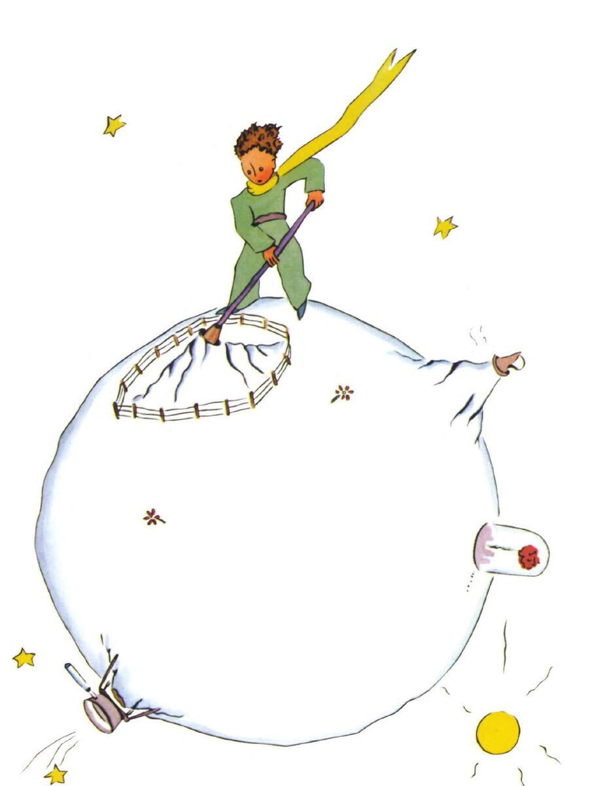
pano mo'o10
(10.1)ni'o ny zvati lo kensa be lo plinycma po'u li 325 jo'u li 326 jo'u li 327 jo'u li 328 jo'u li 329 jo'u li 330 .i seki'ubo pamai ny vitke fi py tezu'e lo nu [zukte da gi'e cilre]
Il se trouvait dans la région des astéroïdes 325, 326, 327, 328, 329 et 330. Il commença donc par les visiter pour y chercher une occupation et pour s’instruire.
He found himself in the neighborhood of the asteroids 325, 326, 327, 328, 329, and 330. He began, therefore, by visiting them, in order to add to his knowledge.
(10.2)ni'o lo pamoi cu se xabju lo nolraitru .i lo nolraitru cu zutse fi'o se dasni lo zirpu jo'u .ermine lo ritli stizu noi [sampu jeku'i banli]
La première était habitée par un roi. Le roi siégeait, habillé de pourpre et d’hermine, sur un trône très simple et cependant majestueux.
The first of them was inhabited by a king. Clad in royal purple and ermine, he was seated upon a throne which was at the same time both simple and majestic.
(10.3)— .i .a'e lo se turni —sei lo nolraitru ca lo nu [ny viska lo cmalu noltru] cu krixa cusku
– Ah ! Voilà un sujet, s’écria le roi quand il aperçut le petit prince.
“Ah! Here is a subject,” exclaimed the king, when he saw the little prince coming.
(10.4)ni'o lo cmalu noltru cu preti cusku fi vo'a fe «lu ta'i ma tu ka'e djuno fi mi va'o lo nu [tu mi pu noroi viska] li'u»
Et le petit prince se demanda :
« Comment peut-il me reconnaître puisqu’il ne m’a encore jamais vu ! »
And the little prince asked himself:
“How could he recognize me when he had never seen me before?”
(10.5)ni'o ny na djuno lo du'u [ga'a lo nolraitru lo munje cu sampu mutce] .i ro remna cu ga'a se turni
Il ne savait pas que, pour les rois, le monde est très simplifié. Tous les hommes sont des sujets.
He did not know how the world is simplified for kings. To them, all men are subjects.
(10.6)— .i ko jbikla tezu'e lo nu [mi do semau viska —sei lo nolraitru noi {mutce jgira lo nu uo (nolraitru da)} cu cusku]
– Approche-toi que je te voie mieux, lui dit le roi qui était tout fier d’être roi pour quelqu’un.
“Approach, so that I may see you better,” said the king, who felt consumingly proud of being at last a king over somebody.
(10.7)ni'o lo cmalu noltru cu kanla sisku lo se zutse .i ku'i lo plini cu culno lo banli ke .ermine kosta .iseki'ubo ny sanli stali .i ny ri'a lo nu [tatpi] cu sipfru
Le petit prince chercha des yeux où s’asseoir, mais la planète était toute encombrée par le magnifique manteau d’hermine. Il resta donc debout, et, comme il était fatigué, il bâilla.
The little prince looked everywhere to find a place to sit down; but the entire planet was crammed and obstructed by the king’s magnificent ermine robe. So he remained standing upright, and, since he was tired, he yawned.
(10.8)— .i ga'i lo nu [sipfru] cu naldrani nu [tarti va'o lo nu {lo nolraitru cu zvati —sei lo nolraitru cu cusku—}] .i mi tolcurmi la'e di'u
– Il est contraire à l’étiquette de bâiller en présence d’un roi, lui dit le monarque. Je te l’interdis.
“It is contrary to etiquette to yawn in the presence of a king,” the monarch said to him. “I forbid you to do so.”
(10.9)— .i mi ka'enai fanta —sei lo cmalu noltru cu spuda cusku— .i mi puze'a klama gi'enai sipna
– Je ne peux pas m’en empêcher, répondit le petit prince tout confus. J’ai fait un long voyage et je n’ai pas dormi…
“I can’t help it. I can’t stop myself,” replied the little prince, thoroughly embarrassed. “I have come on a long journey, and I have had no sleep . . .”
(10.10)— .iseki'ubo —sei lo nolraitru fi ny cusku— mi do minde lo nu [do sipfru] .i mi ze'u lo nanca be li so'i na zgana lo nu [da sipfru] .i lo nu [sipfru] cu rirci cinri mi .i .o'ocu'i ko za'ure'u sipfru .i mi minde
– Alors, lui dit le roi, je t’ordonne de bâiller. Je n’ai vu personne bâiller depuis des années. Les bâillements sont pour moi des curiosités. Allons ! bâille encore. C’est un ordre.
“Ah, then,” the king said. “I order you to yawn. It is years since I have seen anyone yawning. Yawns, to me, are objects of curiosity. Come, now! Yawn again! It is an order.”
(10.11)— .i la'e di'u se xanka mi .i mi na kakne lo nu [ranji —sei lo cmalu noltru cu xunre binxo]
– Ça m’intimide… je ne peux plus… fit le petit prince tout rougissant.
“That frightens me . . . I cannot, any more . . .” murmured the little prince, now completely abashed.
(10.12)— .i .o'ucu'i —sei lo nolraitru cu spuda— .i .i'a mi do minde lo nu [do ga {sipfru} ginai {sipfru}]
– Hum ! Hum ! répondit le roi. Alors je… je t’ordonne tantôt de bâiller et tantôt de…
“Hum! Hum!” replied the king. “Then I—I order you sometimes to yawn and sometimes to—”
(10.13)ni'o ny milxe lo ka [fi'uskufi'usku = cfipu cusku] kei gi'e simlu lo ka [se fanza]
Il bredouillait un peu et paraissait vexé.
He sputtered a little, and seemed vexed.
(10.14)ni'o lo nolraitru cu se vajni lo nu [da sinma lo nu {ny catni}] .i ny na renvi lo nu [toltinbe] .i ny traji lo ka [turni] .i ku'i ki'u lo nu [ny mutce lo ka {xendo}] cu minde fi lo racli
Car le roi tenait essentiellement à ce que son autorité fût respectée. Il ne tolérait pas la désobéissance. C’était un monarque absolu. Mais, comme il était très bon, il donnait des ordres raisonnables.
For what the king fundamentally insisted upon was that his authority should be respected. He tolerated no disobedience. He was an absolute monarch. But, because he was a very good man, he made his orders reasonable.
(10.15)ni'o «lu va'o lo nu [mi minde —sei ny ta'e cusku—] .i va'o lo nu [ge {mi minde lo jatna lo nu (binxo lo xamsi cipni)} gi {jy na tinbe}] cu fuzme fa jy na.e mi li'u»
« Si j’ordonnais, disait-il couramment, si j’ordonnais à un général de se changer en oiseau de mer, et si le général n’obéissait pas, ce ne serait pas la faute du général. Ce serait ma faute. »
“If I ordered a general,” he would say, by way of example, “if I ordered a general to change himself into a sea bird, and if the general did not obey me, that would not be the fault of the general. It would be my fault.”
(10.16)— .i .e'apei mi zutse —sei lo cmalu noltru cu toldarsi retsku
– Puis-je m’asseoir ? s’enquit timidement le petit prince.
“May I sit down?” came now a timid inquiry from the little prince.
(10.17)— .i mi do minde lo nu [do zutse —sei lo nolraitru noi {nobli crepu lo pagbu be lo ny rankre kosta} cu spusku]
– Je t’ordonne de t’asseoir, lui répondit le roi, qui ramena majestueusement un pan de son manteau d’hermine.
“I order you to do so,” the king answered him, and majestically gathered in a fold of his ermine mantle.
(10.18)ni'o ku'i lo cmalu noltru cu se spaji .i lo plini cu cmatcetce .i lo nolraitru cu ka'e turni ma
Mais le petit prince s’étonnait. La planète était minuscule. Sur quoi le roi pouvait-il bien régner ?
But the little prince was wondering . . . The planet was tiny. Over what could this king really rule?
(10.19)— .i doi nobli —sei cyny fi ny cusku— ko mi fraxu lo nu [mi retsku fi do]
– Sire, lui dit-il… je vous demande pardon de vous interroger…
“Sire,” he said to him, “I beg that you will excuse my asking you a question—”
(10.20)— .i mi do minde lo nu [do retsku fi mi —sei lo nolraitru zi sutra cusku]
– Je t’ordonne de m’interroger, se hâta de dire le roi.
“I order you to ask me a question,” the king hastened to assure him.
(10.21)— .i doi nobli .y do turni ma
– Sire… sur quoi régnez-vous ?
“Sire—over what do you rule?”
(10.22)— .i roda —sei lo nolraitru sekai lo ka [mutce sampu] cu spusku
– Sur tout, répondit le roi, avec une grande simplicité.
“Over everything,” said the king, with magnificent simplicity.
(10.23)— .i xu roda
– Sur tout ?
“Over everything?”
(10.24)ni'o lo nolraitru cu sampu farja'o lo ny plini .e lo drata plini .e lo tarci
Le roi d’un geste discret désigna sa planète, les autres planètes et les étoiles.
The king made a gesture, which took in his planet, the other planets, and all the stars.
(10.25)— .i xu turni ro tu —sei lo cmalu noltru cu cusku
– Sur tout ça ? dit le petit prince.
“Over all that?” asked the little prince.
(10.26)— .i turni ro tu —sei lo nolraitru cu spusku
– Sur tout ça… répondit le roi.
“Over all that,” the king answered.
(10.27)ni'o ny turni co traji po'onai je mujyku'emujyku'e = munje kuspe ji'a
Car non seulement c’était un monarque absolu mais c’était un monarque universel.
For his rule was not only absolute: it was also universal.
(10.28)— .i xu lo tarci cu tinbe fi do
– Et les étoiles vous obéissent ?
“And the stars obey you?”
(10.29)— .i li'a go'i —sei lo nolraitru cu cusku— .i ty zi tinbe .i mi na renvi lo nu [toltinbe]
– Bien sûr, lui dit le roi. Elles obéissent aussitôt. Je ne tolère pas l’indiscipline.
“Certainly they do,” the king said. “They obey instantly. I do not permit insubordination.”
(10.30)ni'o lo tai nu [vlipa] cu se manci lo cmalu noltru .i ri va'o lo nu da'i [tai vlipa] cu kakne lo nu [zvati vovo po'onai solri nu {canci} .a zereboi ji'a sy .a panonoboi ji'asai sy .a renonoboi ji'acai solri nu {canci} kei ca pa djedi gi'e noroi bevri lo stizu] .i ny mu'i lo nu [milxe badri lo nu {morji lo ny se cliva ke cmalu plini}] cu darsi lo nu [cpedu lo se dunda lo nolraitru]
Un tel pouvoir émerveilla le petit prince. S’il l’avait détenu lui-même, il aurait pu assister, non pas à quarante-quatre, mais à soixante-douze, ou même à cent, ou même à deux cents couchers de soleil dans la même journée, sans avoir jamais à tirer sa chaise ! Et comme il se sentait un peu triste à cause du souvenir de sa petite planète abandonnée, il s’enhardit à solliciter une grâce du roi :
Such power was a thing for the little prince to marvel at. If he had been master of such complete authority, he would have been able to watch the sunset, not forty-four times in one day, but seventy-two, or even a hundred, or even two hundred times, without ever having to move his chair. And because he felt a bit sad as he remembered his little planet which he had forsaken, he plucked up his courage to ask the king a favor:
(10.31)— .i mi djica lo nu [viska lo solri nu {canci}] .i .e'o io ko minde lo solri lo nu [canci]
– Je voudrais voir un coucher de soleil… Faites-moi plaisir… Ordonnez au soleil de se coucher…
“I should like to see a sunset . . . Do me that kindness . . . Order the sun to set . . .”
(10.32)— .i va'o lo nu da'i [ge {mi minde lo jatna lo nu (vofli klama lo xrula lo drata tai tu'a lo toldi) kei .a lo nu (finti lo draci) kei .a lo nu (binxo lo xamsi cipni)} gi {jy na tinbe lo te minde}] zo'u jy ji mi fuzme srera
– Si j’ordonnais à un général de voler d’une fleur à l’autre à la façon d’un papillon, ou d’écrire une tragédie, ou de se changer en oiseau de mer, et si le général n’exécutait pas l’ordre reçu, qui, de lui ou de moi, serait dans son tort ?
“If I ordered a general to fly from one flower to another like a butterfly, or to write a tragic drama, or to change himself into a sea bird, and if the general did not carry out the order that he had received, which one of us would be in the wrong?” the king demanded. “The general, or myself?”
(10.33)— .i do go'i —sei lo cmalu noltru cu jdari cusku
– Ce serait vous, dit fermement le petit prince.
“You,” said the little prince firmly.
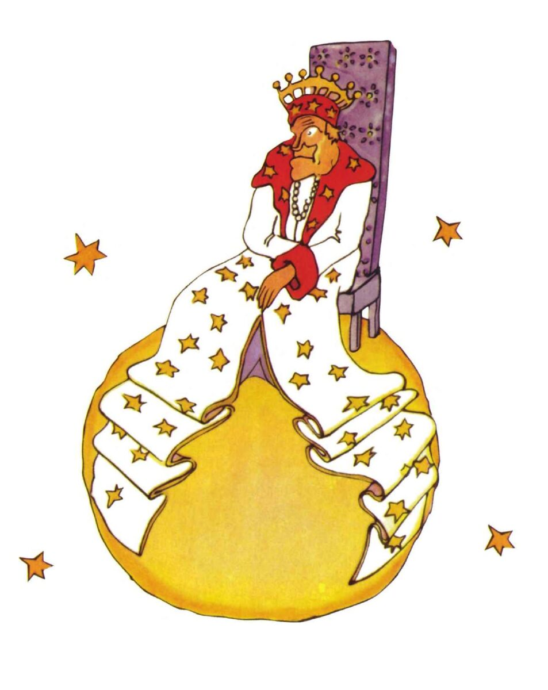
(10.34)— .i drani .i .ei da mi'ecpe fi rode fe lo se kakne be de —sei lo nolraitru di'a cusku— .i lo nu [catni] cu ralju se jicmu lo nu [racli] .i va'o lo nu [do minde lo do prenu lo nu {plipe lo xamsi}] cu ba catni fapro fa py .i mi lo nu [mi'ecpe lo nu {tinbe}] cu zifre ki'u lo nu [mi racli minde]
– Exact. Il faut exiger de chacun ce que chacun peut donner, reprit le roi. L’autorité repose d’abord sur la raison. Si tu ordonnes à ton peuple d’aller se jeter à la mer, il fera la révolution. J’ai le droit d’exiger l’obéissance parce que mes ordres sont raisonnables.
“Exactly. One must require from each one the duty which each one can perform,” the king went on. “Accepted authority rests first of all on reason. If you ordered your people to go and throw themselves into the sea, they would rise up in revolution. I have the right to require obedience because my orders are reasonable.”
(10.35)— no'i lo mi solri nu [canci] cu mo —sei lo cmalu noltru noi [noroi tolmorji fi lo preti ca lo nu {ba'o cusku}] cu mojgau
– Alors mon coucher de soleil ? rappela le petit prince qui jamais n’oubliait une question une fois qu’il l’avait posée.
“Then my sunset?” the little prince reminded him: for he never forgot a question once he had asked it.
(10.36)— .i lo do solri nu [canci] zo'u do ba lifri .i mi ba mi'ecpe .i ku'i mi ba denpa ji'u lo mi turni saske lo nu [lo vanbi cu mapti]
– Ton coucher de soleil, tu l’auras. Je l’exigerai. Mais j’attendrai, dans ma science du gouvernement, que les conditions soient favorables.
“You shall have your sunset. I shall command it. But, according to my science of government, I shall wait until conditions are favorable.”
(10.37)— .i la'e di'u cabna ma —sei lo cmalu noltru cu djuno cpedu
– Quand ça sera-t-il ? s’informa le petit prince.
“When will that be?” inquired the little prince.
(10.38)— .i .y .y —sei lo nolraitru noi [ca'o tadni lo barda veldetri] cu spusku— .y .y cabna .y .y lo zi vanci ti'u li ji'i ze pi'e vono .i do ba zgana lo nu [mi ja'asai te tinbe]
– Hem ! hem ! lui répondit le roi, qui consulta d’abord un gros calendrier, hem ! hem ! ce sera, vers… vers… ce sera ce soir vers sept heures quarante ! Et tu verras comme je suis bien obéi.
“Hum! Hum!” replied the king; and before saying anything else he consulted a bulky almanac. “Hum! Hum! That will be about—about—that will be this evening about twenty minutes to eight. And you will see how well I am obeyed!”
(10.39)ni'o lo cmalu noltru cu sipfru .i ny xenru tu'a lo ny se claxu ke solri nu [canci] .iji'a ny xa'o milxe lo ka [se tolzdile]
Le petit prince bâilla. Il regrettait son coucher de soleil manqué. Et puis il s’ennuyait déjà un peu :
The little prince yawned. He was regretting his lost sunset. And then, too, he was already beginning to be a little bored.
(10.40)— .i .einai mi vi zukte —sei ny fi lo nolraitru cu cusku— .i .ai mi cliva
– Je n’ai plus rien à faire ici, dit-il au roi. Je vais repartir !
“I have nothing more to do here,” he said to the king. “So I shall set out on my way again.”
(10.41)— .i ko na cliva —sei lo nolraitru noi [tai jgari lo nu {turni da}] cu spusku— .i ko na cliva .i ca'e do raljitro
– Ne pars pas, répondit le roi qui était si fier d’avoir un sujet. Ne pars pas, je te fais ministre !
“Do not go,” said the king, who was very proud of having a subject. “Do not go. I will make you a Minister!”
(10.42)— .i raljitro ma
– Ministre de quoi ?
“Minister of what?”
(10.43)— .i .y lo nu [pajni]
– De… de la justice !
“Minster of—of Justice!”
(10.44)— .i ku'i no prenu vi ka'e se pajni
– Mais il n’y a personne à juger !
“But there is nobody here to judge!”
(10.45)— .i na djuno —sei lo nolraitru cu cusku— .i mi za'o na kuspe litru lo mi tutra .i mi dukse lo ka [tolcitno] .i mi claxu lo canlu be lo nobli carce .i mi tatpi lo nu [cadzu]
– On ne sait pas, lui dit le roi. Je n’ai pas fait encore le tour de mon royaume. Je suis très vieux, je n’ai pas de place pour un carrosse, et ça me fatigue de marcher.
“We do not know that,” the king said to him. “I have not yet made a complete tour of my kingdom. I am very old. There is no room here for a carriage. And it tires me to walk.”
(10.46)— .i .a'i mi ba'o catlu —sei lo cmalu noltru noi [salpo binxo tezu'e lo nu {za'ure'u zgana lo drata mlana be lo plini}] cu cusku— .i noda zvati tu ji'a
– Oh ! Mais j’ai déjà vu, dit le petit prince qui se pencha pour jeter encore un coup d’œil sur l’autre côté de la planète. Il n’y a personne là-bas non plus…
“Oh, but I have looked already!” said the little prince, turning around to give one more glance to the other side of the planet. On that side, as on this, there was nobody at all . . .
(10.47)— .iseva'obo do do ba pajni —sei lo nolraitru cu spusku— .i traji lo ka [nandu] .i lo sevzi lo drata cu mutce zmadu lo ka [nandu fa lo nu {pajni ce'u}] .i lo nu [do snada lo nu {do do pajni}] cu jarco lo nu [do ca'a prije]
– Tu te jugeras donc toi-même, lui répondit le roi. C’est le plus difficile. Il est bien plus difficile de se juger soi-même que de juger autrui. Si tu réussis à bien te juger, c’est que tu es un véritable sage.
“Then you shall judge yourself,” the king answered. “that is the most difficult thing of all. It is much more difficult to judge oneself than to judge others. If you succeed in judging yourself rightly, then you are indeed a man of true wisdom.”
(10.48)— .i mi —sei lo cmalu noltru cu cusku— cu kakne lo nu [mi mi pajni bu'u makau] .i mi na nitcu lo nu [xabju ti]
– Moi, dit le petit prince, je puis me juger moi-même n’importe où. Je n’ai pas besoin d’habiter ici.
“Yes,” said the little prince, “but I can judge myself anywhere. I do not need to live on this planet.”
(10.49)— .i .y .y —sei lo nolraitru cu cusku— mi birti lo du'u [lo tolcitno ratcu cu diklo da lo mi terdi] .i mi tirna ry ca lo nicte .i do ka'e pajni lo tolcitno ratcu .i do ry di'inai dapma lo nu [mrobi'o] .i taiku lo nu [ry jmive] cu ba jalge lo nu [do pajni] .i ku'i do ry ba roroi fraxu ki'u lo nu .ei [na xaksu ry] .i ry papo'omei
– Hem ! Hem ! dit le roi, je crois bien que sur ma planète il y a quelque part un vieux rat. Je l’entends la nuit. Tu pourras juger ce vieux rat. Tu le condamneras à mort de temps en temps. Ainsi sa vie dépendra de ta justice. Mais tu le gracieras chaque fois pour l’économiser. Il n’y en a qu’un.
“Hum! Hum!” said the king. “I have good reason to believe that somewhere on my planet there is an old rat. I hear him at night. You can judge this old rat. From time to time you will condemn him to death. Thus his life will depend on your justice. But you will pardon him on each occasion; for he must be treated thriftily. He is the only one we have.”
(10.50)— .i mi —sei lo cmalu noltru cu spusku— na nelci lo nu [mi dapma fi lo nu {mrobi'o}] .iji'a mi birti lo du'u [mi cliva]
– Moi, répondit le petit prince, je n’aime pas condamner à mort, et je crois bien que je m’en vais.
“I,” replied the little prince, “do not like to condemn anyone to death. And now I think I will go on my way.”
(10.51)— .i ko na co'e —sei lo nolraitru cu cusku
– Non, dit le roi.
“No,” said the king.
(10.52)ni'o ku'i lo cmalu noltru noi [bredi lo nu {cliva}] cu na djica lo nu [drigau lo tolcitno turni]
Mais le petit prince, ayant achevé ses préparatifs, ne voulut point peiner le vieux monarque :
But the little prince, having now completed his preparations for departure, had no wish to grieve the old monarch.
(10.53)— .i lo banli nobli va'o lo nu [djica lo nu {satci se tinbe}] cu .ei minde mi lo racli .i mu'a ny mi minde lo nu [mi cliva pu lo mo'u mentu] .i lo vanbi cu simlu lo ka [ca mapti]
– Si Votre Majesté désirait être obéie ponctuellement, elle pourrait me donner un ordre raisonnable. Elle pourrait m’ordonner, par exemple, de partir avant une minute. Il me semble que les conditions sont favorables…
“If Your Majesty wishes to be promptly obeyed,” he said, “he should be able to give me a reasonable order. He should be able, for example, to order me to be gone by the end of one minute. It seems to me that conditions are favorable . . .”
(10.54)ni'o lo nolraitru cu spusku noda .iseki'ubo lo cmalu noltru cu ze'i senpi .ibazibo fau lo nu [cnivasxu] cu cliva
Le roi n’ayant rien répondu, le petit prince hésita d’abord, puis, avec un soupir, prit le départ.
As the king made no answer, the little prince hesitated a moment. Then, with a sigh, he took his leave.
(10.55)— .i ca'e do mi jansu —sei lo nolraitru cu sutra ki'asku
– Je te fais mon ambassadeur, se hâta alors de crier le roi.
“I make you my Ambassador,” the king called out, hastily.
(10.56)ni'o ny catni mutce simlu
Il avait un grand air d’autorité.
He had a magnificent air of authority.
(10.57)ni'o «lu lo makcu prenu cu cizra mutce li'u» se cusku lo cmalu noltru ri ca lo nu [litru]
« Les grandes personnes sont bien étranges », se dit le petit prince, en lui-même, durant son voyage.
“The grown-ups are very strange,” the little prince said to himself, as he continued on his journey.
papa mo'o11
(11.1)ni'o lo remoi plini cu se xabju lo sezyjgidu'e
La seconde planète était habitée par un vaniteux :
The second planet was inhabited by a conceited man.
(11.2)— .i .a'e lo sinma be mi mi vitke —sei lo sezyjgidu'e ca lo nu [co'a viska lo cmalu noltru] cu vu krixa cusku
– Ah ! Ah ! Voilà la visite d’un admirateur ! s’écria de loin le vaniteux dès qu’il aperçut le petit prince.
“Ah! Ah! I am about to receive a visit from an admirer!” he exclaimed from afar, when he first saw the little prince coming.
(11.3)ni'o ga'a lo sezyjgidu'e ro drata remna cu sinma sy
Car, pour les vaniteux, les autres hommes sont des admirateurs.
For, to conceited men, all other men are admirers.
(11.4)— .i coi do'u —sei lo cmalu noltru cu cusku— .i do dasni lo cizra mapku
– Bonjour, dit le petit prince. Vous avez un drôle de chapeau.
“Good morning,” said the little prince. “That is a queer hat you are wearing.”
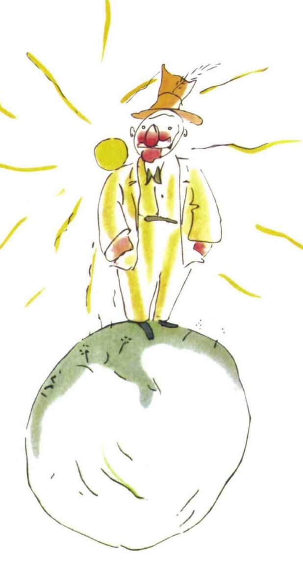
(11.5)— .i ti tutci lo nu [mi rinsa —sei lo sezyjgidu'e cu spusku—] .i ti tutci lo nu [mi rinsa ca lo nu {mi se ki'arzau}] .i ku'i uinai noroiku da vi litru
– C’est pour saluer, lui répondit le vaniteux. C’est pour saluer quand on m’acclame. Malheureusement il ne passe jamais personne par ici.
“It is a hat for salutes,” the conceited man replied. “It is to raise in salute when people acclaim me. Unfortunately, nobody at all ever passes this way.”
(11.6)— .i .a'a —sei lo cmalu noltru noi [na jimpe] cu cusku
– Ah oui ? dit le petit prince qui ne comprit pas.
“Yes?” said the little prince, who did not understand what the conceited man was talking about.
(11.7)— .i ko jalsimgau lo do xance —sei lo sezyjgidu'e cu stidi
– Frappe tes mains l’une contre l’autre, conseilla donc le vaniteux.
“Clap your hands, one against the other,” the conceited man now directed him.
(11.8)ni'o lo cmalu noltru cu jalsimgau lo xance .i lo sezyjgidu'e cu cunlo rinsa fau lo nu [lafti lo mapku]
Le petit prince frappa ses mains l’une contre l’autre. Le vaniteux salua modestement en soulevant son chapeau.
The little prince clapped his hands. The conceited man raised his hat in a modest salute.
(11.9)ni'o «lu ta zdimau lo nu [vitke lo nolraitru] li'u» se sezysku lo cmalu noltru .i ny di'a ca'o jalsimgau lo xance .i lo sezyjgidu'e di'a rinsa fau lo nu [lafti lo mapku]
« Ça c’est plus amusant que la visite au roi », se dit en lui-même le petit prince. Et il recommença de frapper ses mains l’une contre l’autre. Le vaniteux recommença de saluer en soulevant son chapeau.
“This is more entertaining than the visit to the king,” the little prince said to himself. And he began again to clap his hands, one against the other. The conceited man again raised his hat in salute.
(11.10)ni'o baza lo mentu be li mu be'o noi [nu {zajba}] cu tatpi fa lo cmalu noltru lo stodi nu [kelci]
Après cinq minutes d’exercice le petit prince se fatigua de la monotonie du jeu :
After five minutes of this exercise the little prince grew tired of the game’s monotony.
(11.11)— .i pau lo nu [lo mapku cu farlu —sei ny preti cusku—] cu se sarcu ma
– Et, pour que le chapeau tombe, demanda-t-il, que faut-il faire ?
“And what should one do to make the hat come down?” he asked.
(11.12)ni'o ku'i lo sezyjgidu'e na tirna .i lo sezyjgidu'e noroi tirna na'ebo lo si'avla
Mais le vaniteux ne l’entendit pas. Les vaniteux n’entendent jamais que les louanges.
But the conceited man did not hear him. Conceited people never hear anything but praise.
(11.13)— .i xu do mi ja'asai mutce sinma —sei sy fi lo cmalu noltru cu preti cusku
– Est-ce que tu m’admires vraiment beaucoup ? demanda-t-il au petit prince.
“Do you really admire me very much?” he demanded of the little prince.
(11.14)— .i ma smuni zo sinma
– Qu’est-ce que signifie admirer ?
“What does that mean—’admire’?”
(11.15)— .i zo sinma cu se smuni lo du'u [zgana lo nu {mi traji lo ka (melbi) .e lo ka (zabna dasni) .e lo ka (ricfu mutce) .e lo ka (tolbebna) kei fo lo se terdi}]
– Admirer signifie reconnaître que je suis l’homme le plus beau, le mieux habillé, le plus riche et le plus intelligent de la planète.
“To admire means that you regard me as the handsomest, the best-dressed, the richest, and the most intelligent man on this planet.”
(11.16)— .i ku'i ue do nonkansa lo nu [se terdi]
– Mais tu es seul sur ta planète !
“But you are the only man on your planet!”
(11.17)— .i .e'osai ko mi sinma va'o makau
– Fais-moi ce plaisir. Admire-moi quand même !
“Do me this kindness. Admire me just the same.”
(11.18)— .i mi do sinma —sei lo cmalu noltru fau lo nu [milxe lafti lo janco] cu cusku— .i ku'i ma prali do la'e di'u
– Je t’admire, dit le petit prince, en haussant un peu les épaules, mais en quoi cela peut-il bien t’intéresser ?
“I admire you,” said the little prince, shrugging his shoulders slightly, “but what is there in that to interest you so much?”
(11.19)ni'o lo cmalu noltru cu cliva
Et le petit prince s’en fut.
And the little prince went away.
(11.20)ni'o «lu lo makcu prenu ja'a cizra mutce li'u» se cusku lo cmalu noltru ri ca lo nu [litru]
« Les grandes personnes sont décidément bien bizarres », se dit-il simplement en lui-même durant son voyage.
“The grown-ups are certainly very odd,” he said to himself, as he continued on his journey.
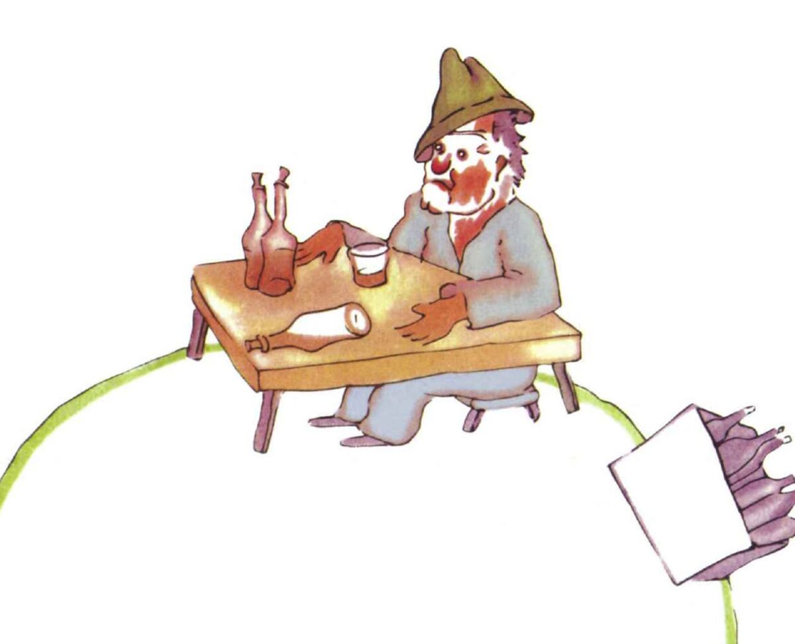
pare mo'o12
(12.1)ni'o lo za'umoi plini cu se xabju lo pixydu'e .i lo nu [vitke] cu tordu gi'eku'i rinka lo nu [lo cmalu noltru cu mutce lo ka {badri}]
La planète suivante était habitée par un buveur. Cette visite fut très courte, mais elle plongea le petit prince dans une grande mélancolie :
The next planet was inhabited by a tippler. This was a very short visit, but it plunged the little prince into deep dejection.
(12.2)— .i do va zukte ma —sei ny fi lo pixydu'e noi [smaji crane lo kunti botpi .e lo culno botpi] cu cusku
– Que fais-tu là ? dit-il au buveur, qu’il trouva installé en silence devant une collection de bouteilles vides et une collection de bouteilles pleines.
“What are you doing there?” he said to the tippler, whom he found settled down in silence before a collection of empty bottles and also a collection of full bottles.
(12.3)— .i mi pinxe —sei lo pixydu'e fau lo nu [badri simsa] cu spusku
– Je bois, répondit le buveur, d’un air lugubre.
“I am drinking,” replied the tippler, with a lugubrious air.
(12.4)— .i tezu'e ma do pinxe —sei lo cmalu noltru cu retsku
– Pourquoi bois-tu ? lui demanda le petit prince.
“Why are you drinking?” demanded the little prince.
(12.5)— .i tezu'e lo nu [mi tolmorji —sei lo pixydu'e cu spusku]
– Pour oublier, répondit le buveur.
“So that I may forget,” replied the tippler.
(12.6)— .i tolmorji ma —sei lo cmalu noltru noi [xa'o kecti py] cu retsku
– Pour oublier quoi ? s’enquit le petit prince qui déjà le plaignait.
“Forget what?” inquired the little prince, who already was sorry for him.
(12.7)— .i tolmorji lo du'u [mi ckeji —sei lo pixydu'e fau lo nu {dizgau lo stedu} cu zungi cusku]
– Pour oublier que j’ai honte, avoua le buveur en baissant la tête.
“Forget that I am ashamed,” the tippler confessed, hanging his head.
(12.8)— .i ckeji ma —sei lo cmalu noltru noi [djica lo nu {sidju}] cu datni cpedu
– Honte de quoi ? s’informa le petit prince qui désirait le secourir.
“Ashamed of what?” insisted the little prince, who wanted to help him.
(12.9)— .i ckeji lo nu [mi pinxe —sei lo pixydu'e noi {co'a stodi smaji} cu famsku]
– Honte de boire ! acheva le buveur qui s’enferma définitivement dans le silence.
“Ashamed of drinking!” The tipler brought his speech to an end, and shut himself up in an impregnable silence.
(12.10)ni'o lo cmalu noltru cu se cfipu cliva
Et le petit prince s’en fut, perplexe.
And the little prince went away, puzzled.
(12.11)ni'o «lu lo makcu prenu ja'asai cizra mutce li'u» se cusku lo cmalu noltru ri ca lo nu [litru]
« Les grandes personnes sont décidément très très bizarres », se disait-il en lui-même durant le voyage.
“The grown-ups are certainly very, very odd,” he said to himself, as he continued on his journey.
paci mo'o13
(13.1)ni'o lo vomoi plini cu terdi lo cu'uprecu'upre = cuntu prenu .i lo nanmu cu tai ca'o gunka ja'e ji'asai lo nu [ri na lafti lo stedu ca lo nu {lo cmalu noltru cu tolcliva}]
La quatrième planète était celle du businessman. Cet homme était si occupé qu’il ne leva même pas la tête à l’arrivée du petit prince.
The fourth planet belonged to a businessman. This man was so much occupied that he did not even raise his head at the little prince’s arrival.
(13.2)— .i coi do'u —sei ny fi cy cusku— .i lo do sigja ba'o naljelbi'o
– Bonjour, lui dit celui-ci. Votre cigarette est éteinte.
“Good morning,” the little prince said to him. “Your cigarette has gone out.”
(13.3)— .i li ci li re te sumji li mu .i li mu li ze li pare .i li pare li ci li pamu .i coi do'u .i li pamu li ze li rere .i li rere li xa li rebi .i claxu lo temci pe lo nu [za'ure'u jelgau] .i li rexa li mu li cipa .i uo sumji fa li munopaki'o xarereki'o zecipa
– Trois et deux font cinq. Cinq et sept douze. Douze et trois quinze. Bonjour. Quinze et sept vingt-deux. Vingt-deux et six vingt-huit. Pas le temps de la rallumer. Vingt-six et cinq trente et un. Ouf ! Ça fait donc cinq cent un millions six cent vingt-deux mille sept cent trente et un.
“Three and two make five. Five and seven make twelve. Twelve and three make fifteen. Good morning. FIfteen and seven make twenty-two. Twenty-two and six make twenty-eight. I haven’t time to light it again. Twenty-six and five make thirty-one. Phew! Then that makes five-hundred-and-one million, six-hundred-twenty-two-thousand, seven-hundred-thirty-one.”
(13.4)— .i munopaki'oki'o mo
– Cinq cents millions de quoi ?
“Five hundred million what?” asked the little prince.
(13.5)— .i ua do za'o xu zvati .i munopaki'oki'o .y .i mi na za'o djuno .i .ei mi gunka lo tai mutce .i mi junri .i mi na se zdile lo xalbo .i li re li mu li ze .i .y
– Hein ? Tu es toujours là ? Cinq cent un millions de… je ne sais plus… J’ai tellement de travail ! Je suis sérieux, moi, je ne m’amuse pas à des balivernes ! Deux et cinq sept…
“Eh? Are you still there? Five-hundred-and-one million—I can’t stop . . . I have so much to do! I am concerned with matters of consequence. I don’t amuse myself with balderdash. Two and five make seven . . .”
(13.6)— .i munopaki'oki'o mo —sei lo cmalu noltru noi [noroi lo nu {jmive} cu sisti tu'a lo preti ca lo nu {ba'o cusku py}] cu za'ure'u cusku
– Cinq cent un millions de quoi ? répéta le petit prince qui jamais de sa vie, n’avait renoncé à une question, une fois qu’il l’avait posée.
“Five-hundred-and-one million what?” repeated the little prince, who never in his life had let go of a question once he had asked it.
(13.7)ni'o lo cu'upre cu lafti lo stedu
Le businessman leva la tête :
The businessman raised his head.
(13.8)— .i mi ze'a lo nanca be li muvo be'o poi [nu {mi xabju lo vi plini}] cu cipo'oroi se dicra .i lo pamoi cu fasnu pu za lo nanca be li rere gau lo cakcinki noi [lo cevni ku po'o cu djuno lo du'u {ke'a farlu fi makau}] .i cy se sance lo rigni savru .ibo mi voroi srera lo nu [sumji kanji] .i lo remoi cu fasnu puza lo nanca be li papa ri'a lo nu [mi sluji bilma] .i mi pime'irauroi zajba .i mi claxu lo temci pe lo nu [cunso cadzu] .i mi junri .i lo cimoi .y cu fasnu caku .i no'i li munopaki'o .y
– Depuis cinquante-quatre ans que j’habite cette planète-ci, je n’ai été dérangé que trois fois. La première fois ç’a été, il y a vingt-deux ans, par un hanneton qui était tombé Dieu sait d’où. Il répandait un bruit épouvantable, et j’ai fait quatre erreurs dans une addition. La seconde fois ç’a été, il y a onze ans, par une crise de rhumatisme. Je manque d’exercice. Je n’ai pas le temps de flâner. Je suis sérieux, moi. La troisième fois… la voici ! Je disais donc cinq cent un millions…
“During the fifty-four years that I have inhabited this planet, I have been disturbed only three times. The first time was twenty-two years ago, when some giddy goose fell from goodness knows where. He made the most frightful noise that resounded all over the place, and I made four mistakes in my addition. The second time, eleven years ago, I was disturbed by an attack of rheumatism. I don’t get enough exercise. I have no time for loafing. The third time—well, this is it! I was saying, then, five-hundred-and-one millions—”
(13.9)— .i munopaki'oki'o mo
– Millions de quoi ?
“Millions of what?”
(13.10)ni'o lo cu'upre cu jimpe lo du'u [li no te pacna lo nu {smaji}]
Le businessman comprit qu’il n’était point d’espoir de paix :
The businessman suddenly realized that there was no hope of being left in peace until he answered this question.
(13.11)— .i munopaki'oki'o cmalu dacti poi [su'oroi se viska fi lo tsani]
– Millions de ces petites choses que l’on voit quelquefois dans le ciel.
“Millions of those little objects,” he said, “which one sometimes sees in the sky.”
(13.12)— .i xu lo sfani
– Des mouches ?
“Flies?”
(13.13)— .i na go'i .i lo cmalu dacti poi [carmi]
– Mais non, des petites choses qui brillent.
“Oh, no. Little glittering objects.”
(13.14)— .i xu lo bifce
– Des abeilles ?
“Bees?”
(13.15)— .i na go'i .i lo cmalu ke sloskari dacti poi [gasnu lo nu {lo tolgunka cu ciksenva}] .i ku'i mi junri .i mi claxu lo temci pe lo nu [ciksenva]
– Mais non. Des petites choses dorées qui font rêvasser les fainéants. Mais je suis sérieux, moi ! Je n’ai pas le temps de rêvasser.
“Oh, no. Little golden objects that set lazy men to idle dreaming. As for me, I am concerned with matters of consequence. There is no time for idle dreaming in my life.”
(13.16)— .i ua lo tarci xu
– Ah ! des étoiles ?
“Ah! You mean the stars?”
(13.17)— .i drani .i lo tarci
– C’est bien ça. Des étoiles.
“Yes, that’s it. The stars.”
(13.18)— .i do mo munopaki'oki'o tarci
– Et que fais-tu de cinq cents millions d’étoiles ?
“And what do you do with five-hundred millions of stars?”
(13.19)— .i munopaki'o xarereki'o zecipa tarci .i mi junri .i mi satci cusku
– Cinq cent un millions six cent vingt-deux mille sept cent trente et un. Je suis sérieux, moi, je suis précis.
“Five-hundred-and-one million, six-hundred-twenty-two thousand, seven-hundred-thirty-one. I am concerned with matters of consequence: I am accurate.”
(13.20)— .i do mo lo tarci
– Et que fais-tu de ces étoiles ?
“And what do you do with these stars?”
(13.21)— .i ke'upei mi mo ty
– Ce que j’en fais ?
“What do I do with them?”
(13.22)— .i go'i
– Oui.
“Yes.”
(13.23)— .i sa'u mi ty ponse
– Rien. Je les possède.
“Nothing. I own them.”
(13.24)— .i xu do ponse lo tarci
– Tu possèdes les étoiles ?
“You own the stars?”
(13.25)— .i go'i
– Oui.
“Yes.”
(13.26)— .i ku'i mi pu zgana lo nolraitru .i ny ...
– Mais j’ai déjà vu un roi qui…
“But I have already seen a king who—”
(13.27)— .i lo nolraitru cu ponse nagi'e turni .i mutce frica
– Les rois ne possèdent pas. Ils « règnent » sur. C’est très différent.
“Kings do not own, they reign over. It is a very different matter.”
(13.28)— .i ma do prali lo nu [do ponse lo tarci]
– Et à quoi cela te sert-il de posséder les étoiles ?
“And what good does it do you to own the stars?”
(13.29)— .i prali mi fa lo nu [mi ricfu]
– Ça me sert à être riche.
“It does me the good of making me rich.”
(13.30)— .i ma do prali lo nu [do ricfu]
– Et à quoi cela te sert-il d’être riche ?
“And what good does it do you to be rich?”
(13.31)— .i lo nu [mi te vecnu lo drata tarci va'o lo nu {da tolcri ty}]
– À acheter d’autres étoiles, si quelqu’un en trouve.
“It makes it possible for me to buy more stars, if any are discovered.”
(13.32)ni'o «lu tu —sei lo cmalu noltru fi ri cusku— cu milxe simsa lo mi pixydu'e lo ka [ce'u pensi ta'i makau] li'u»
« Celui-là, se dit en lui-même le petit prince, il raisonne un peu comme mon ivrogne. »
“This man,” the little prince said to himself, “reasons a little like my poor tippler . . .”
(13.33)ni'o ku'i ny za'o preti cusku
Cependant il posa encore des questions :
Nevertheless, he still had some more questions.
(13.34)— .i da ka'e ponse lo tarci ma
– Comment peut-on posséder les étoiles ?
“How is it possible for one to own the stars?”
(13.35)— .i ma ponse ty —sei lo cu'upre fau lo nu [fengu] cu spusku
– À qui sont-elles ? riposta, grincheux, le businessman.
“To whom do they belong?” the businessman retorted, peevishly.
(13.36)— .i mi na djuno .i noda go'e
– Je ne sais pas. À personne.
“I don’t know. To nobody.”
(13.37)— .i seki'ubo mi ponse ty lo nu [mi pamoi lo pensi be la'e di'u]
– Alors elles sont à moi, car j’y ai pensé le premier.
“Then they belong to me, because I was the first person to think of it.”
(13.38)— .i xu la'e di'u banzu
– Ça suffit ?
“Is that all that is necessary?”
(13.39)— .i li'a go'i .i va'o lo nu [do tolcri lo tabykrili poi {noda ke'a ponse}] zo'u do ty ponse .i va'o lo nu [do stufa'i lo daplu poi {noda ke'a ponse}] zo'u do dy ponse .i va'o lo nu [do pamoi lo te sidbo be fi da gi'e rejgau] zo'u do ponse da .i mi ponse lo tarci lo nu [no prenu pu tu'a mi cu pacna lo nu {ponse ty}]
– Bien sûr. Quand tu trouves un diamant qui n’est à personne, il est à toi. Quand tu trouves une île qui n’est à personne, elle est à toi. Quand tu as une idée le premier, tu la fais breveter : elle est à toi. Et moi je possède les étoiles, puisque jamais personne avant moi n’a songé à les posséder.
“Certainly. When you find a diamond that belongs to nobody, it is yours. When you discover an island that belongs to nobody, it is yours. When you get an idea before any one else, you take out a patent on it: it is yours. So with me: I own the stars, because nobody else before me ever thought of owning them.”
(13.40)— .i la'e di'u jetnu —sei lo cmalu noltru cu cusku— .i do ty mo
– Ça c’est vrai, dit le petit prince. Et qu’en fais-tu ?
“Yes, that is true,” said the little prince. “And what do you do with them?”
(13.41)— .i mi ty jitro .i mi ty kancu gi'e za'ure'u kancu — sei lo cu'upre cu cusku— .i nandu .i ku'i mi junri
– Je les gère. Je les compte et je les recompte, dit le businessman. C’est difficile. Mais je suis un homme sérieux !
“I administer them,” replied the businessman. “I count them and recount them. It is difficult. But I am a man who is naturally interested in matters of consequence.”
(13.42)ni'o lo cmalu noltru za'o na se mansa
Le petit prince n’était pas satisfait encore.
The little prince was still not satisfied.
(13.43)— .i va'o lo nu [mi ponse lo nebyta'u] zo'u mi kakne lo nu [mi ny punji lo sruri be lo cnebo gi'e dasni] .i va'o lo nu [mi ponse lo xrula] zo'u mi kakne lo nu [mi xy crepu gi'e bevri] .i ku'i do na kakne lo nu [do crepu lo tarci]
– Moi, si je possède un foulard, je puis le mettre autour de mon cou et l’emporter. Moi, si je possède une fleur, je puis cueillir ma fleur et l’emporter. Mais tu ne peux pas cueillir les étoiles !
“If I owned a silk scarf,” he said, “I could put it around my neck and take it away with me. If I owned a flower, I could pluck that flower and take it away with me. But you cannot pluck the stars from heaven . . .”
(13.44)— .i na go'i .i ku'i mi kakne lo nu [gau mi sorcu ty lo banxa]
– Non, mais je puis les placer en banque.
“No. But I can put them in the bank.”
(13.45)— .i ma smuni di'u
– Qu’est-ce que ça veut dire ?
“Whatever does that mean?”
(13.46)— .i smuni fa lo du'u [ge {mi ciska lo te kancu be lo tarci lo cmalu pelji} gi{babo mi setca lo pelji lo se stela dacru}]
– Ça veut dire que j’écris sur un petit papier le nombre de mes étoiles. Et puis j’enferme à clef ce papier-là dans un tiroir.
“That means that I write the number of my stars on a little paper. And then I put this paper in a drawer and lock it with a key.”
(13.47)— .i xu mulno
– Et c’est tout ?
“And that is all?”
(13.48)— .i banzu
– Ça suffit !
“That is enough,” said the businessman.
(13.49)ni'o «lu zdile —sei lo cmalu noltru cu pensi— .i pemci tarti .i ku'i na junri mutce li'u»
« C’est amusant, pensa le petit prince. C’est assez poétique. Mais ce n’est pas très sérieux. »
“It is entertaining,” thought the little prince. “It is rather poetic. But it is of no great consequence.”
(13.50)ni'o lo cmalu noltru cu mutce frica lo makcu prenu lo ka [makau sidbo lo se junri ce'u]
Le petit prince avait sur les choses sérieuses des idées très différentes des idées des grandes personnes.
On matters of consequence, the little prince had ideas which were very different from those of the grown-ups.
(13.51)— .i mi —sei ny di'a cusku— cu ponse lo xrula noi [mi jaursabji ke'a ca ro djedi] .i mi ponse lo ci je'erma'a noi [mi derlumci ke'a ca ro jeftu] .i mi derlumci lo paboi jy poi [cando] ku'o ji'a .i da noroi djuno .i prali lo mi je'erma'a .e lo mi xrula lo nu [mi ponse] .i ku'i na prali lo tarci tu'a do
– Moi, dit-il encore, je possède une fleur que j’arrose tous les jours. Je possède trois volcans que je ramone toutes les semaines. Car je ramone aussi celui qui est éteint. On ne sait jamais. C’est utile à mes volcans, et c’est utile à ma fleur, que je les possède. Mais tu n’es pas utile aux étoiles…
“I myself own a flower,” he continued his conversation with the businessman, “which I water every day. I own three volcanoes, which I clean out every week (for I also clean out the one that is extinct; one never knows). It is of some use to my volcanoes, and it is of some use to my flower, that I own them. But you are of no use to the stars . . .”
(13.52)ni'o lo cu'upre cu kargau lo moklu gi'eku'i pensi noda poi [spusku ke'a] .i lo cmalu noltru cu cliva
Le businessman ouvrit la bouche mais ne trouva rien à répondre, et le petit prince s’en fut.
The businessman opened his mouth, but he found nothing to say in answer. And the little prince went away.
(13.53)ni'o «lu lo makcu prenu ja'asai cizra mutce li'u» se cusku lo cmalu noltru ri ca lo nu [litru]
« Les grandes personnes sont décidément tout à fait extraordinaires », se disait-il simplement en lui-même durant le voyage.
“The grown-ups are certainly altogether extraordinary,” he said simply, talking to himself as he continued on his journey.
pavo mo'o14
(14.1)ni'o lo mumoi plini cu mutce lo ka [cizra] .i py cmalu traji fo lo romei .i lo canlu cu satci banzu lo nu [canlu lo gubni tergusni joi lo tergusni cikygau] .i lo cmalu noltru na snada lo nu [jimpe lo du'u {makau prali bu'u lo pagbu be lo kensa bu'u lo plini noi (claxu lo zdani .e lo se xabju) ku'o fi lo gubni tergusni .e lo tergusni cikygau}] .i ku'i ny fi ny cusku fe di'e
La cinquième planète était très curieuse. C’était la plus petite de toutes. Il y avait là juste assez de place pour loger un réverbère et un allumeur de réverbères. Le petit prince ne parvenait pas à s’expliquer à quoi pouvaient servir, quelque part dans le ciel, sur une planète sans maison, ni population, un réverbère et un allumeur de réverbères. Cependant il se dit en lui-même :
The fifth planet was very strange. It was the smallest of all. There was just enough room on it for a street lamp and a lamplighter. The little prince was not able to reach any explanation of the use of a street lamp and a lamplighter, somewhere in the heavens, on a planet which had no people, and not one house. But he said to himself, nevertheless:
(14.2)ni'o «lu ju'ocu'i lo vu nanmu cu tolracli .i ku'i tu mleca lo nolraitru .e lo sezyjgidu'e .e lo cu'upre .e lo pixydu'e lo ka [tolracli] .i lo jibri be tu cu se smuni do'anai .i lo nu [tu cikygau lo tergusni] cu panra lo nu [jbegau lo cnino tarci .a lo xrula] .i lo nu [tu cadgau lo tergusni] cu sipri'a lo tarci .a lo xrula .i lo jibri cu melbi .i jy te prali je'u ki'u lo nu [jy melbi] li'u»
« Peut-être bien que cet homme est absurde. Cependant il est moins absurde que le roi, que le vaniteux, que le businessman et que le buveur. Au moins son travail a-t-il un sens. Quand il allume son réverbère, c’est comme s’il faisait naître une étoile de plus, ou une fleur. Quand il éteint son réverbère, ça endort la fleur ou l’étoile. C’est une occupation très jolie. C’est véritablement utile puisque c’est joli. »
“It may well be that this man is absurd. But he is not so absurd as the king, the conceited man, the businessman, and the tippler. For at least his work has some meaning. When he lights his street lamp, it is as if he brought one more star to life, or one flower. When he puts out his lamp, he sends the flower, or the star, to sleep. That is a beautiful occupation. And since it is beautiful, it is truly useful.”
(14.3)ni'o ny ca lo nu [tolcliva lo plini] cu sinma rinsa lo cikygau
Lorsqu’il aborda la planète il salua respectueusement l’allumeur :
When he arrived on the planet he respectfully saluted the lamplighter.
(14.4)— .i coi do'u .i ki'u ma do puzi cadgau lo do tergusni
– Bonjour. Pourquoi viens-tu d’éteindre ton réverbère ?
“Good morning. Why have you just put out your lamp?”
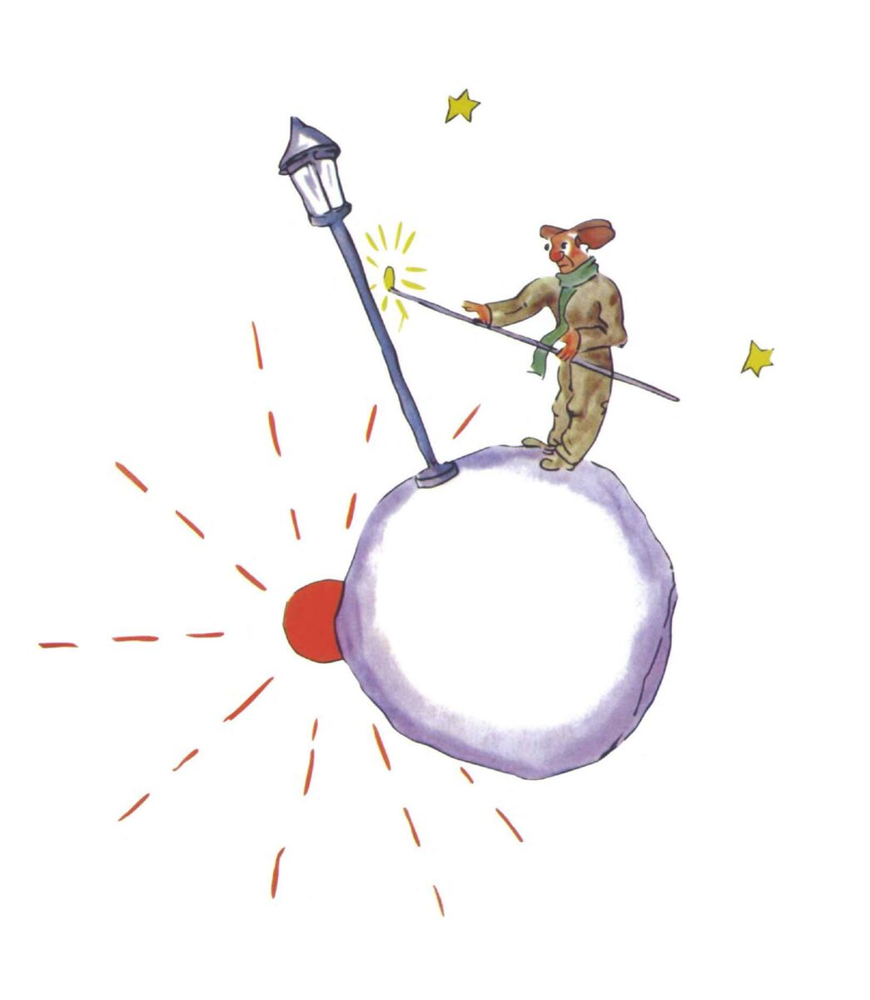
(14.5)— .i lo javni —sei lo cikygau cu spusku— .i ko cerni zanfri
– C’est la consigne, répondit l’allumeur. Bonjour.
“Those are the orders,” replied the lamplighter. “Good morning.”
(14.6)— .i ma se javni
– Qu’est-ce que la consigne ?
“What are the orders?”
(14.7)— .i lo nu [cadgau lo mi tergusni] .i ko vanci zanfri
– C’est d’éteindre mon réverbère. Bonsoir.
“The orders are that I put out my lamp. Good evening.”
(14.8)ni'o cy boi za'ure'u cikygau ty
Et il le ralluma.
And he lighted his lamp again.
(14.9)— .i ku'i ki'u ma do puzi za'ure'u cikygau ta
– Mais pourquoi viens-tu de le rallumer ?
“But why have you just lighted it again?”
(14.10)— .i lo javni —sei lo cikygau cu spusku
– C’est la consigne, répondit l’allumeur.
“Those are the orders,” replied the lamplighter.
(14.11)— .i mi na jimpe —sei lo cmalu noltru cu cusku
– Je ne comprends pas, dit le petit prince.
“I do not understand,” said the little prince.
(14.12)— .i .einai jimpe da —sei lo cikygau cu cusku— .i lo javni cu javni .i ko cerni zanfri
– Il n’y a rien à comprendre, dit l’allumeur. La consigne c’est la consigne. Bonjour.
“There is nothing to understand,” said the lamplighter. “Orders are orders. Good morning.”
(14.13)ni'o cy cadgau lo cy tergusni
Et il éteignit son réverbère.
And he put out his lamp.
(14.14)ni'o baku cy sudgau lo mebri sepi'o lo xunre kurfa boxfo
Puis il s’épongea le front avec un mouchoir à carreaux rouges.
Then he mopped his forehead with a handkerchief decorated with red squares.
(14.15)— .i mi gunka lo malnandu .i puzu racli .i mi pu cadgau ca lo cerni gi'e cikygau ca lo vanci .i mi surla ze'a lo donri velvi'u gi'e sipna ze'a lo nicte velvi'u
– Je fais là un métier terrible. C’était raisonnable autrefois. J’éteignais le matin et j’allumais le soir. J’avais le reste du jour pour me reposer, et le reste de la nuit pour dormir…
“I follow a terrible profession. In the old days it was reasonable. I put the lamp out in the morning, and in the evening I lighted it again. I had the rest of the day for relaxation and the rest of the night for sleep.”
(14.16)— .i xu ba la'e di'u lo javni ba'o cenba
– Et, depuis cette époque, la consigne a changé ?
“And the orders have been changed since that time?”
(14.17)— .i lo javni na cenba —sei lo cikygau cu cusku— .i la'e di'u sa'e nabmi .i lo plini ca'o lo nanca cu zenba lo ka [sutra fa lo nu {carna}] .ije lo javni na cenba
– La consigne n’a pas changé, dit l’allumeur. C’est bien là le drame ! La planète d’année en année a tourné de plus en plus vite, et la consigne n’a pas changé !
“The orders have not been changed,” said the lamplighter. “That is the tragedy! From year to year the planet has turned more rapidly and the orders have not been changed!”
(14.18)— .i ni'i mo —sei lo cmalu noltru cu cusku
– Alors ? dit le petit prince.
“Then what?” asked the little prince.
(14.19)— .i ni'iku caku py mulcarna paroi ro mentu .ije mi claxu lo nu [surla] poi [snidu be li pa ji'asai] .i mi cikygau gi'e cadgau paroi ro mentu
– Alors maintenant qu’elle fait un tour par minute, je n’ai plus une seconde de repos. J’allume et j’éteins une fois par minute !
“Then—the planet now makes a complete turn every minute, and I no longer have a single second for repose. Once every minute I have to light my lamp and put it out!”
(14.20)— .i .u'i lo djedi cu mentu bu'u lo medomoi
– Ça c’est drôle ! Les jours chez toi durent une minute !
“That is very funny! A day lasts only one minute, here where you live!”
(14.21)— .i .u'inaisai —sei lo cikygau cu cusku— .i mi'o ba'o tavla simxu ze'a lo masti
– Ce n’est pas drôle du tout, dit l’allumeur. Ça fait déjà un mois que nous parlons ensemble.
“It is not funny at all!” said the lamplighter. “While we have been talking together a month has gone by.”
(14.22)— .i xu lo masti
– Un mois ?
“A month?”
(14.23)— .i go'i .i lo mentu be li cino .i va'i lo djedi be li cino .i ko vanci zanfri
– Oui. Trente minutes. Trente jours ! Bonsoir.
“Yes, a month. Thirty minutes. Thirty days. Good evening.”
(14.24)ni'o cy boi za'ure'u cikygau lo cy tergusni
Et il ralluma son réverbère.
And he lighted his lamp again.
(14.25)ni'o lo cmalu noltru cu catlu gi'e nelci lo cikygau noi [tai bigysi'a lo javni] .i ny morji fi lo solri nu [canci] noi [ny pu ta'e sisku ta'i lo nu {bevri lo ny stizu}] .i ny djica lo nu [sidju lo ny pendo]
Le petit prince le regarda et il aima cet allumeur qui était tellement fidèle à la consigne. Il se souvint des couchers de soleil que lui-même allait autrefois chercher, en tirant sa chaise. Il voulut aider son ami :
As the little prince watched him, he felt that he loved this lamplighter who was so faithful to his orders. He remembered the sunsets which he himself had gone to seek, in other days, merely by pulling up his chair; and he wanted to help his friend.
(14.26)— .i .e'u .i mi se slabu lo tadji be lo nu [do surla ca lo nu {do djica}]
– Tu sais… je connais un moyen de te reposer quand tu voudras…
“You know,” he said, “I can tell you a way you can rest whenever you want to. . .”
(14.27)— .i mi roroi djica —sei lo cikygau cu cusku
– Je veux toujours, dit l’allumeur.
“I always want to rest,” said the lamplighter.
(14.28)ni'o je'u da ka'e bigysi'a je lazni
Car on peut être, à la fois, fidèle et paresseux.
For it is possible for a man to be faithful and lazy at the same time.
(14.29)ni'o lo cmalu noltru di'a cusku
Le petit prince poursuivit :
The little prince went on with his explanation:
(14.30)— .i lo do plini tai cmalu ja'e lo nu [do ka'e sruri py fau ci nu {stapa}] .i lo nu [do masno cadzu] cu banzu lo nu [do ze'e stali lo solri mlana] .i do ca lo nu [do djica lo nu {surla}] cu cadzu .i lo donri ba ranji lo do se djica
– Ta planète est tellement petite que tu en fais le tour en trois enjambées. Tu n’as qu’à marcher assez lentement pour rester toujours au soleil. Quand tu voudras te reposer tu marcheras… et le jour durera aussi longtemps que tu voudras.
“Your planet is so small that three strides will take you all the way around it. To be always in the sunshine, you need only walk along rather slowly. When you want to rest, you will walk—and the day will last as long as you like.”
(14.31)— .i prali mi la'e di'u fa na'ebo lo mutce —sei lo cikygau cu cusku— .i lo pukrai be mi cu nu [sipna]
– Ça ne m’avance pas à grand’chose, dit l’allumeur. Ce que j’aime dans la vie, c’est dormir.
“That doesn’t do me much good,” said the lamplighter. “The one thing I love in life is to sleep.”
(14.32)— .i na zanfunca —sei lo cmalu noltru cu cusku
– Ce n’est pas de chance, dit le petit prince.
“Then you’re unlucky,” said the little prince.
(14.33)— .i na zanfunca —sei lo cikygau cu cusku— .i ko cerni zanfri
– Ce n’est pas de chance, dit l’allumeur. Bonjour.
“I am unlucky,” said the lamplighter. “Good morning.”
(14.34)ni'o cy cadgau lo cy tergusni
Et il éteignit son réverbère.
And he put out his lamp.
(14.35)ni'o «lu tu —sei lo cmalu noltru fi vo'a ca lo nu [ca'o litru] cu cusku— tu so'emu'ei se tolsinma ro lo drata no'u lo nolraitru .e lo sezyjgidu'e .e lo pixydu'e .e lo cu'upre .i ku'i tu se steci lo ka [na simlu fi mi fe lo ka {se ckasu kakne}] .i ju'ocu'i la'e di'u se mukti lo nu [tu se cuntu tu'a lo na'e sevzi be vo'a] li'u»
« Celui-là, se dit le petit prince, tandis qu’il poursuivait plus loin son voyage, celui-là serait méprisé par tous les autres, par le roi, par le vaniteux, par le buveur, par le businessman. Cependant c’est le seul qui ne me paraisse pas ridicule. C’est, peut-être, parce qu’il s’occupe d’autre chose que de soi-même. »
“That man,” said the little prince to himself, as he continued farther on his journey, “that man would be scorned by all the others: by the king, by the conceited man, by the tippler, by the businessman. Nevertheless he is the only one of them all who does not seem to me ridiculous. Perhaps that is because he is thinking of something else besides himself.”
(14.36)ni'o ny cnivasxu gi'e di'a cusku di'e fi ny
Il eut un soupir de regret et se dit encore :
He breathed a sigh of regret, and said to himself, again:
(14.37)ni'o «lu tu se steci lo ka [mi ka'e pendo ce'u] .i ku'i lo tu plini cu dukse lo ka [cmalu] .i claxu lo canlu be lo remei li'u»
« Celui-là est le seul dont j’eusse pu faire mon ami. Mais sa planète est vraiment trop petite. Il n’y a pas de place pour deux… »
“That man is the only one of them all whom I could have made my friend. But his planet is indeed too small. There is no room on it for two people. . .”
(14.38)ni'o lo cmalu noltru na darsi lo nu [ny juncru ny lo du'u {ny xenru lo nu (pu cliva lo vi se zandimna plini) kei mu'i lo paki'ovovono solri nu (canci) pe ro cacra be li revo}]
Ce que le petit prince n’osait pas s’avouer, c’est qu’il regrettait cette planète bénie à cause, surtout, des mille quatre cent quarante couchers de soleil par vingt-quatre heures !
What the little prince did not dare confess was that he was sorry most of all to leave this planet, because it was blest every day with 1440 sunsets!
pamu mo'o15
(15.1)ni'o lo xamoi plini cu dekto fi lo ka [barda] .i py se xabju lo tolci'o nanmu poi [ciska fi lo bratce cukta]
La sixième planète était une planète dix fois plus vaste. Elle était habitée par un vieux Monsieur qui écrivait d’énormes livres.
The sixth planet was ten times larger than the last one. It was inhabited by an old gentleman who wrote voluminous books.
(15.2)— .i ua .a'e lo tumfakli'u —sei ny ca lo nu [co'a viska lo cmalu noltru] cu krixa cusku
– Tiens ! voilà un explorateur ! s’écria-t-il, quand il aperçut le petit prince.
“Oh, look! Here is an explorer!” he exclaimed to himself when he saw the little prince coming.
(15.3)ni'o lo cmalu noltru cu tsebi'o lo jubme gi'e milxe ke surla vasxu .i uo ny xa'o mutce litru
Le petit prince s’assit sur la table et souffla un peu. Il avait déjà tant voyagé !
The little prince sat down on the table and panted a little. He had already traveled so much and so far!
(15.4)— .i do klama fi ma —sei lo tolci'o nanmu cu cusku
– D’où viens-tu ? lui dit le vieux Monsieur.
“Where do you come from?” the old gentleman said to him.
(15.5)— .i lo rotsu cukta cu mo —sei lo cmalu noltru cu cusku— .i do vi zukte ma
– Quel est ce gros livre ? dit le petit prince. Que faites-vous ici ?
“What is that big book?” said the little prince. “What are you doing?”
(15.6)— .i mi tedyskepretedyskepre = terdi saske prenu —sei lo tolci'o nanmu cu cusku
– Je suis géographe, dit le vieux Monsieur.
“I am a geographer,” said the old gentleman.
(15.7)— .i lo tedyskepre cu mo
– Qu’est-ce qu’un géographe ?
“What is a geographer?” asked the little prince.
(15.8)— .i prije certu lo nu [djuno lo du'u {makau se stuzi lo xamsi .e lo rirxe .e lo tcadu .e lo cmana .e lo kutytu'a}]
– C’est un savant qui connaît où se trouvent les mers, les fleuves, les villes, les montagnes et les déserts.
“A geographer is a scholar who knows the location of all the seas, rivers, towns, mountains, and deserts.”
(15.9)— .i mutce cinri —sei lo cmalu noltru cu cusku— .i ui uo lo fatci se jibri
– Ça c’est bien intéressant, dit le petit prince. Ça c’est enfin un véritable métier ! Et il jeta un coup d’œil autour de lui sur la planète du géographe. Il n’avait jamais vu encore une planète aussi majestueuse.
“That is very interesting,” said the little prince. “Here at last is a man who has a real profession!” And he cast a look around him at the planet of the geographer. It was the most magnificent and stately planet that he had ever seen.
(15.10)ni'o ny sruri catlu lo plini pe lo tedyskepre .i ny pu noroi viska lo tai banli plini
– Ça c’est bien intéressant, dit le petit prince. Ça c’est enfin un véritable métier ! Et il jeta un coup d’œil autour de lui sur la planète du géographe. Il n’avait jamais vu encore une planète aussi majestueuse.
“That is very interesting,” said the little prince. “Here at last is a man who has a real profession!” And he cast a look around him at the planet of the geographer. It was the most magnificent and stately planet that he had ever seen.
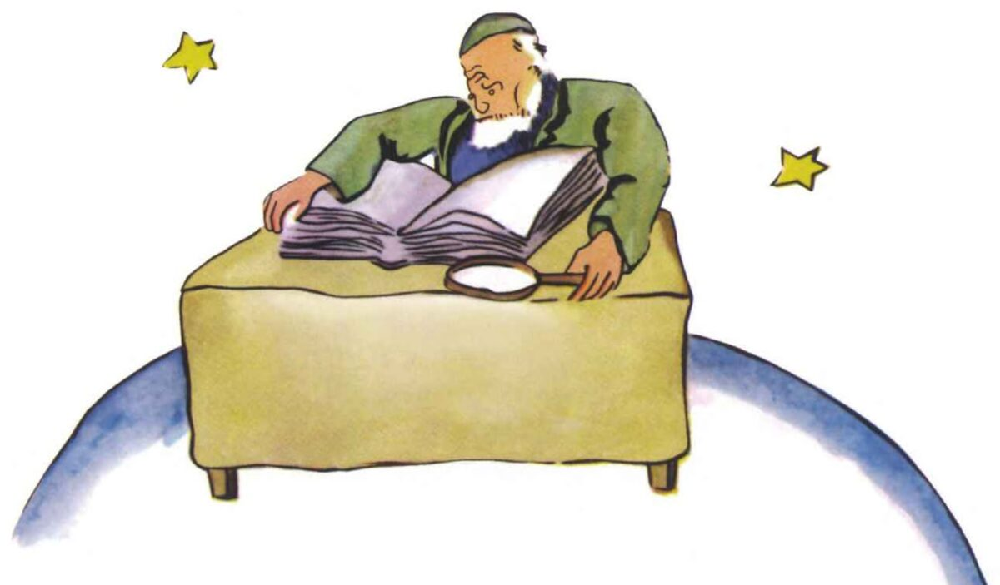
(15.11)— .i lo do plini cu melbi mutce .i xu da xamsi py
– Elle est bien belle, votre planète. Est-ce qu’il y a des océans ?
“Your planet is very beautiful,” he said. “Has it any oceans?”
(15.12)— .i mi na ka'e djuno —sei lo tedyskepre cu cusku
– Je ne puis pas le savoir, dit le géographe.
“I couldn’t tell you,” said the geographer.
(15.13)— .i ua —sei lo cmalu noltru cu tolmanci— .i xu cmana py
– Ah ! (Le petit prince était déçu.) Et des montagnes ?
“Ah!” The little prince was disappointed. “Has it any mountains?”
(15.14)— .i mi na ka'e djuno —sei lo tedyskepre cu cusku
– Je ne puis pas le savoir, dit le géographe.
“I couldn’t tell you,” said the geographer.
(15.15)— .i xu tcadu .i xu rirxe .i xu kutytu'a
– Et des villes et des fleuves et des déserts ?
“And towns, and rivers, and deserts?”
(15.16)— .i ji'a mi na ka'e djuno —sei lo tedyskepre cu cusku
– Je ne puis pas le savoir non plus, dit le géographe.
“I couldn’t tell you that, either.”
(15.17)— .i ue ku'i do tedyskepre
– Mais vous êtes géographe !
“But you are a geographer!”
(15.18)— .i satci —sei lo tedyskepre cu cusku— .i ku'i mi na tumfakli'u .i mi ja'asai claxu lo tumfakli'u .i lo tedyskepre na vi je vu kancu lo tcadu .e lo rirxe .e lo cmana .e lo xamsi .e lo kutytu'a .i lo tedyskepre cu dukse lo ka [vajni] kei lo nu [xalbo litru] .i ty na cliva lo ty briju .i ku'i by te vitke ty lo tumfakli'u .i lo tedyskepre cu te preti fo lo tumfakli'u gi'e rejgau fi lo ri se morji .i va'o lo nu [lo se morji be pa lo tumfakli'u cu simlu lo ka {cinri}] zo'u lo tedyskepre cu gasnu lo nu [da lanli lo marde be lo tumfakli'u]
– C’est exact, dit le géographe, mais je ne suis pas explorateur. Je manque absolument d’explorateurs. Ce n’est pas le géographe qui va faire le compte des villes, des fleuves, des montagnes, des mers, des océans et des déserts. Le géographe est trop important pour flâner. Il ne quitte pas son bureau. Mais il y reçoit les explorateurs. Il les interroge, et il prend en note leurs souvenirs. Et si les souvenirs de l’un d’entre eux lui paraissent intéressants, le géographe fait faire une enquête sur la moralité de l’explorateur.
“Exactly,” the geographer said. “But I am not an explorer. I haven’t a single explorer on my planet. It is not the geographer who goes out to count the towns, the rivers, the mountains, the seas, the oceans, and the deserts. The geographer is much too important to go loafing about. He does not leave his desk. But he receives the explorers in his study. He asks them questions, and he notes down what they recall of their travels. And if the recollections of any one among them seem interesting to him, the geographer orders an inquiry into that explorer’s moral character.”
(15.19)— .i ma krinu la'e di'u
– Pourquoi ça ?
“Why is that?”
(15.20)— .iki'ubo lo tumfakli'u poi [jitfa cusku] cu betri lo tedyske .i ji'a go'i fa lo tumfakli'u poi [pixydu'e]
– Parce qu’un explorateur qui mentirait entraînerait des catastrophes dans les livres de géographie. Et aussi un explorateur qui boirait trop.
“Because an explorer who told lies would bring disaster on the books of the geographer. So would an explorer who drank too much.”
(15.21)— .i ma krinu la'e di'u —sei lo cmalu noltru cu cusku
– Pourquoi ça ? fit le petit prince.
“Why is that?” asked the little prince.
(15.22)— .iki'ubo lo pixydu'e cu remei viska .iseki'ubo lo tedyskepre cu rejgau fo lo cmana remei seba'i lo cmana pamei
– Parce que les ivrognes voient double. Alors le géographe noterait deux montagnes, là où il n’y en a qu’une seule.
“Because intoxicated men see double. Then the geographer would note down two mountains in a place where there was only one.”
(15.23)— .i mi se slabu da —sei lo cmalu noltru cu cusku— poi da'i [mabla lo ka {tumfakli'u}]
– Je connais quelqu’un, dit le petit prince, qui serait mauvais explorateur.
“I know some one,” said the little prince, “who would make a bad explorer.”
(15.24)— .i la'e di'u cumki .i no'i va'o lo nu [lo marde be lo tumfakli'u cu simlu lo ka {xamgu}] zo'u da lanli lo se tumfakli'u be ty
– C’est possible. Donc, quand la moralité de l’explorateur paraît bonne, on fait une enquête sur sa découverte.
“That is possible. Then, when the moral character of the explorer is shown to be good, an inquiry is ordered into his discovery.”
(15.25)— .i xu da klama tezu'e lo nu [viska]
– On va voir ?
“One goes to see it?”
(15.26)— .i na go'i .i pluja dukse .i ku'i da ca'icpeca'icpe = catni cpedu fi lo tumfakli'u lo nu [ty dunda lo ve jinvi] .i mu'a va'o lo nu [srana lo barda cmana] zo'u da ca'icpe lo nu [bevri lo barda rokci da]
– Non. C’est trop compliqué. Mais on exige de l’explorateur qu’il fournisse des preuves. S’il s’agit par exemple de la découverte d’une grosse montagne, on exige qu’il en rapporte de grosses pierres.
“No. That would be too complicated. But one requires the explorer to furnish proofs. For example, if the discovery in question is that of a large mountain, one requires that large stones be brought back from it.”
(15.27)ni'o lo tedyskepre cu suksa cinmo
Le géographe soudain s’émut.
The geographer was suddenly stirred to excitement.
(15.28)— .i ku'i do klama fi lo darno .i do tumfakli'u .i do ba skicu lo do plini mi
– Mais toi, tu viens de loin ! Tu es explorateur ! Tu vas me décrire ta planète !
“But you—you come from far away! You are an explorer! You shall describe your planet to me!”
(15.29)ni'o lo tedyskepre ca lo nu [ba'o kargau lo ty reicku] cu kilgau lo ty pinsi .i pamai da ciska lo nuzba be fi lo tumfakli'u fo lo pinsi .i da denpa lo nu [lo tumfakli'u cu dunda lo ve jinvi] kei fo lo nu [xinmo ciska]
Et le géographe, ayant ouvert son registre, tailla son crayon. On note d’abord au crayon les récits des explorateurs. On attend, pour noter à l’encre, que l’explorateur ait fourni des preuves.
And, having opened his big register, the geographer sharpened his pencil. The recitals of explorers are put down first in pencil. One waits until the explorer has furnished proofs, before putting them down in ink.
(15.30)— .i re'i —sei lo tedyskepre cu cusku
– Alors ? interrogea le géographe.
“Well?” said the geographer expectantly.
(15.31)— .i .a'e bu'u lo mi zdani —sei lo cmalu noltru cu cusku— na cinri mutce .ibo roda cu cmalu .i mi ponse ci je'erma'a .i go'i re cikna je'erma'a .e pa cando je'erma'a .i ku'i da noroi djuno
– Oh ! chez moi, dit le petit prince, ce n’est pas très intéressant, c’est tout petit. J’ai trois volcans. Deux volcans en activité, et un volcan éteint. Mais on ne sait jamais.
“Oh, where I live,” said the little prince, “it is not very interesting. It is all so small. I have three volcanoes. Two volcanoes are active and the other is extinct. But one never knows.”
(15.32)— .i da noroi djuno —sei lo tedyskepre cu cusku
– On ne sait jamais, dit le géographe.
“One never knows,” said the geographer.
(15.33)— .i mi ponse lo xrula ku ji'a
– J’ai aussi une fleur.
“I have also a flower.”
(15.34)— .i mi'a na rejgau fo lo xrula —sei lo tedyskepre cu cusku
– Nous ne notons pas les fleurs, dit le géographe.
“We do not record flowers,” said the geographer.
(15.35)— .i ma krinu .i xy traji lo ka [melbi]
– Pourquoi ça ! c’est le plus joli !
“Why is that? The flower is the most beautiful thing on my planet!”
(15.36)— .i krinu fa lo nu [lo xrula cu zasni]
– Parce que les fleurs sont éphémères.
“We do not record them,” said the geographer, “because they are ephemeral.”
(15.37)— .i ma smuni zo zasni
– Qu’est-ce que signifie : « éphémère » ?
“What does that mean—’ephemeral’?”
(15.38)— .i lo tedyskeckutedyskecku = terdi saske cukta —sei lo tedyskepre cu cusku— cu traji lo ka [makau vamji ce'u] kei fo lo ro cukta .i ty cu noroi purci datni binxo .i rirci mutce fa lo nu [lo cmana cu cenba lo ka {stuzi}] .i rirci mutce fa lo nu [lo xamsi cu toltisna lo xy djacu] .i mi'a ciska lo srana be lo vitno
– Les géographies, dit le géographe, sont les livres les plus précieux de tous les livres. Elles ne se démodent jamais. Il est très rare qu’une montagne change de place. Il est très rare qu’un océan se vide de son eau. Nous écrivons des choses éternelles.
“Geographies,” said the geographer, “are the books which, of all books, are most concerned with matters of consequence. They never become old-fashioned. It is very rarely that a mountain changes its position. It is very rarely that an ocean empties itself of its waters. We write of eternal things.”
(15.39)— .i ku'i lo cando je'erma'a ka'e cikna binxo —sei lo cmalu noltru cu dicra— .i ma smuni zo zasni
– Mais les volcans éteints peuvent se réveiller, interrompit le petit prince. Qu’est-ce que signifie « éphémère » ?
“But extinct volcanoes may come to life again,” the little prince interrupted. “What does that mean— ’ephemeral’?”
(15.40)— .i lo du'u [lo je'erma'a cu cando gi'ikau cikna] cu na vajni mi'a —sei lo tedyskepre cu cusku— .i vajni mi'a fa lo cmana .i cy na cenba
– Que les volcans soient éteints ou soient éveillés, ça revient au même pour nous autres, dit le géographe. Ce qui compte pour nous, c’est la montagne. Elle ne change pas.
“Whether volcanoes are extinct or alive, it comes to the same thing for us,” said the geographer. “The thing that matters to us is the mountain. It does not change.”
(15.41)— .i ku'i ma smuni zo zasni —sei lo cmalu noltru noi [noroi lo nu {jmive} cu sisti tu'a lo preti ca lo nu {ba'o cusku py}] cu za'ure'u cusku
– Mais qu’est-ce que signifie « éphémère » ? répéta le petit prince qui, de sa vie, n’avait renoncé à une question, une fois qu’il l’avait posée.
“But what does that mean—’ephemeral’?” repeated the little prince, who never in his life had let go of a question, once he had asked it.
(15.42)— .i smuni fa lo du'u [da se ckape lo nu {da zi canci}]
– Ça signifie « qui est menacé de disparition prochaine ».
“It means, ’which is in danger of speedy disappearance.’”
(15.43)— .i xu lo mi xrula cu se ckape lo nu [xy zi canci]
– Ma fleur est menacée de disparition prochaine ?
“Is my flower in danger of speedy disappearance?”
(15.44)— .i li'a go'i
– Bien sûr.
“Certainly it is.”
(15.45)ni'o «lu lo mi xrula cu zasni —sei lo cmalu noltru fi ny cu cusku— .ije xy ponse vo kinli po'o tepi'o lo nu [bandu xy lo munje] .ije mi cliva xy ja'e lo nu [xy nonkansa bu'u lo mi zdani] li'u»
Ma fleur est éphémère, se dit le petit prince, et elle n’a que quatre épines pour se défendre contre le monde ! Et je l’ai laissée toute seule chez moi !
“My flower is ephemeral,” the little prince said to himself, “and she has only four thorns to defend herself against the world. And I have left her on my planet, all alone!”
(15.46)ni'o la'e di'u pamoi lo nu [ny xenru cinmo] .i ku'i ny cu za'ure'u virnu binxo
Ce fut là son premier mouvement de regret. Mais il reprit courage :
That was his first moment of regret. But he took courage once more.
(15.47)— .i do stidi lo nu [mi vitke fi ma] kei mi —sei ny preti cusku
– Que me conseillez-vous d’aller visiter ? demanda-t-il.
“What place would you advise me to visit now?” he asked.
(15.48)— .i lo plini po'u la .terd. —sei lo tedyskepre cu spuda— .i ty zabna misno
– La planète Terre, lui répondit le géographe. Elle a une bonne réputation…
“The planet Earth,” replied the geographer. “It has a good reputation.”
(15.49)ni'o lo cmalu noltru cu cliva fau lo nu [senva lo ny xrula]
Et le petit prince s’en fut, songeant à sa fleur.
And the little prince went away, thinking of his flower
paxa mo'o16
(16.1)ni'o lo zemoi plini cu du la .terd.
La septième planète fut donc la Terre.
So then the seventh planet was the Earth.
(16.2)ni'o la .terd. na fadni fi lo plini .i ty vasru papapa nolraitru (to li'a na tolmorji fi lo xekri nolraitru toi) .e ze ki'o tedyskepre .e sonono ki'o cu'upre .e ze ki'o munono ki'o pixydu'e .e cipapa ki'o ki'o sezyjgidu'e .i va'i vasru ji'i re ki'o ki'o ki'o makcu prenu
La Terre n’est pas une planète quelconque ! On y compte cent onze rois (en n’oubliant pas, bien sûr, les rois nègres), sept mille géographes, neuf cent mille businessmen, sept millions et demi d’ivrognes, trois cent onze millions de vaniteux, c’est-à-dire environ deux milliards de grandes personnes.
The Earth is not just an ordinary planet! One can count, there, 111 kings (not forgetting, to be sure, the Negro kings among them), 7000 geographers, 900,000 businessmen, 7,500,000 tipplers, 311,000,000 conceited men—that is to say, about 2,000,000,000 grown-ups.
(16.3)ni'o tezu'e lo nu [dunda lo sidbo be lo du'u {la .terd. cu barda sela'u makau}] cu cusku fa mi lo sedu'u [pu lo nu {lo dikca cu se finti} cu sarcu ve'a lo xa bratumla fa lo se sonci be voxare ki'o mupapa tergu'i cikygau]
Pour vous donner une idée des dimensions de la Terre je vous dirai qu’avant l’invention de l’électricité on y devait entretenir, sur l’ensemble des six continents, une véritable armée de quatre cent soixante-deux mille cinq cent onze allumeurs de réverbères.
To give you an idea of the size of the Earth, I will tell you that before the invention of electricity it was necessary to maintain, over the whole of the six continents, a veritable army of 462,511 lamplighters for the street lamps.
(16.4)ni'o ri'a la'e di'u lo banli cu jvinu fi lo darno .i lo nu [muvdu] pe lo se sonci cu se javni tai tu'a lo me lo dansu bende moi .i pamoi fa lo tergu'i cikygau pe lo nuzlo joi lo sralo .i ba bo cy ca lo nu [ba'o cikygau lo cy tergu'i] cu sipna .i babo nerkla ca lo vo'a krefu lo nu [dansu] kei fa lo tergu'i cikygau pe lo jungo joi lo gugdrsiberi .i ba bo cy ji'a canci ti'a lo murta .i ba bo za'umoi fa lo tergu'i cikygau pe lo rusko joi lo xindo .i ba bo lo me lo friko joi lo ropno moi .i ba bo lo me lo ketco moi .i ba bo lo me lo bemro moi .i noroi lo cikygau pu srera lo nu [porsi nerkla lo tsina] .i pu banli
Vu d’un peu loin ça faisait un effet splendide. Les mouvements de cette armée étaient réglés comme ceux d’un ballet d’opéra. D’abord venait le tour des allumeurs de réverbères de Nouvelle-Zélande et d’Australie. Puis ceux-ci, ayant allumé leurs lampions, s’en allaient dormir. Alors entraient à leur tour dans la danse les allumeurs de réverbères de Chine et de Sibérie. Puis eux aussi s’escamotaient dans les coulisses. Alors venait le tour des allumeurs de réverbères de Russie et des Indes. Puis de ceux d’Afrique et d’Europe. Puis de ceux d’Amérique du Sud. Puis de ceux d’Amérique du Nord. Et jamais ils ne se trompaient dans leur ordre d’entrée en scène. C’était grandiose.
Seen from a slight distance, that would make a splendid spectacle. The movements of this army would be regulated like those of the ballet in the opera. First would come the turn of the lamplighters of New Zealand and Australia. Having set their lamps alight, these would go off to sleep. Next, the lamplighters of China and Siberia would enter for their steps in the dance, and then they too would be waved back into the wings. After that would come the turn of the lamplighters of Russia and the Indies; then those of Africa and Europe; then those of South America; then those of South America; then those of North America. And never would they make a mistake in the order of their entry upon the stage. It would be magnificent.
(16.5)ni'o ge po'o lo cikygau be lo pa tergu'i pe lo berti jedjipno gi po'o lo cy kansa pe lo pa tergu'i pe lo snanu jedjipno cu lifri lo nu [cando je surla jmive] .i lo remei cu gunka reroi ro nanca
Seuls, l’allumeur de l’unique réverbère du pôle Nord, et son confrère de l’unique réverbère du pôle Sud, menaient des vies d’oisiveté et de nonchalance : ils travaillaient deux fois par an.
Only the man who was in charge of the single lamp at the North Pole, and his colleague who was responsible for the single lamp at the South Pole—only these two would live free from toil and care: they would be busy twice a year.
paze mo'o17
(17.1)ni'o lo nu [djica lo nu {zdile}] cu ta'e se jalge lo nu [milxe jifsku] .i mi na pu mutce lo ka [stace do lo nu {mi do tavla lo cikygau}] .i ckape fa lo nu [mi sibgau lo jitfa lo mi'o terdi lo na se slabu be ty] .i lo ro remna cu se canlu lo cmalu pe lo terdi sefta .i lo reki'oki'oki'o xabju be la .terd. va'o lo nu [sanli gi'e milxe tagji tai tu'a lo nunjmaji] cu frili mapti lo gubni panka poi [clani minli li reno gi'e ganra minli li reno] .i lo rolremymei ka'e se vasru lo cmarai daplu be fi la .pasifik.
Quand on veut faire de l’esprit, il arrive que l’on mente un peu. Je n’ai pas été très honnête en vous parlant des allumeurs de réverbères. Je risque de donner une fausse idée de notre planète à ceux qui ne la connaissent pas. Les hommes occupent très peu de place sur la terre. Si les deux milliards d’habitants qui peuplent la terre se tenaient debout et un peu serrés, comme pour un meeting, ils logeraient aisément sur une place publique de vingt milles de long sur vingt milles de large. On pourrait entasser l’humanité sur le moindre petit îlot du Pacifique.
When one wishes to play the wit, he sometimes wanders a little from the truth. I have not been altogether honest in what I have told you about the lamplighters. And I realize that I run the risk of giving a false idea of our planet to those who do not know it. Men occupy a very small place upon the Earth. If the two billion inhabitants who people its surface were all to stand upright and somewhat crowded together, as they do for some big public assembly, they could easily be put into one public square twenty miles long and twenty miles wide. All humanity could be piled up on a small Pacific islet.
(17.2)ni'o li'a lo makcu prenu na krici la'e di'u .i py se xanri lo nu [mutce canlu] .i py jinvi lo du'u [py vajni tai tu'a lo tricrbaubau] .i .e'u do stidi lo du'u [py kanji] .i py neltce lo namcu .i la'e di'u pluka py .i ku'i ko na malpli lo do temci lo nu [tai pensi] .i na prali .i do lacri mi
Les grandes personnes, bien sûr, ne vous croiront pas. Elles s’imaginent tenir beaucoup de place. Elles se voient importantes comme des baobabs. Vous leur conseillerez donc de faire le calcul. Elles adorent les chiffres : ça leur plaira. Mais ne perdez pas votre temps à ce pensum. C’est inutile. Vous avez confiance en moi.
The grown-ups, to be sure, will not believe you when you tell them that. They imagine that they fill a great deal of space. They fancy themselves as important as the baobabs. You should advise them, then, to make their own calculations. They adore figures, and that will please them. But do not waste your time on this extra task. It is unnecessary. You have, I know, confidence in me.
(17.3)ni'o lo cmalu noltru ca lo nu [ba'o tolcliva lo terdi] cu mutce se spaji lo nu [viska no prenu] .i ny co'a terpa lo nu [srera tu'a lo plini] kei ca lo nu [lo lunra skari djine cu desku bu'u lo canre]
Le petit prince, une fois sur terre, fut donc bien surpris de ne voir personne. Il avait déjà peur de s’être trompé de planète, quand un anneau couleur de lune remua dans le sable.
When the little prince arrived on the Earth, he was very much surprised not to see any people. He was beginning to be afraid he had come to the wrong planet, when a coil of gold, the color of the moonlight, flashed across the sand.
(17.4)— .i coi do'u —sei lo cmalu noltru cu cusku
– Bonne nuit, fit le petit prince à tout hasard.
“Good evening,” said the little prince courteously.
(17.5)— .i coi do'u —sei lo since cu cusku
– Bonne nuit, fit le serpent.
“Good evening,” said the snake.
(17.6)— .i mi lo plini po'u ma ba'o farlu —sei lo cmalu noltru cu retsku
– Sur quelle planète suis-je tombé ? demanda le petit prince.
“What planet is this on which I have come down?” asked the little prince.
(17.7)— .i la .terd. di'o lo friko —sei lo since cu spusku
– Sur la Terre, en Afrique, répondit le serpent.
“This is the Earth; this is Africa,” the snake answered.
(17.8)— .i ua ja'o no prenu cu zvati la .terd.
– Ah !… Il n’y a donc personne sur la Terre ?
“Ah! Then there are no people on the Earth?”
(17.9)— .i ti kutytu'a .i no prenu cu zvati lo kutytu'a .i la .terd. cu barda —sei lo since cu cusku
– Ici c’est le désert. Il n’y a personne dans les déserts. La Terre est grande, dit le serpent.
“This is the desert. There are no people in the desert. The Earth is large,” said the snake.
(17.10)ni'o lo cmalu noltru cu tsebi'o lo rokci gi'e selfargau lo kanla lo tsani
Le petit prince s’assit sur une pierre et leva les yeux vers le ciel :
The little prince sat down on a stone, and raised his eyes toward the sky.
(17.11)— .i mi retsku fi mi —sei ny cusku— fe lo sedu'u xukau [lo tarci cu se cikygau mu'i lo nu {roda ka'e tolcri lo medamoi ca lo djedi}] .i ko catlu lo mi plini .i tu mi'o satci gapru .i ku'i .oi tu darno
– Je me demande, dit-il, si les étoiles sont éclairées afin que chacun puisse un jour retrouver la sienne. Regarde ma planète. Elle est juste au-dessus de nous… Mais comme elle est loin !
“I wonder,” he said, “whether the stars are set alight in heaven so that one day each one of us may find his own again . . . Look at my planet. It is right there above us. But how far away it is!”
(17.12)— .i tu melbi —sei lo since cu cusku— .i do vi zukte fi ma
– Elle est belle, dit le serpent. Que viens-tu faire ici ?
“It is beautiful,” the snake said. “What has brought you here?”
(17.13)— .i mi se nabmi tu'a lo xrula —sei lo cmalu noltru cu cusku
– J’ai des difficultés avec une fleur, dit le petit prince.
“I have been having some trouble with a flower,” said the little prince.
(17.14)— .i ua —sei lo since cu cusku
– Ah ! fit le serpent.
“Ah!” said the snake.
(17.15)ni'o lo remei cu smaji
Et ils se turent.
And they were both silent.
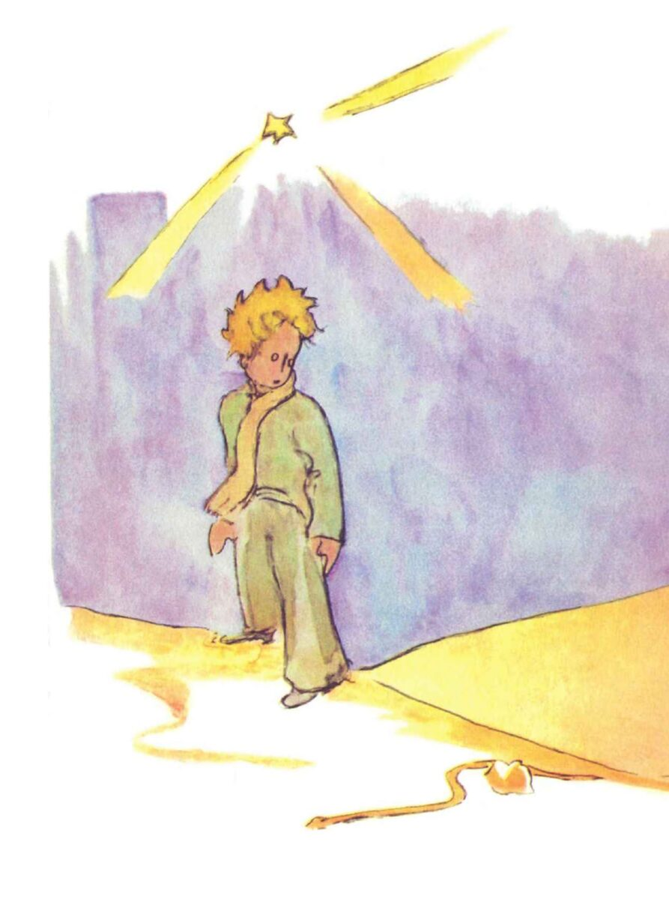
(17.16)— .i lo remna cu zvati ma —sei lo cmalu noltru di'a cusku— .i da bu'u lo kutytu'a cu milxe lo ka [nonkansa]
– Où sont les hommes ? reprit enfin le petit prince. On est un peu seul dans le désert…
“Where are the men?” the little prince at last took up the conversation again. “It is a little lonely in the desert . . .”
(17.17)— .i da nonkansa ne'a lo remna ji'a —sei lo since cu cusku
– On est seul aussi chez les hommes, dit le serpent.
Le petit prince le regarda longtemps :
“It is also lonely among men,” the snake said.
The little prince gazed at him for a long time.
(17.18)— .i do zdile danlu —sei ny cusku— .i do cinla tai tu'a lo degji
– Tu es une drôle de bête, lui dit-il enfin, mince comme un doigt…
“You are a funny animal,” he said at last. “You are no thicker than a finger . . .”
(17.19)— .i ku'i mi vlimau lo degji be lo nolraitru —sei lo since cu cusku
– Mais je suis plus puissant que le doigt d’un roi, dit le serpent.
“But I am more powerful than the finger of a king,” said the snake.
(17.20)ni'o lo cmalu noltru cu cisma
Le petit prince eut un sourire :
The little prince smiled.
(17.21)— .i do na mutce vlipa .i do na se tuple ji'asai .i do na ka'e litru ji'asai
– Tu n’es pas bien puissant… tu n’as même pas de pattes… tu ne peux même pas voyager…
“You are not very powerful. You haven’t even any feet. You cannot even travel . . .”
(17.22)— .i mi zmadu lo bloti lo ni [ka'e bevri do lo darno —sei lo since cu cusku]
– Je puis t’emporter plus loin qu’un navire, dit le serpent.
“I can carry you farther than any ship could take you,” said the snake.
(17.23)ni'o sy srubi'o lo tupne'otupne'o = tuple cnebo be lo noltru tai tu'a lo solji djine
Il s’enroula autour de la cheville du petit prince, comme un bracelet d’or :
He twined himself around the little prince’s ankle, like a golden bracelet.
(17.24)— .i lo se pencu be mi zo'u mi benji py lo dertu poi [krasi py —sei sy za'o cusku—] .i ku'i do curve gi'e klama fi lo tarci
– Celui que je touche, je le rends à la terre dont il est sorti, dit-il encore. Mais tu es pur et tu viens d’une étoile…
“Whomever I touch, I send back to the earth from whence he came,” the snake spoke again. “But you are innocent and true, and you come from a star . . .”
(17.25)ni'o lo cmalu noltru spuda noda
Le petit prince ne répondit rien.
The little prince made no reply.
(17.26)— .i mi do kecti .i do tai ralci bu'u lo vi rokci terdi .i mi kakne lo nu [sidju du ca lo nu {do dukse claxu lo do terdi}] .i mi kakne .y
– Tu me fais pitié, toi si faible, sur cette Terre de granit. Je puis t’aider un jour si tu regrettes trop ta planète. Je puis…
“You move me to pity—you are so weak on this Earth made of granite,” the snake said. “I can help you, some day, if you grow too homesick for your own planet. I can—”
(17.27)— .i je'edo'u mi mulno jimpe —sei lo cmalu noltru cu cusku— .i ku'i ki'u ma do ta'e tavla sepi'o lo nabmi
– Oh ! J’ai très bien compris, fit le petit prince, mais pourquoi parles-tu toujours par énigmes ?
“Oh! I understand you very well,” said the little prince. “But why do you always speak in riddles?”
(17.28)— .i mi dafsabji ro boi ny —sei lo since cu cusku
– Je les résous toutes, dit le serpent.
“I solve them all,” said the snake.
(17.29)ni'o lo remei cu smabi'o
Et ils se turent.
And they were both silent.
pabi mo'o18
(18.1)ni'o lo cmalu noltru cu greli'ugreli'u = pagre litru lo kutytu'a gi'e penmi lo xrula po'o .i lo xrula noi [se pezli cida] .i lo xrula noi [tolvai]
Le petit prince traversa le désert et ne rencontra qu’une fleur. Une fleur à trois pétales, une fleur de rien du tout…
The little prince crossed the desert and met with only one flower. It was a flower with three petals, a flower of no account at all.
(18.2)— .i coi do'u —sei lo noltru cu cusku
– Bonjour, dit le petit prince.
“Good morning,” said the little prince.
(18.3)— .i coi do'u —sei lo xrula cu cusku
– Bonjour, dit la fleur.
“Good morning,” said the flower.
(18.4)— .i lo remna ma zvati —sei lo cmalu noltru cu clite retsku
– Où sont les hommes ? demanda poliment le petit prince.
“Where are the men?” the little prince asked, politely.
(18.5)ni'o lo xrula pu paroi viska lo nu [lo karvana zo'a klama]
La fleur, un jour, avait vu passer une caravane :
The flower had once seen a caravan passing.
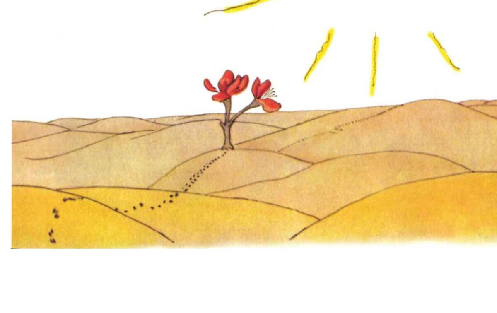
(18.6)— .i lo remna xu .i zasti fa ji'i ze boi ry .i mi ry pu ganse za lo nanca be li so'o .i ku'i da noroi djuno lo du'u [ry zvati makau] .i lo brife ry muvgau .i ry claxu lo genja .i la'e di'u ry mutce fanza
– Les hommes ? Il en existe, je crois, six ou sept. Je les ai aperçus il y a des années. Mais on ne sait jamais où les trouver. Le vent les promène. Ils manquent de racines, ça les gêne beaucoup.
“Men?” she echoed. “I think there are six or seven of them in existence. I saw them, several years ago. But one never knows where to find them. The wind blows them away. They have no roots, and that makes their life very difficult.”
(18.7)— .i co'o do'u —sei lo cmalu noltru cu cusku
– Adieu, fit le petit prince.
“Goodbye,” said the little prince.
(18.8)— .i co'o do'u —sei lo xrula cu cusku
– Adieu, dit la fleur.
“Goodbye,” said the flower.
paso mo'o19
(19.1)ni'o lo cmalu noltru cu cpare lo galtu cmana .i lo po'o cmana poi [ze'e pu slabu ny] cu me lo ci je'erma'a noi [galtu dunli lo ny cidni] .i ny pilno lo cando je'erma'a lo nu [zutse] .i «lu mi to'o lo cmana poi [galtu tai ti —sei ny sezysku—] cu ka'e viska piro lo terdi .e ro remna li'u» .i ku'i ny viska no na'e bo lo mutce kinli ke rokci jesni
Le petit prince fit l’ascension d’une haute montagne. Les seules montagnes qu’il eût jamais connues étaient les trois volcans qui lui arrivaient au genou. Et il se servait du volcan éteint comme d’un tabouret. « D’une montagne haute comme celle-ci, se dit-il donc, j’apercevrai d’un coup toute la planète et tous les hommes… » Mais il n’aperçut rien que des aiguilles de roc bien aiguisées.
After that, the little prince climbed a high mountain. The only mountains he had ever known were the three volcanoes, which came up to his knees. And he used the extinct volcano as a footstool. “From a mountain as high as this one,” he said to himself, “I shall be able to see the whole planet at one glance, and all the people . . .”
But he saw nothing, save peaks of rock that were sharpened like needles.
(19.2)— .i coi do'u —sei ny cipra cusku
– Bonjour, dit-il à tout hasard.
“Good morning,” he said courteously.
(19.3)— .i coi do'u coi do'u coi do'u —sei lo snaminra cu spuda
– Bonjour… Bonjour… Bonjour… répondit l’écho.
“Good morning—Good morning—Good morning,” answered the echo.
(19.4)— .i do mo —sei lo cmalu noltru cu cusku
– Qui êtes-vous ? dit le petit prince.
“Who are you?” said the little prince.
(19.5)— .i do mo .i do mo .i do mo —sei lo snaminra cu spuda
– Qui êtes-vous… qui êtes-vous… qui êtes-vous… répondit l’écho.
“Who are you—Who are you—Who are you?” answered the echo.
(19.6)— .i .e'o ko mi pendo .i mi nonkansa —sei ny cusku
– Soyez mes amis, je suis seul, dit-il.
“Be my friends. I am all alone,” he said.
(19.7)— .i mi nonkansa .i mi nonkansa .i mi nonkansa — sei lo snaminra cu spuda
– Je suis seul… je suis seul… je suis seul… répondit l’écho.
“I am all alone—all alone—all alone,” answered the echo.
(19.8)ni'o «lu cizra terdi —sei ny pensi— .i ty sudga gi'e kinli gi'e silna .i lo remna na se xanri .i ri ke'usku lo se cusku be da .i bu'u lo memimoi mi ponse lo xrula .i xy cu roroi pamoi cusku li'u»
« Quelle drôle de planète ! pensa-t-il alors. Elle est toute sèche, et toute pointue et toute salée. Et les hommes manquent d’imagination. Ils répètent ce qu’on leur dit… Chez moi j’avais une fleur : elle parlait toujours la première… »
“What a queer planet!” he thought. “It is altogether dry, and altogether pointed, and altogether harsh and forbidding. And the people have no imagination. They repeat whatever one says to them . . . On my planet I had a flower; she always was the first to speak . . .”
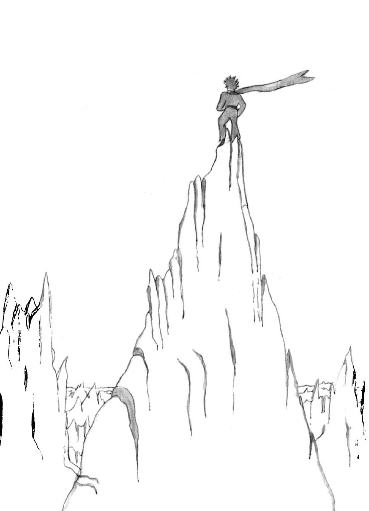
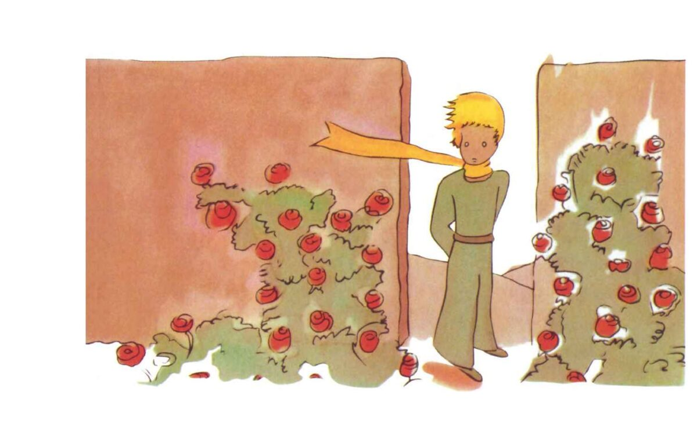
reno mo'o20
(20.1)ni'o lo cmalu noltru ba lo nu [ze'u litru lo canre .e lo rokci .e lo snime] cu facki lo dargu uo .i ro dargu cu dargu lo remna
Mais il arriva que le petit prince, ayant longtemps marché à travers les sables, les rocs et les neiges, découvrit enfin une route. Et les routes vont toutes chez les hommes.
But it happened that after walking for a long time through sand, and rocks, and snow, the little prince at last came upon a road. And all roads lead to the abodes of men.
(20.2)— .i coi do'u —sei ny cusku
– Bonjour, dit-il.
“Good morning,” he said.
(20.3)ni'o ta xrula purdi fi lo preja pezli rozgu
C’était un jardin fleuri de roses.
He was standing before a garden, all a-bloom with roses.
(20.4)— .i coi do'u —sei lei rozgu cu cusku
– Bonjour, dirent les roses.
“Good morning,” said the roses.
(20.5)ni'o lo cmalu noltru ry catlu .i ro boi ry simsa lo ny xrula
Le petit prince les regarda. Elles ressemblaient toutes à sa fleur.
The little prince gazed at them. They all looked like his flower.
(20.6)— .i do mo —sei ny noi [mutce spaji] cu retsku be fi ry
– Qui êtes-vous ? leur demanda-t-il, stupéfait.
“Who are you?” he demanded, thunderstruck.
(20.7)— .i mi rozgu —sei lei rozgu cu spusku
– Nous sommes des roses, dirent les roses.
“We are roses,” the roses said.
(20.8)— .i ua —sei lo cmalu noltru cu cusku
– Ah ! fit le petit prince…
(20.9)ni'o ny mutce badri .i lo ny rozgu pu cusku lo du'u [ry cu ropamei lo rozgu ve'e lo munje] .i ue ti se zvati muki'o rozgu noi [simsa] ku'o bu'u pa po'o purdi
Et il se sentit très malheureux. Sa fleur lui avait raconté qu’elle était seule de son espèce dans l’univers. Et voici qu’il en était cinq mille, toutes semblables, dans un seul jardin !
And he was overcome with sadness. His flower had told him that she was the only one of her kind in all the universe. And here were five thousand of them, all alike, in one single garden!
(20.10)ni'o «lu ry ba mutce se fanza va'o lo nu da'i [ry viska tu] .i ry ba mutce kafke gi'e simlu lo ka [pu'o mrobi'o] kei tezu'e lo nu [rivbi lo nu {se ckasu}] .i mi ba bilga lo nu [simlu lo ka {kurji}] .iki'ubo va'o lo drata ry tezu'e lo nu [culgau mi ji'a] cu ba curmi lo nu [ry ca'a mrobi'o] li'u»
« Elle serait bien vexée, se dit-il, si elle voyait ça… elle tousserait énormément et ferait semblant de mourir pour échapper au ridicule. Et je serais bien obligé de faire semblant de la soigner, car, sinon, pour m’humilier moi aussi, elle se laisserait vraiment mourir… »
“She would be very much annoyed,” he said to himself, “if she should see that . . . She would cough most dreadfully, and she would pretend that she was dying, to avoid being laughed at. And I should be obliged to pretend that I was nursing her back to life—for if I did not do that, to humble myself also, she would really allow herself to die. . .”
(20.11)ni'o ny za'o sezysku «lu mi pu krici lo du'u [mi ricfu lo ropamei xrula] .i ku'i mi ponse lo po'o fadni rozgu .i go'i ri .e lo ci je'erma'a noi [galtu dunli lo mi cidni] zi'e noi ju'ocu'i [pa ke'a ze'e ba cando] .i va'o la'e di'u mi na banli noltru li'u» .i ny fau lo nu [vreta lo srasu] cu klaku
Puis il se dit encore : « Je me croyais riche d’une fleur unique, et je ne possède qu’une rose ordinaire. Ça et mes trois volcans qui m’arrivent au genou, et dont l’un, peut-être, est éteint pour toujours, ça ne fait pas de moi un bien grand prince… » Et, couché dans l’herbe, il pleura.
Then he went on with his reflections: “I thought that I was rich, with a flower that was unique in all the world; and all I had was a common rose. A common rose, and three volcanoes that come up to my knees—and one of them perhaps extinct forever . . . That doesn’t make me a very great prince . . .”
And he lay down in the grass and cried.
repa mo'o21
(21.1)ni'o caku tolcanci fa lo lorxu
C’est alors qu’apparut le renard.
It was then that the fox appeared.
(21.2)— .i coi do'u —sei lo lorxu cu cusku
– Bonjour, dit le renard.
“Good morning,” said the fox.
(21.3)— .i coi do'u —sei lo cmalu noltru noi [carna gi'e ku'i viska no da] cu clite spuda
– Bonjour, répondit poliment le petit prince, qui se retourna mais ne vit rien.
“Good morning,” the little prince responded politely, although when he turned around he saw nothing.
(21.4)— .i mi vi zvati —sei lo voksa cu cusku— .i cnita lo plisytricu
– Je suis là, dit la voix, sous le pommier.
“I am right here,” the voice said, “under the apple tree.”
(21.5)— .i do mo —sei lo cmalu noltru cu cusku— .i do mutce melbi
– Qui es-tu ? dit le petit prince. Tu es bien joli…
“Who are you?” asked the little prince, and added, “You are very pretty to look at.”
(21.6)— .i mi lorxu —sei lo lorxu cu cusku
– Je suis un renard, dit le renard.
“I am a fox,” the fox said.
(21.7)— .i ko mi kansa lo nu [kelci —sei lo cmalu noltru cu stidi—] .i mi tai badri
– Viens jouer avec moi, lui proposa le petit prince. Je suis tellement triste…
“Come and play with me,” proposed the little prince. “I am so unhappy.”
(21.8)— .i mi do ka'enai kansa lo nu [kelci —sei lo lorxu cu cusku—] .i mi na ba'o se tolcicygau
– Je ne puis pas jouer avec toi, dit le renard. Je ne suis pas apprivoisé.
“I cannot play with you,” the fox said. “I am not tamed.”
(21.9)— .i ua .u'u —sei lo cmalu noltru cu cusku
– Ah ! pardon, fit le petit prince.
“Ah! Please excuse me,” said the little prince.
(21.10)ni'o ku'i ny ba lo nu [pensi] cu jmina cusku di'e
Mais, après réflexion, il ajouta :
But, after some thought, he added:
(21.11)— .i ma smuni zo tolcicygau
– Qu’est-ce que signifie « apprivoiser » ?
“What does that mean—’tame’?”
(21.12)— .i do na vi xabju —sei lo lorxu cu cusku— .i do ma sisku
– Tu n’es pas d’ici, dit le renard, que cherches-tu ?
“You do not live here,” said the fox. “What is it that you are looking for?”
(21.13)— .i mi sisku lo remna —sei lo cmalu noltru cu cusku— .i ma smuni zo tolcicygau
– Je cherche les hommes, dit le petit prince. Qu’est-ce que signifie « apprivoiser » ?
“I am looking for men,” said the little prince. “What does that mean—’tame’?”
(21.14)— .i lo remna —sei lo lorxu cu cusku— cu ponse lo celxarci gi'e kalte .i mutce fanza .i ry ba'orgau lo jipci .i la'e di'u po'o ry cinri .i xu do sisku lo jipci
– Les hommes, dit le renard, ils ont des fusils et ils chassent. C’est bien gênant ! Ils élèvent aussi des poules. C’est leur seul intérêt. Tu cherches des poules ?
“Men,” said the fox. “They have guns, and they hunt. It is very disturbing. They also raise chickens. These are their only interests. Are you looking for chickens?”
(21.15)— .i na go'i —sei lo cmalu noltru cu cusku— .i mi sisku lo pendo .i ma smuni zo tolcicygau
– Non, dit le petit prince. Je cherche des amis. Qu’est-ce que signifie « apprivoiser » ?
“No,” said the little prince. “I am looking for friends. What does that mean—’tame’?”
(21.16)— .i go'i fa lo mutce se tolmorji —sei lo lorxu cu cusku— .i smuni fa lo du'u [zbasu lo te jorne]
– C’est une chose trop oubliée, dit le renard. Ça signifie « créer des liens… »
“It is an act too often neglected,” said the fox. “It means to establish ties.”
(21.17)— .i «lu zbasu lo te jorne li'u» xu
– Créer des liens ?
“’To establish ties’?”
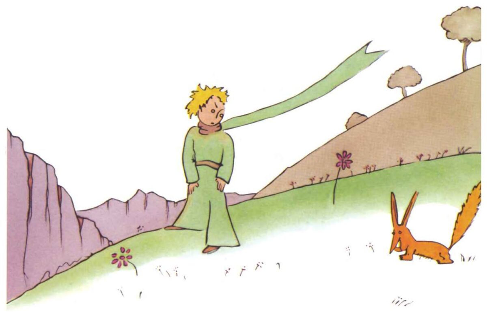
(21.18)— .i li'a —sei lo lorxu cu cusku— .i do ga'a mi za'o cmalu nanla po'o gi'e simsa panonoki'o cmalu nanla .i mi do na nitcu .i ji'a do mi na nitcu .i mi ga'a do lorxu po'o gi'e simsa panonoki'o lorxu .i ku'i mi'o va'o lo nu da'i [do mi tolcicygau] cu ba simxu lo ka [nitcu] .i do ba se steci ma'i mi fi lo munje zvati .i mi ba se steci ma'i do fi lo munje zvati
– Bien sûr, dit le renard. Tu n’es encore pour moi qu’un petit garçon tout semblable à cent mille petits garçons. Et je n’ai pas besoin de toi. Et tu n’as pas besoin de moi non plus. Je ne suis pour toi qu’un renard semblable à cent mille renards. Mais, si tu m’apprivoises, nous aurons besoin l’un de l’autre. Tu seras pour moi unique au monde. Je serai pour toi unique au monde…
“Just that,” said the fox. “To me, you are still nothing more than a little boy who is just like a hundred thousand other little boys. And I have no need of you. And you, on your part, have no need of me. To you, I am nothing more than a fox like a hundred thousand other foxes. But if you tame me, then we shall need each other. To me, you will be unique in all the world. To you, I shall be unique in all the world . . .”
(21.19)— .i mi co'a jimpe —sei lo cmalu noltru cu cusku— .i lo xrula zo'u pe'i xy mi pu ba'o tolcicygau
– Je commence à comprendre, dit le petit prince. Il y a une fleur… je crois qu’elle m’a apprivoisé…
“I am beginning to understand,” said the little prince. “There is a flower . . . I think that she has tamed me . . .”
(21.20)— .i cumki —sei lo lorxu cu cusku— .i la .terd. cu jai bu'u viska lo mutce vrici
– C’est possible, dit le renard. On voit sur la Terre toutes sortes de choses…
“It is possible,” said the fox. “On the Earth one sees all sorts of things.”
(21.21)— .i ue na go'e bu'u la .terd. —sei lo cmalu noltru cu cusku
– Oh ! ce n’est pas sur la Terre, dit le petit prince.
“Oh, but this is not on the Earth!” said the little prince.
(21.22)ni'o lo lorxu cu simlu lo ka [kucli]
Le renard parut très intrigué :
The fox seemed perplexed, and very curious.
(21.23)— .i xu bu'u lo drata terdi
– Sur une autre planète ?
“On another planet?”
(21.24)— .i go'i
– Oui.
“Yes.”
(21.25)— .i xu lo kalte cu zvati lo bi'u nai terdi
– Il y a des chasseurs, sur cette planète-là ?
“Are there hunters on that planet?”
(21.26)— .i na go'i
– Non.
“No.”
(21.27)— .i ua .a'u .i xu lo jipci
– Ça, c’est intéressant ! Et des poules ?
“Ah, that is interesting! Are there chickens?”
(21.28)— .i na go'i
– Non.
“No.”
(21.29)— .i no da prane —sei lo lorxu cu dricmo
– Rien n’est parfait, soupira le renard.
“Nothing is perfect,” sighed the fox.
(21.30)ni'o ku'i lo lorxu cu xruti lo ri sidbo
Mais le renard revint à son idée :
But he came back to his idea.
(21.31)— .i lo mi nunjmive cu stodi .i mi kalte lo jipci .i lo remna mi kalte .i lo ro jipci cu simsa simxu .i lo ro remna cu simsa simxu .ija'ebo mi milxe se tolzdi .i ku'i lo mi nunjmive va'o lo nu da'i [do mi tolcicygau] cu ba solri se gusni simlu .i mi ba se slabu lo sance be lo nu [stapa] be'o poi [frica ro drata] .i lo drata nu [stapa] cu ba rinka lo nu [mi nitkla lo tumloi] .i lo medomoi cu ba rinka lo nu [mi barkla lo kevzda tai tu'a lo zgike] .i ji'a ko catlu .i xu do viska lo vu maxri foldi .i mi na citka lo nanba .i lo maxri mi nonselpli .i lo maxri foldi mi noda morjygau .i la'e di'u se badri .i ku'i do se kerfa lo se skari be lo solji .i seki'ubo ba manci ca lo nu [do mi ba'o tolcicygau] .i lo maxri noi [se skari lo solji] cu ba gasnu lo nu [mi do pensi] .i mi ba prami lo sance be lo brife be bu'u lo maxri
– Ma vie est monotone. Je chasse les poules, les hommes me chassent. Toutes les poules se ressemblent, et tous les hommes se ressemblent. Je m’ennuie donc un peu. Mais, si tu m’apprivoises, ma vie sera comme ensoleillée. Je connaîtrai un bruit de pas qui sera différent de tous les autres. Les autres pas me font rentrer sous terre. Le tien m’appellera hors du terrier, comme une musique. Et puis regarde ! Tu vois, là-bas, les champs de blé ? Je ne mange pas de pain. Le blé pour moi est inutile. Les champs de blé ne me rappellent rien. Et ça, c’est triste ! Mais tu as des cheveux couleur d’or. Alors ce sera merveilleux quand tu m’auras apprivoisé ! Le blé, qui est doré, me fera souvenir de toi. Et j’aimerai le bruit du vent dans le blé…
“My life is very monotonous,” the fox said. “I hunt chickens; men hunt me. All the chickens are just alike, and all the men are just alike. And, in consequence, I am a little bored. But if you tame me, it will be as if the sun came to shine on my life. I shall know the sound of a step that will be different from all the others. Other steps send me hurrying back underneath the ground. Yours will call me, like music, out of my burrow. And then look: you see the grain-fields down yonder? I do not eat bread. Wheat is of no use to me. The wheat fields have nothing to say to me. And that is sad. But you have hair that is the color of gold. Think how wonderful that will be when you have tamed me! The grain, which is also golden, will bring me back the thought of you. And I shall love to listen to the wind in the wheat . . .”
(21.32)ni'o lo lorxu cu smabi'o gi'e ze'u catlu lo cmalu noltru
Le renard se tut et regarda longtemps le petit prince :
The fox gazed at the little prince, for a long time.
(21.33)— .i .e'o ko mi tolcicygau —sei ly cusku
– S’il te plaît… apprivoise-moi ! dit-il.
“Please—tame me!” he said.
(21.34)— .i .au go'i —sei lo cmalu noltru cu spusku— .i ku'i mi na ponse lo mutce temci .i .ei mi facki za'u pendo gi'e co'a se slabu so'i da
– Je veux bien, répondit le petit prince, mais je n’ai pas beaucoup de temps. J’ai des amis à découvrir et beaucoup de choses à connaître.
“I want to, very much,” the little prince replied. “But I have not much time. I have friends to discover, and a great many things to understand.”
(21.35)— .i da se slabu no na'ebo lo se tolcicygau be vo'a —sei lo lorxu cu cusku— .i lo remna na za'o ponse lo temci pe lo nu [co'a se slabu da] .i ry te vecnu lo mo'u se zbasu .i mu'igi [na zasti fa lo vecnu be lo nu {da pendo}] gi [lo remna na za'o se pendo] .i ganai [do djica lo pendo] gi .e'e [ko mi tolcicygau]
– On ne connaît que les choses que l’on apprivoise, dit le renard. Les hommes n’ont plus le temps de rien connaître. Ils achètent des choses toutes faites chez les marchands. Mais comme il n’existe point de marchands d’amis, les hommes n’ont plus d’amis. Si tu veux un ami, apprivoise-moi !
“One only understands the things that one tames,” said the fox. “Men have no more time to understand anything. They buy things all ready made at the shops. But there is no shop anywhere where one can buy friendship, and so men have no friends any more. If you want a friend, tame me . . .”
(21.36)— .i .ei mi zukte ma —sei lo cmalu noltru cu cusku
– Que faut-il faire ? dit le petit prince.
“What must I do, to tame you?” asked the little prince.
(21.37)— .i .ei denpa vrude —sei lo lorxu cu spuda— .i pamai do zutse lo srasu ki mi vu ru'e .i mi do catlu ra'i lo kojna be lo kanla .i do noda cusku .i lo bangu cu krasi lo nu [jmisre] .i ku'i ca ro djedi do ka'e zutse za lo milxe mleca
– Il faut être très patient, répondit le renard. Tu t’assoiras d’abord un peu loin de moi, comme ça, dans l’herbe. Je te regarderai du coin de l’œil et tu ne diras rien. Le langage est source de malentendus. Mais, chaque jour, tu pourras t’asseoir un peu plus près…
“You must be very patient,” replied the fox. “First you will sit down at a little distance from me—like that—in the grass. I shall look at you out of the corner of my eye, and you will say nothing. Words are the source of misunderstandings. But you will sit a little closer to me, every day . . .”
(21.38)ni'o ca lo bavlamdei lo cmalu noltru cu xruti
Le lendemain revint le petit prince.
The next day the little prince came back.
(21.39)— .i xagmau fa lo nu [xruti ti'u lo mintu —sei lo lorxu cu cusku—] .i va'ogi [do tolcliva ti'u mu'a li paxa] gi [ti'u li pamu mi co'a gleki] .i pa'a gi [zenba lo ka {makau tcika}] gi [mi zenba lo ni {gleki}] .i ti'u li paxa mi xa'o tolsurla je dunku .i mi facki lo du'u [makau jdima lo nu {gleki}] .i ku'i va'ogi [do tolcliva ti'u lo cunso] gi [mi noroi djuno lo du'u .ei {ti'u makau mi dasygau lo risna}] .i lo ritli cu sarcu
– Il eût mieux valu revenir à la même heure, dit le renard. Si tu viens, par exemple, à quatre heures de l’après-midi, dès trois heures je commencerai d’être heureux. Plus l’heure avancera, plus je me sentirai heureux. À quatre heures, déjà, je m’agiterai et m’inquiéterai ; je découvrirai le prix du bonheur ! Mais si tu viens n’importe quand, je ne saurai jamais à quelle heure m’habiller le cœur… Il faut des rites.
“It would have been better to come back at the same hour,” said the fox. “If, for example, you come at four o’clock in the afternoon, then at three o’clock I shall begin to be happy. I shall feel happier and happier as the hour advances. At four o’clock, I shall already be worrying and jumping about. I shall show you how happy I am! But if you come at just any time, I shall never know at what hour my heart is to be ready to greet you . . . One must observe the proper rites . . .”
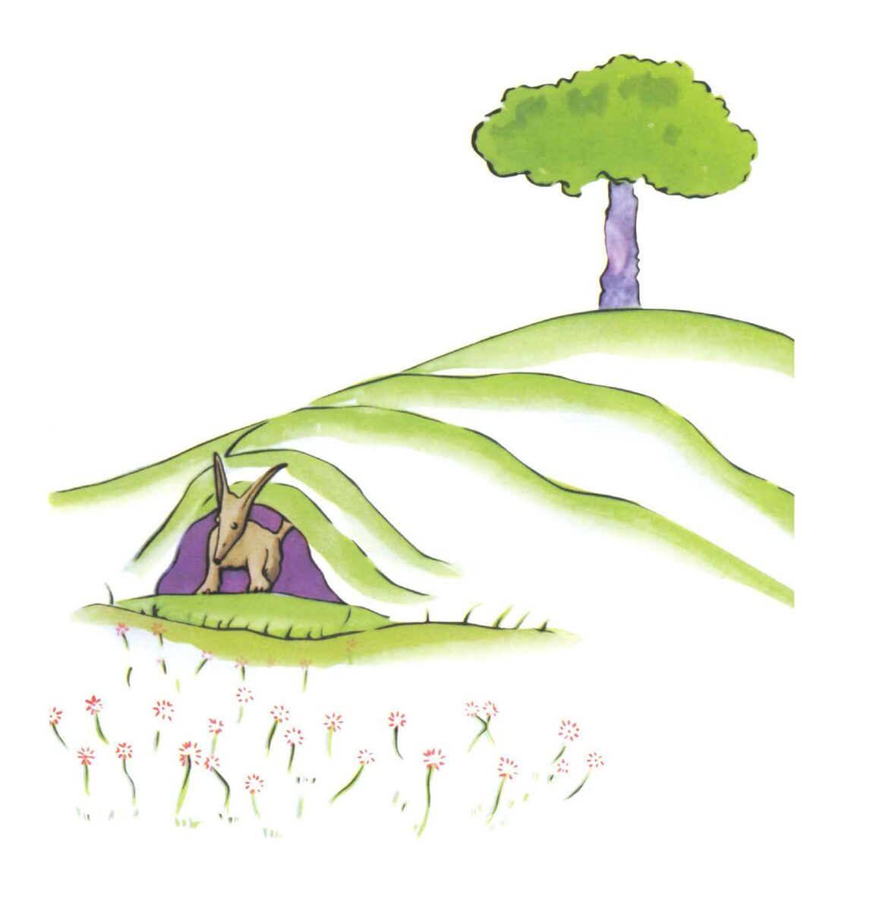
(21.40)— .i lo ritli ki'a —sei lo cmalu noltru cu cusku
– Qu’est-ce qu’un rite ? dit le petit prince.
“What is a rite?” asked the little prince.
(21.41)— .i ry ji'a dukse lo ka [se tolmorji —sei lo lorxu cu cusku—] .i ry rinka lo nu [lo djedi cu frica lo drata djedi] .i co'e lo cacra lo drata cacra .i mu'a ritli fi lo mi kalte lo nu [dansu ca lo vondei fi'o kansa lo nixli pe lo tcadu] .isemu'ibo lo vondei cu se manci djedi .i mi litru fe'eco'u lo vanjbafoi .i va'ogi da'i [lo kalte ta'e dansu ca lo cunso] gi [ge {lo djedi cu simsa simxu} gi {mi noroi zifre}]
– C’est aussi quelque chose de trop oublié, dit le renard. C’est ce qui fait qu’un jour est différent des autres jours, une heure, des autres heures. Il y a un rite, par exemple, chez mes chasseurs. Ils dansent le jeudi avec les filles du village. Alors le jeudi est jour merveilleux ! Je vais me promener jusqu’à la vigne. Si les chasseurs dansaient n’importe quand, les jours se ressembleraient tous, et je n’aurais point de vacances.
“Those also are actions too often neglected,” said the fox. “They are what make one day different from other days, one hour from other hours. There is a rite, for example, among my hunters. Every Thursday they dance with the village girls. So Thursday is a wonderful day for me! I can take a walk as far as the vineyards. But if the hunters danced at just any time, every day would be like every other day, and I should never have any vacation at all.”
(21.42)ni'o tai la'e de'u lo cmalu noltru cu tolcicygau lo lorxu .i lo jai ca cliva cu jibni
Ainsi le petit prince apprivoisa le renard. Et quand l’heure du départ fut proche :
So the little prince tamed the fox. And when the hour of his departure drew near—
(21.43)— .i uinai —sei lo lorxu cu cusku— .i mi ba klaku
– Ah ! dit le renard… Je pleurerai.
“Ah,” said the fox, “I shall cry.”
(21.44)— .i do fuzme —sei lo cmalu noltru cu cusku— .i mi na pu djica lo nu [do se xlali] .i ku'i do pu djica lo nu [mi do tolcicygau]
– C’est ta faute, dit le petit prince, je ne te souhaitais point de mal, mais tu as voulu que je t’apprivoise…
“It is your own fault,” said the little prince. “I never wished you any sort of harm; but you wanted me to tame you . . .”
(21.45)— .i li'a —sei lo lorxu cu cusku
– Bien sûr, dit le renard.
“Yes, that is so,” said the fox.
(21.46)— .i ku'i ue do ba klaku —sei lo cmalu noltru cu cusku
– Mais tu vas pleurer ! dit le petit prince.
“But now you are going to cry!” said the little prince.
(21.47)— .i li'a —sei lo lorxu cu cusku
– Bien sûr, dit le renard.
“Yes, that is so,” said the fox.
(21.48)— .i ju'o noda do prali
– Alors tu n’y gagnes rien !
“Then it has done you no good at all!”
(21.49)— .i mi se prali —sei lo lorxu cu cusku— mu'i tu'a lo skari be lo maxri
– J’y gagne, dit le renard, à cause de la couleur du blé.
“It has done me good,” said the fox, “because of the color of the wheat fields.” And then he added:
(21.50)ni'o baku ly jmina cusku
Puis il ajouta :
“It has done me good,” said the fox, “because of the color of the wheat fields.” And then he added:
(21.51)— .i ko klama gi'e rere'u catlu lei rozgu .i do ba jimpe lo du'u [lo medomoi cu pamei bu'u lo munje] .ibabo do xruti tezu'e lo nu [tolrinsa mi] .i mi ba dunda lo mipri do
– Va revoir les roses. Tu comprendras que la tienne est unique au monde. Tu reviendras me dire adieu, et je te ferai cadeau d’un secret.
“Go and look again at the roses. You will understand now that yours is unique in all the world. Then come back to say goodbye to me, and I will make you a present of a secret.”
(21.52)ni'o lo cmalu noltru cu klama gi'e rere'u catlu lei rozgu
Le petit prince s’en fut revoir les roses.
The little prince went away, to look again at the roses.
(21.53)— .i do nasai simsa lo mi rozgu .i do za'o menoda .i no prenu do ba'o tolcicygau .ije do no prenu ba'o tolcicygau .i do ca ckaji tai lo nu [lo mi lorxu pu ckaji] .i ly pu na zmadu lo lorxu poi [simsa panonoki'o drata] .i ku'i mi ly mi pendygau .i ly pamei bu'u lo munje
– Vous n’êtes pas du tout semblables à ma rose, vous n’êtes rien encore, leur dit-il. Personne ne vous a apprivoisées et vous n’avez apprivoisé personne. Vous êtes comme était mon renard. Ce n’était qu’un renard semblable à cent mille autres. Mais j’en ai fait mon ami, et il est maintenant unique au monde.
“You are not at all like my rose,” he said. “As yet you are nothing. No one has tamed you, and you have tamed no one. You are like my fox when I first knew him. He was only a fox like a hundred thousand other foxes. But I have made him my friend, and now he is unique in all the world.”
(21.54)ni'o lei rozgu cu se fanza
Et les roses étaient bien gênées.
And the roses were very much embarassed.
(21.55)— .i do melbi .i ku'i do kunti —sei ny za'o cusku— .i lo prenu na morsi seva'u do .i .i'a lo mi rozgu zo'u lo da'i fadni ke pagre klama cu jinvi lo du'u [ry do simsa] .i ku'i ry po'o zmadu ro do lo ka [vajni] .iki'ubo ba'e ry zo'u mi ry jaursabji .iki'ubo ba'e ry zo'u mi ry punji lo cnita be lo blacygai .iki'ubo ba'e ry zo'u mi ry bandu sepi'o lo bifmarbi .iki'ubo ba'e ry zo'u mi catra lo ciftoldi (to na'e catra lo reji'ici da poi [ba binxo lo toldi] toi) .iki'ubo ba'e ry zo'u mi tirna lo nu [ry pante gi'e sezyzarsku gi'e ji'asai su'oroi smaji] .iki'ubo ry memimoi lo rozgu
– Vous êtes belles, mais vous êtes vides, leur dit-il encore. On ne peut pas mourir pour vous. Bien sûr, ma rose à moi, un passant ordinaire croirait qu’elle vous ressemble. Mais à elle seule elle est plus importante que vous toutes, puisque c’est elle que j’ai arrosée. Puisque c’est elle que j’ai mise sous globe. Puisque c’est elle que j’ai abritée par le paravent. Puisque c’est elle dont j’ai tué les chenilles (sauf les deux ou trois pour les papillons). Puisque c’est elle que j’ai écoutée se plaindre, ou se vanter, ou même quelquefois se taire. Puisque c’est ma rose.
“You are beautiful, but you are empty,” he went on. “One could not die for you. To be sure, an ordinary passerby would think that my rose looked just like you—the rose that belongs to me. But in herself alone she is more important than all the hundreds of you other roses: because it is she that I have watered; because it is she that I have put under the glass globe; because it is she that I have sheltered behind the screen; because it is for her that I have killed the caterpillars (except the two or three that we saved to become butterflies); because it is she that I have listened to, when she grumbled, or boasted, or ever sometimes when she said nothing. Because she is my rose.
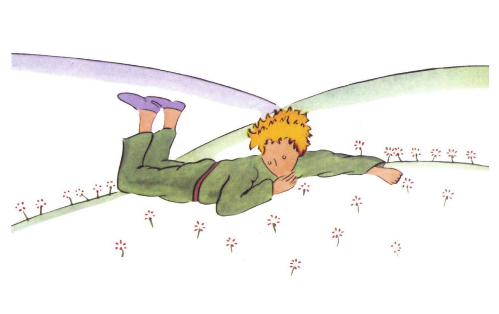
(21.56)ni'o ny xruti lo lorxu
Et il revint vers le renard :
And he went back to meet the fox.
(21.57)— .i co'o —sei ny cusku
– Adieu, dit-il…
“Goodbye,” he said.
(21.58)— .i co'o —sei lo lorxu cu cusku— .i mi di'e mipri .i di'e sampu .i da xamgu ganse fi no na'ebo lo risna .i lo vajrai cu nonselji'u lo kanla
– Adieu, dit le renard. Voici mon secret. Il est très simple : on ne voit bien qu’avec le cœur. L’essentiel est invisible pour les yeux.
“Goodbye,” said the fox. “And now here is my secret, a very simple secret: It is only with the heart that one can see rightly; what is essential is invisible to the eye.”
(21.59)— .i lo vajrai cu nonselji'u lo kanla —sei lo cmalu noltru tezu'e lo nu [morji] cu fuksku
– L’essentiel est invisible pour les yeux, répéta le petit prince, afin de se souvenir.
“What is essential is invisible to the eye,” the little prince repeated, so that he would be sure to remember.
(21.60)— .i lo temci poi [do pu xaksu seva'u lo do rozgu] cu rinka lo nu [lo do rozgu cu tai vajni]
– C’est le temps que tu as perdu pour ta rose qui fait ta rose si importante.
“It is the time you have wasted for your rose that makes your rose so important.”
(21.61)— .i lo temci poi [mi pu xaksu seva'u lo mi rozgu —sei lo cmalu noltru tezu'e lo nu {morji} cu co'e]
– C’est le temps que j’ai perdu pour ma rose… fit le petit prince, afin de se souvenir.
“It is the time I have wasted for my rose—” said the little prince, so that he would be sure to remember.
(21.62)— .i lo remna na za'o morji lo di'u jetnu —sei lo lorxu cu cusku— .i ku'i .ei do na tolmorji .i do co'a ze'eba fuzme roda poi [do ba'o tolcicygau] .i do fuzme lo do rozgu
– Les hommes ont oublié cette vérité, dit le renard. Mais tu ne dois pas l’oublier. Tu deviens responsable pour toujours de ce que tu as apprivoisé. Tu es responsable de ta rose…
“Men have forgotten this truth,” said the fox. “But you must not forget it. You become responsible, forever, for what you have tamed. You are responsible for your rose . . .”
(21.63)— .i mi fuzme lo mi rozgu —sei lo cmalu noltru tezu'e lo nu [morji] cu fuksku
– Je suis responsable de ma rose… répéta le petit prince, afin de se souvenir.
“I am responsible for my rose,” the little prince repeated, so that he would be sure to remember.
rere mo'o22
(22.1)— .i coi do'u—sei lo cmalu noltru cu cusku
– Bonjour, dit le petit prince.
“Good morning,” said the little prince.
(22.2)— .i coi do'u—sei lo gartrogartro = garna jitro cu cusku
– Bonjour, dit l’aiguilleur.
“Good morning”, said the railway switchman.
(22.3)— .i do bu'u zukte ma —sei lo cmalu noltru cu cusku
– Que fais-tu ici ? dit le petit prince.
“What do you do here?” the little prince asked.
(22.4)— .i mi ganzu lo litru lo ki'omei —sei lo gartro cu cusku— .i mi benji lo trene poi [marce ly] ku'o ga lo pritu gi lo zunle
– Je trie les voyageurs, par paquets de mille, dit l’aiguilleur. J’expédie les trains qui les emportent, tantôt vers la droite, tantôt vers la gauche.
“I sort out travelers, in bundles of a thousand” , said the switchman. “I send off the trains that carry them: now to the right, now to the left.”
(22.5)ni'o lo selgu'i sutre'e noi [cmoni tai lo lindi] cu rinka lo nu [lo troku'atroku'a = jitro kumfa cu desku]
Et un rapide illuminé, grondant comme le tonnerre, fit trembler la cabine d’aiguillage.
And a brilliantly lighted express train shook the switchman’s cabin as it rushed by with a roar like thunder.
(22.6)— .i tu sutydji —sei lo cmalu noltru cu cusku— .i tu ma sisku
– Ils sont bien pressés, dit le petit prince. Que cherchent-ils ?
“They are in a great hurry,” said the little prince. “What are they looking for?”
(22.7)— .i lo nanmu pe lo ve trene zo'u ny ji'asai na djuno —sei lo gartro cu cusku
– L’homme de la locomotive l’ignore lui-même, dit l’aiguilleur.
“Not even the locomotive engineer knows that,” said the switchman.
(22.8)ni'o cmoni klama fa'a lo dukti fa lo remoi ke selgu'i sutre'e
Et gronda, en sens inverse, un second rapide illuminé.
And a second brilliantly lighted express thundered by, in the opposite direction.
(22.9)— .i xu tu xa'o xruti —sei lo cmalu noltru cu retsku
– Ils reviennent déjà ? demanda le petit prince…
“Are they coming back already?” demanded the little prince.
(22.10)— .i tu na mintu —sei lo gartro cu cusku— .i nu [canja]
– Ce ne sont pas les mêmes, dit l’aiguilleur. C’est un échange.
“These are not the same ones,” said the switchman. “It is an exchange.”
(22.11)— .i xu tu na gleki bu'u lo pu se zvati be tu
– Ils n’étaient pas contents, là où ils étaient ?
“Were they not satisfied where they were?” asked the little prince.
(22.12)— .i da noroi gleki bu'u lo se zvati be da —sei lo gartro cu cusku
– On n’est jamais content là où l’on est, dit l’aiguilleur.
“No one is ever satisfied where he is,” said the switchman.
(22.13)ni'o cmoni fa lo lindi po'u lo cimoi ke selgu'i sutre'e
Et gronda le tonnerre d’un troisième rapide illuminé.
And they heard the roaring thunder of a third brilliantly lighted express.
(22.14)— .i xu tu jersi lo pamoi litru —sei lo cmalu noltru cu retsku
– Ils poursuivent les premiers voyageurs ? demanda le petit prince.
“Are they pursuing the first travelers?” demanded the little prince.
(22.15)— .i tu jersi noda —sei lo gartro cu cusku— .i tu ne'i sipna .ija tu sipfru .i lo verba ku po'o cu catke lo nazbi re'o lo blaci
– Ils ne poursuivent rien du tout, dit l’aiguilleur. Ils dorment là-dedans, ou bien ils bâillent. Les enfants seuls écrasent leur nez contre les vitres.
“They are pursuing nothing at all,” said the switchman. “They are asleep in there, or if they are not asleep they are yawning. Only the children are flattening their noses against the windowpanes.”
(22.16)— .i lo verba ku po'o djuno lo du'u [sisku makau — sei lo cmalu noltru cu co'e—] .i vy xaksu lo temci mu'i tu'a lo bukpu selkeipre .i sy binxo lo vajni mutce .i mu'igi da'i [da sy lebna vy] gi [vy klaku]
– Les enfants seuls savent ce qu’ils cherchent, fit le petit prince. Ils perdent du temps pour une poupée de chiffons, et elle devient très importante, et si on la leur enlève, ils pleurent…
“Only the children know what they are looking for,” said the little prince. “They waste their time over a rag doll and it becomes very important to them; and if anybody takes it away from them, they cry . . .”
(22.17)— .i vy se zanfu'a —sei lo gartro cu cusku
– Ils ont de la chance, dit l’aiguilleur.
“They are lucky,” the switchman said.
reci mo'o23
(23.1)— .i coi do'u —sei lo cmalu noltru cu cusku
– Bonjour, dit le petit prince.
“Good morning,” said the little prince.
(23.2)— .i coi do'u —sei lo vecnu cu cusku
– Bonjour, dit le marchand.
“Good morning,” said the merchant.
(23.3)ni'o vy vecnu lo xagze'a bidju poi [mansa lo taske] .i da tunlo by boi paroi lo jeftu gi'enai za'o lifri lo nu [nitcu lo nu {pinxe}]
C’était un marchand de pilules perfectionnées qui apaisent la soif. On en avale une par semaine et l’on n’éprouve plus le besoin de boire.
This was a merchant who sold pills that had been invented to quench thirst. You need only swallow one pill a week, and you would feel no need of anything to drink.
(23.4)— .i ki'u ma do ta vecnu —sei lo cmalu noltru cu cusku
– Pourquoi vends-tu ça ? dit le petit prince.
“Why are you selling those?” asked the little prince.
(23.5)— .i mutce tolxaksu lo temci —sei lo vecnu cu cusku— .i lo certu ba'o kanji .i da tolxaksu lo mentu be li muci ca ro jeftu
– C’est une grosse économie de temps, dit le marchand. Les experts ont fait des calculs. On épargne cinquante-trois minutes par semaine.
“Because they save a tremendous amount of time,” said the merchant. “Computations have been made by experts. With these pills, you save fifty-three minutes in every week.”
(23.6)— .i da pilno lo mentu be li muci ma
– Et que fait-on de ces cinquante-trois minutes ?
“And what do I do with those fifty-three minutes?”
(23.7)— .i da my pilno lo se djica
– On en fait ce que l’on veut…
“Anything you like . . .”
(23.8)ni'o «lu mi —sei lo cmalu noltru cu sezysku— va'ogi da'i [ka'e pilno lo mentu be li muci] gi [masno cadzu seka'a lo jinto]
« Moi, se dit le petit prince, si j’avais cinquante-trois minutes à dépenser, je marcherais tout doucement vers une fontaine… »
“As for me,” said the little prince to himself, “if I had fifty-three minutes to spend as I liked, I should walk at my leisure toward a spring of fresh water.”
revo mo'o24
(24.1)ni'o nau djedi li bi fa lo mi nu [spofu bu'u lo kutytu'a] .i mi pu tirna lo lisri be lo vecnu ca lo nu [pinxe lo romoi dirgo be lo mi djacu sorcu]
Nous en étions au huitième jour de ma panne dans le désert, et j’avais écouté l’histoire du marchand en buvant la dernière goutte de ma provision d’eau :
It was now the eighth day since I had had my accident in the desert, and I had listened to the story of the merchant as I was drinking the last drop of my water supply.
(24.2)— .i uo —sei mi fi lo cmalu noltru cu cusku— .i mutce melbi fa lo do se morji .i ku'i mi za'o na cikre lo mi vinji .i mi na za'o ponse lo se pinxe .i mi ji'a gleki romu'ei lo du'u [mi ka'e masno cadzu seka'a lo jinto]
– Ah ! dis-je au petit prince, ils sont bien jolis, tes souvenirs, mais je n’ai pas encore réparé mon avion, je n’ai plus rien à boire, et je serais heureux, moi aussi, si je pouvais marcher tout doucement vers une fontaine !
“Ah,” I said to the little prince, “these memories of yours are very charming; but I have not yet succeeded in repairing my plane; I have nothing more to drink; and I, too, should be very happy if I could walk at my leisure toward a spring of fresh water!”
(24.3)— .i lo mi pendo no'u lo lorxu cu cusku .y
– Mon ami le renard, me dit-il…
“My friend the fox—” the little prince said to me.
(24.4)— .i doi dirba cmalu zanpre na za'o srana lo lorxu
– Mon petit bonhomme, il ne s’agit plus du renard !
“My dear little man, this is no longer a matter that has anything to do with the fox!”
(24.5)— .i ma krinu
– Pourquoi ?
“Why not?”
(24.6)— .i lo nu [ba morsi ri'a lo nu {taske}]
– Parce qu’on va mourir de soif…
“Because I am about to die of thirst . . .”
(24.7)ni'o ny na jimpe lo mi se racli .i ny spuda di'e
Il ne comprit pas mon raisonnement, il me répondit :
He did not follow my reasoning, and he answered me:
(24.8)— .i xamgu da fa lo nu [da pu se pendo romu'ei ji'asai lo du'u {da ba morsi}] .i mi mutce gleki lo nu [mi se pendo lo lorxu]
– C’est bien d’avoir eu un ami, même si l’on va mourir. Moi, je suis bien content d’avoir eu un ami renard…
“It is a good thing to have had a friend, even if one is about to die. I, for instance, am very glad to have had a fox as a friend . . .”
(24.9)ni'o «lu tu na merli lo ckape —sei mi fi mi cusku— .i tu noroi xagji ja taske .i lo solgu'i toltce tu banzu li'u»
« Il ne mesure pas le danger, me dis-je. Il n’a jamais ni faim ni soif. Un peu de soleil lui suffit… »
“He has no way of guessing the danger,” I said to myself. “He has never been either hungry or thirsty. A little sunshine is all he needs . . .”
(24.10)ni'o ku'i ny catlu mi gi'e spuda lo mi se pensi
Mais il me regarda et répondit à ma pensée :
But he looked at me steadily, and replied to my thought:
(24.11)— .i mi ji'a taske .i .e'e mi'o sisku lo jinto
– J’ai soif aussi… cherchons un puits…
“I am thirsty, too. Let us look for a well . . .”
(24.12)ni'o mi frumu lo nu [tatpi] .i fenki fa lo nu [cunso sisku lo jinto lo barda pe lo kutytu'a] .i ku'i mi'a co'a cadzu
J’eus un geste de lassitude : il est absurde de chercher un puits, au hasard, dans l’immensité du désert. Cependant nous nous mîmes en marche.
I made a gesture of weariness. It is absurd to look for a well, at random, in the immensity of the desert. But nevertheless we started walking.
(24.13)ni'o ca lo nu [mi'a ba'o smaji cadzu ze'a lo cacra be li so'o] kei lo nicte cu farlu .i lo tarci co'a gusni .i mi ty ganse tai lo nunsenva fau lo nu [mi milxe glabi'a ri'a lo nu {mi taske}] .i lo valsi pe lo cmalu noltru cu dansu bu'u lo mi se morji
Quand nous eûmes marché, des heures, en silence, la nuit tomba, et les étoiles commencèrent de s’éclairer. Je les apercevais comme en rêve, ayant un peu de fièvre, à cause de ma soif. Les mots du petit prince dansaient dans ma mémoire :
When we had trudged along for several hours, in silence, the darkness fell, and the stars began to come out. Thirst had made me a little feverish, and I looked at them as if I were in a dream. The little prince’s last words came reeling back into my memory:
(24.14)— .i ke'u do ji'a taske xu —sei mi retsku
– Tu as donc soif, toi aussi ? lui demandai-je.
“Then you are thirsty, too?” I demanded.
(24.15)ni'o ku'i ny na spuda lo mi preti .i ny sampu cusku di'e
Mais il ne répondit pas à ma question. Il me dit simplement :
But he did not reply to my question. He merely said to me:
(24.16)— .i lo djacu ka'e xamgu lo risna ku ji'a
– L’eau peut aussi être bonne pour le cœur…
“Water may also be good for the heart . . .”
(24.17)ni'o mi na jimpe lo ny danfu .i ku'i mi smaji .i mi ja'asai djuno lo du'u .einai [da retsku fi ny]
Je ne compris pas sa réponse mais je me tus… Je savais bien qu’il ne fallait pas l’interroger.
I did not understand this answer, but I said nothing. I knew very well that it was impossible to cross-examine him.
(24.18)ni'o ny tatpi .i ny co'a zutse .i mi co'a zutse ne'a ny .ibabo za lo smaji ny cusku di'e
Il était fatigué. Il s’assit. Je m’assis auprès de lui. Et, après un silence, il dit encore :
He was tired. He sat down. I sat down beside him. And, after a little silence, he spoke again:
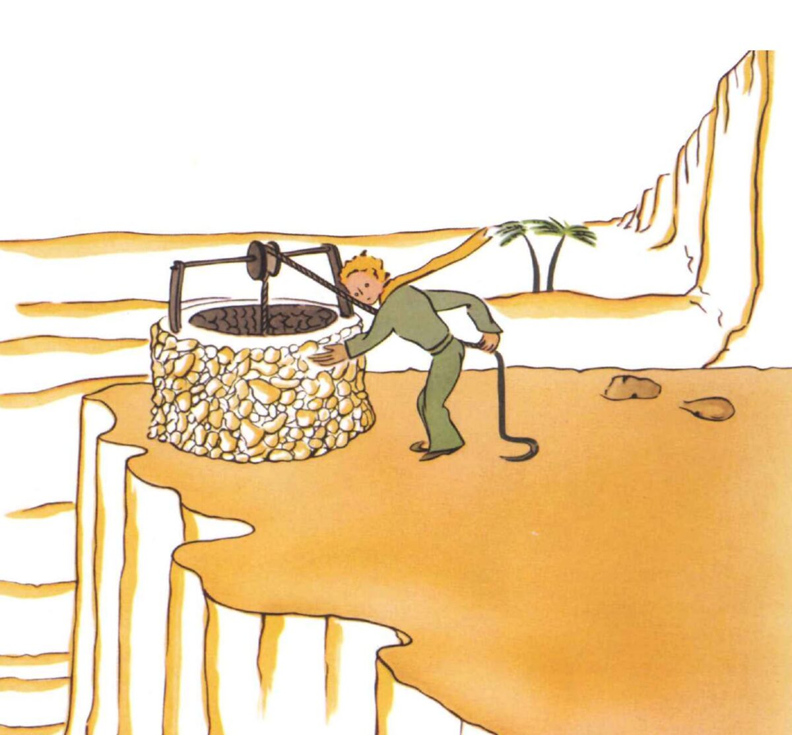
(24.19)— .i lo tarci cu melbi mu'i tu'a lo xrula poi [da ke'a na viska]
– Les étoiles sont belles, à cause d’une fleur que l’on ne voit pas…
“The stars are beautiful, because of a flower that cannot be seen.”
(24.20)ni'o mi spusku zo li'a gi'e catlu secau lo nu [tavla] kei lo canre terploterplo = te polje ni'a lo lunra
Je répondis « bien sûr » et je regardai, sans parler, les plis du sable sous la lune.
I replied, “Yes, that is so.” And, without saying anything more, I looked across the ridges of sand that were stretched out before us in the moonlight.
(24.21)— .i lo kutytu'a cu melbi —sei ny jmina cusku
– Le désert est beau, ajouta-t-il…
“The desert is beautiful,” the little prince added.
(24.22)ni'o .i'a jetnu .i mi ze'e prami lo kutytu'a .i da zutse lo canre ma'acma .i da viska node .i da tirna node .i ku'i smaji carmi
Et c’était vrai. J’ai toujours aimé le désert. On s’assoit sur une dune de sable. On ne voit rien. On n’entend rien. Et cependant quelque chose rayonne en silence…
And that was true. I have always loved the desert. One sits down on a desert sand dune, sees nothing, hears nothing. Yet through the silence something throbs, and gleams . . .
(24.23)— .i melgau lo kutytu'a fa la'e di'e —sei lo cmalu noltru cu cusku— .i ky mipri lo jintyke'ajintyke'a = jinto kevna bu'u da
– Ce qui embellit le désert, dit le petit prince, c’est qu’il cache un puits quelque part…
“What makes the desert beautiful,” said the little prince, “is that somewhere it hides a well . . .”
(24.24)ni'o spaji mi fa lo nu [suksa jimpe fi lo selmipri seldirce be lo canre] .i mi ca lo nu [verba] cu xabju lo tolci'o zdani noi [ranmi ke'a fa lo nu {ke'a mipri lo vamtce}] .i li'a noroi ku da snada lo nu [tolcri] kei gi'a ju'ocu'i sisku ji'asai .i ku'i vy selmancygau piro lo zdani .i lo mi zdani cu mipri da bu'u lo condi pe lo zy risna
Je fus surpris de comprendre soudain ce mystérieux rayonnement du sable. Lorsque j’étais petit garçon j’habitais une maison ancienne, et la légende racontait qu’un trésor y était enfoui. Bien sûr, jamais personne n’a su le découvrir, ni peut-être même ne l’a cherché. Mais il enchantait toute cette maison. Ma maison cachait un secret au fond de son cœur…
I was astonished by a sudden understanding of that mysterious radiation of the sands. When I was a little boy I lived in an old house, and legend told us that a treasure was buried there. To be sure, no one had ever known how to find it; perhaps no one had ever even looked for it. But it cast an enchantment over that house. My home was hiding a secret in the depths of its heart . . .
(24.25)— .i ie —sei mi fi lo cmalu noltru cu cusku— lo zdani lo tarci lo kutytu'a zo'u lo rinka be lo nu [melbi] cu nonselji'u
– Oui, dis-je au petit prince, qu’il s’agisse de la maison, des étoiles ou du désert, ce qui fait leur beauté est invisible !
“Yes,” I said to the little prince. “The house, the stars, the desert—what gives them their beauty is something that is invisible!”
(24.26)— .i mi gleki —sei ny cusku— lo nu [do tugni lo mi lorxu]
– Je suis content, dit-il, que tu sois d’accord avec mon renard.
“I am glad,” he said, “that you agree with my fox.”
(24.27)ni'o lo cmalu noltru cu sipna binxo .iseki'u bo mi jgari ny lo mi birka gi'e di'a litru .i mi cinmo .i mi te simlu lo ka [bevri lo ralci vamtce] .i mi te simlu lo ji'a sai ka [bu'u lo terdi no da zmadu fi lo ka {ralci}] .i mi catlu fi'o te gusni lo lunra lo kandi mebri .e lo ganlo kanla .e lo kerfa bakfu noi [desku ri'a lo brife] .i mi cusku fi mi fe «lu tu poi [mi viska] cu pilka po'o .i lo vajni traji cu nonselji'u li'u»
Comme le petit prince s’endormait, je le pris dans mes bras, et me remis en route. J’étais ému. Il me semblait porter un trésor fragile. Il me semblait même qu’il n’y eût rien de plus fragile sur la Terre. Je regardais, à la lumière de la lune, ce front pâle, ces yeux clos, ces mèches de cheveux qui tremblaient au vent, et je me disais : « Ce que je vois là n’est qu’une écorce. Le plus important est invisible… »
As the little prince dropped off to sleep, I took him in my arms and set out walking once more. I felt deeply moved, and stirred. It seemed to me that I was carrying a very fragile treasure. It seemed to me, even, that there was nothing more fragile on all Earth. In the moonlight I looked at his pale forehead, his closed eyes, his locks of hair that trembled in the wind, and I said to myself: “What I see here is nothing but a shell. What is most important is invisible . . .”
(24.28)ni'o lo milxe kalri ctebi cu jarco lo xadba nu [cisma] .isemu'ibo mi fi mi za'o cusku «lu mi cinmo lo tai tsali lo vi sipna ke cmalu noltru ri'a lo nu [ti pamsto lo xrula] .i ri'a lo pixra be lo rozgu be'o noi [dirce ne'i ti tai lo fagri pe lo tergu'i ca ji'asai lo nu {ti sipna}] li'u» .i mi jijnu lo du'u [ny semau ralci] .i sarcu fa lo nu [bandu lo tergu'i] .i lo brife kantu ka'e cadri'a ty
Comme ses lèvres entr’ouvertes ébauchaient un demi-sourire je me dis encore : « Ce qui m’émeut si fort de ce petit prince endormi, c’est sa fidélité pour une fleur, c’est l’image d’une rose qui rayonne en lui comme la flamme d’une lampe, même quand il dort… » Et je le devinai plus fragile encore. Il faut bien protéger les lampes : un coup de vent peut les éteindre…
As his lips opened slightly with the suspicion of a half-smile, I said to myself, again: “What moves me so deeply, about this little prince who is sleeping here, is his loyalty to a flower—the image of a rose that shines through his whole being like the flame of a lamp, even when he is asleep . . .” And I felt him to be more fragile still. I felt the need of protecting him, as if he himself were a flame that might be extinguished by a little puff of wind . . .
(24.29)ni'o mi ca lo nu [ca'o tai cadzu] cu tolcri lo jintyke'a ca lo cerni murse
Et, marchant ainsi, je découvris le puits au lever du jour.
And, as I walked on so, I found the well, at daybreak.
remu mo'o25
(25.1)— lo remna —sei lo cmalu noltru cu cusku— cu setca vo'a lo sutra trene .i ku'i na morji lo du'u [ry sisku makau] .i seki'ubo ry xanka gi'e carna
– Les hommes, dit le petit prince, ils s’enfournent dans les rapides, mais ils ne savent plus ce qu’ils cherchent. Alors ils s’agitent et tournent en rond…
“Men,” said the little prince, “set out on their way in express trains, but they do not know what they are looking for. Then they rush about, and get excited, and turn round and round . . .”
(25.2)ni'o ny jmina cusku di'e
Et il ajouta :
And he added:
(25.3)— .i na se vamji lo raktu
– Ce n’est pas la peine…
“It is not worth the trouble . . .”
(25.4)ni'o lo jintyke'a poi [mi'a tolcliva ke'a] cu na simsa lo jintyke'a pe la .sa'aras. .i lo jintyke'a pe la .sa'aras. cu sampu kevna te kakpa lo canre .i lo vu zvati cu simsa lo tcadu jintyke'a .i ku'i noda vu tcadu .i mi jinvi lo du'u [mi senva]
Le puits que nous avions atteint ne ressemblait pas aux puits sahariens. Les puits sahariens sont de simples trous creusés dans le sable. Celui-là ressemblait à un puits de village. Mais il n’y avait là aucun village, et je croyais rêver.
The well that we had come to was not like the wells of the Sahara. The wells of the Sahara are mere holes dug in the sand. This one was like a well in a village. But there was no village here, and I thought I must be dreaming . . .
(25.5)— .i cizra —sei mi fi lo cmalu noltru cu cusku— .i roda bredi .i lo pulni .e lo baktu .e lo skori
– C’est étrange, dis-je au petit prince, tout est prêt : la poulie, le seau et la corde…
“It is strange,” I said to the little prince. “Everything is ready for use: the pulley, the bucket, the rope . . .”
(25.6)ni'o ny cmila gi'e pencu lo skori gi'e cargau lo pulni .i lo pulni cu cmoni tai lo nu [cmoni fa lo tolci'o selbifmre ca lo nu {lo brife ba'o ze'u sipna}]
Il rit, toucha la corde, fit jouer la poulie. Et la poulie gémit comme gémit une vieille girouette quand le vent a longtemps dormi.
He laughed, touched the rope, and set the pulley to working. And the pulley moaned, like an old weathervane which the wind has long since forgotten.
(25.7)— .i do tirna —sei lo cmalu noltru cu cusku— .i mi'o cikygau lo jintyke'a .i jy sanga
– Tu entends, dit le petit prince, nous réveillons ce puits et il chante…
“Do you hear?” said the little prince. “We have wakened the well, and it is singing . . .”
(25.8)ni'o mi na djica lo nu [ny bairgau]
Je ne voulais pas qu’il fît un effort :
I did not want him to tire himself with the rope.
(25.9)— .i .e'e mi zukte —sei mi fi ny cusku— .i dukse lo kamtilju tu'a do
– Laisse-moi faire, lui dis-je, c’est trop lourd pour toi.
“Leave it to me,” I said. “It is too heavy for you.”
(25.10)ni'o mi masno lafti lo baktu fe'eco'u lo korbi .i mi by snura punji ky .i lo mi kerlo cu se stali lo se sanga be lo pulni .i mi bu'u lo djacu noi [za'o desku] cu viska lo nu [lo solri cu desku]
Lentement je hissai le seau jusqu’à la margelle. Je l’y installai bien d’aplomb. Dans mes oreilles durait le chant de la poulie et, dans l’eau qui tremblait encore, je voyais trembler le soleil.
I hoisted the bucket slowly to the edge of the well and set it there—happy, tired as I was, over my achievement. The song of the pulley was still in my ears, and I could see the sunlight shimmer in the still trembling water.
(25.11)— .i mi taske lo vu djacu —sei lo cmalu noltru cu cusku— .i ko dy mi dunda ja'e lo nu [mi pinxe]
– J’ai soif de cette eau-là, dit le petit prince, donne-moi à boire…
“I am thirsty for this water,” said the little prince. “Give me some of it to drink . . .”
(25.12)ni'o ua mi jimpe lo du'u [ny pu sisku makau]
Et je compris ce qu’il avait cherché !
And I understood what he had been looking for.
(25.13)ni'o mi lafti lo baktu fe'eco'u lo ny ctebi .i ny pinxe fau lo nu [lo kanla cu ganlo] .i kukte tai lo tersla .i lo djacu cu ja'asai drata lo cidja .i dy jbena lo nu [cadzu ni'a lo tarci] kei .e lo se sanga be lo pulni be'o .e lo nu [lo mi birka cu bairgau] .i dy xamgu lo risna tai lo seldu'a .i ca lo nu [mi verba] kei lo gusni be fi lo xisnunjbe tricu be'o .e lo zgike be lo ctemidju jdari'i be'o .e lo kampu'a be lo cisma cu tai se gunma lo se dirce be lo xisnunjbe seldu'a be fi mi
Je soulevai le seau jusqu’à ses lèvres. Il but, les yeux fermés. C’était doux comme une fête. Cette eau était bien autre chose qu’un aliment. Elle était née de la marche sous les étoiles, du chant de la poulie, de l’effort de mes bras. Elle était bonne pour le cœur, comme un cadeau. Lorsque j’étais petit garçon, la lumière de l’arbre de Noël, la musique de la messe de minuit, la douceur des sourires faisaient ainsi tout le rayonnement du cadeau de Noël que je recevais.
I raised the bucket to his lips. He drank, his eyes closed. It was as sweet as some special festival treat. This water was indeed a different thing from ordinary nourishment. Its sweetness was born of the walk under the stars, the song of the pulley, the effort of my arms. It was good for the heart, like a present. When I was a little boy, the lights of the Christmas tree, the music of the Midnight Mass, the tenderness of smiling faces, used to make up, so, the radiance of the gifts I received.
(25.14)— .i lo remna pe lo do terdi —sei lo cmalu noltru cu cusku— cu te cange lo pa purdi lo muki'o rozgu gi'e na tolcri lo se sisku be vo'a py
– Les hommes de chez toi, dit le petit prince, cultivent cinq mille roses dans un même jardin… et ils n’y trouvent pas ce qu’ils cherchent…
“The men where you live,” said the little prince, “raise five thousand roses in the same garden—and they do not find in it what they are looking for.”
(25.15)— .i ry na tolcri —sei mi spusku
– Ils ne le trouvent pas, répondis-je…
“They do not find it,” I replied.
(25.16)— .i ku'i ka'e tolcri lo se sisku be vo'a lo pa rozgu .a lo djacu spisa
– Et cependant ce qu’ils cherchent pourrait être trouvé dans une seule rose ou un peu d’eau…
“And yet what they are looking for could be found in one single rose, or in a little water.”
(25.17)— .i li'a —sei mi spusku
– Bien sûr, répondis-je.
“Yes, that is true,” I said.
(25.18)ni'o lo cmalu noltru cu jmina cusku
Et le petit prince ajouta :
And the little prince added:
(25.19)— .i ku'i lo kanla na viska .i .ei sisku sepi'o lo risna
– Mais les yeux sont aveugles. Il faut chercher avec le cœur.
“But the eyes are blind. One must look with the heart . . .”
(25.20)ni'o mi ba'o pinxe .i mi xamgu vasxu .i lo canre ca lo donri cfari cu skari lo bicyladru .i mi gleki lo nu [bicyladru skari] ku ji'a .i ki'u ma da'i mi badri
J’avais bu. Je respirais bien. Le sable, au lever du jour, est couleur de miel. J’étais heureux aussi de cette couleur de miel. Pourquoi fallait-il que j’eusse de la peine…
I had drunk the water. I breathed easily. At sunrise the sand is the color of honey. And that honey color was making me happy, too. What brought me, then, this sense of grief?
(25.21)— .i .ei do zukte lo do se nupre —sei lo cmalu noltru noi [za'ure'u zutse ti'a mi] cu nalylau cusku
– Il faut que tu tiennes ta promesse, me dit doucement le petit prince, qui, de nouveau, s’était assis auprès de moi.
“You must keep your promise,” said the little prince, softly, as he sat down beside me once more.
(25.22)— .i lo ki'a se nupre
– Quelle promesse ?
“What promise?”
(25.23)— .i do djuno .i lo molgai seva'u lo mi lanpanzi .i mi fuzme tu'a lo xrula
– Tu sais… une muselière pour mon mouton… je suis responsable de cette fleur !
“You know—a muzzle for my sheep . . . I am responsible for this flower . . .”
(25.24)ni'o mi tolsetca lo mi pixra tocyja'e lo mi daski .i lo cmalu noltru cu viska ty gi'e cmila cusku di'e
Je sortis de ma poche mes ébauches de dessin. Le petit prince les aperçut et dit en riant :
I took my rough drafts of drawings out of my pocket. The little prince looked them over, and laughed as he said:
(25.25)— .i lo do tricrbaubau cu milxe simsa lo kobli
– Tes baobabs, ils ressemblent un peu à des choux…
“Your baobabs—they look a little like cabbages.”
(25.26)— .i ue
– Oh !
“Oh!”
(25.27)ni'o mi tai jgira tu'a lo tricrbaubau
Moi qui étais si fier des baobabs !
I had been so proud of my baobabs!
(25.28)— .i lo do lorxu zo'u lo ly kerlo cu milxe simsa lo jirna gi'e clani dukse
– Ton renard… ses oreilles… elles ressemblent un peu à des cornes… et elles sont trop longues !
“Your fox—his ears look a little like horns; and they are too long.”
(25.29)ni'o ny cu za'ure'u cmila
Et il rit encore.
And he laughed again.
(25.30)— .i do na nulpai doi cmalu zanpre .i mi pu kakne lo nu [pirfi'i no na'ebo lo ganlo sincrboua .a lo kalri sincrboua]
– Tu es injuste, petit bonhomme, je ne savais rien dessiner que les boas fermés et les boas ouverts.
“You are not fair, little prince,” I said. “I don’t know how to draw anything except boa constrictors from the outside and boa constrictors from the inside.”
(25.31)— .i .o'u ba banzu —sei ny cusku— .i lo verba cu djuno
– Oh ! ça ira, dit-il, les enfants savent.
“Oh, that will be all right,” he said, “children understand.”
(25.32)ni'o mi seja'e pisfi'i lo molgai .i lo mi risna cu trati ca lo nu [dunda]
Je crayonnai donc une muselière. Et j’eus le cœur serré en la lui donnant :
So then I made a pencil sketch of a muzzle. And as I gave it to him my heart was torn.
(25.33)— .i do platu lo na se djuno be mi
– Tu as des projets que j’ignore…
“You have plans that I do not know about,” I said.
(25.34)ni'o ku'i ny na spuda mi .i ny cusku di'e
Mais il ne me répondit pas. Il me dit :
But he did not answer me. He said to me, instead:
(25.35)— .i ta'o lo nu [mi farlu la .terd]. zo'u lo bavlamdei cu detke'u
– Tu sais, ma chute sur la Terre… c’en sera demain l’anniversaire…
“You know—my descent to the earth . . . Tomorrow will be its anniversary.”
(25.36)ni'o ba lo smaji ny za'o cusku di'e
Puis, après un silence il dit encore :
Then, after a silence, he went on:
(25.37)— .i mi pu farlu lo mutce jibni be ti
– J’étais tombé tout près d’ici…
“I came down very near here.”
(25.38)ni'o ny xunbi'o
Et il rougit.
And he flushed.
(25.39)ni'o za'ure'uku mi secau lo nu [jimpe lo du'u {makau krinu}] cu lifri lo cizra nu [dunku] .i ku'i lo preti cu tolcanci mi
Et de nouveau, sans comprendre pourquoi, j’éprouvai un chagrin bizarre. Cependant une question me vint :
And once again, without understanding why, I had a queer sense of sorrow. One question, however, occurred to me:
(25.40)— .i ja'o na cunso fa lo nu [do ca lo nu {mi do pu pamoi penmi za lo djedi be li bi} cu tai nonkansa cadzu vu lo minli be li ki'o ki lo ro se xabju stuzi] .i xu do xruti lo se farlu be do
– Alors ce n’est pas par hasard que, le matin où je t’ai connu, il y a huit jours, tu te promenais comme ça, tout seul, à mille milles de toutes les régions habitées ! Tu retournais vers le point de ta chute ?
“Then it was not by chance that on the morning when I first met you—a week ago—you were strolling along like that, all alone, a thousand miles from any inhabited region? You were on the your back to the place where you landed?”
(25.41)ni'o lo cmalu noltru za'ure'u xunbi'o
Le petit prince rougit encore.
The little prince flushed again.
(25.42)ni'o mi jmina cusku di'e fau lo nu [senpi]
Et j’ajoutai, en hésitant :
And I added, with some hesitancy:
(25.43)— .i ki'u ju'ocu'i lo detke'u .y
– À cause, peut-être, de l’anniversaire ?…
“Perhaps it was because of the anniversary?”
(25.44)ni'o lo cmalu noltru za'ure'u xunbi'o .i ny cu noroi spuda lo preti .i ku'i lo nu [da xunbi'o] cu sinxa tu'a zo go'i iepei
Le petit prince rougit de nouveau. Il ne répondait jamais aux questions, mais, quand on rougit, ça signifie « oui », n’est-ce pas ?
The little prince flushed once more. He never answered questions—but when one flushes does that not mean “Yes”?
(25.45)— .i uinai —sei mi cusku— mi terpa
– Ah ! lui dis-je, j’ai peur…
“Ah,” I said to him, “I am a little frightened—”
(25.46)ni'o ku'i ny spusku di'e
Mais il me répondit :
But he interrupted me.
(25.47)— .i .ei do ca gunka .i .ei do cliva fa'a lo do minji .i mi bu'u denpa .i ko xruti ca lo bavlamvanci
– Tu dois maintenant travailler. Tu dois repartir vers ta machine. Je t’attends ici. Reviens demain soir…
“Now you must work. You must return to your engine. I will be waiting for you here. Come back tomorrow evening . . .”
(25.48)ni'o ku'i mi na surbi'o .i mi morji lo lorxu .i da se ckape lo nu [klaku] kei lo nu [da curmi lo nu {tolcicygau da}]
Mais je n’étais pas rassuré. Je me souvenais du renard. On risque de pleurer un peu si l’on s’est laissé apprivoiser…
But I was not reassured. I remembered the fox. One runs the risk of weeping a little, if one lets himself be tamed . . .
rexa mo'o26
(26.1)ni'o mlana lo jintyke'a fa lo rokci bitmu temfesti .i mi ca lo nu [xruti fi lo mi nungunka ca lo bavlamvanci] cu darno viska lo mi cmalu noltru noi [zutse lo vu galtu fau lo nu {lo tuple cu dandu}] .i mi tirna lo nu [ny tavla]
Il y avait, à côté du puits, une ruine de vieux mur de pierre. Lorsque je revins de mon travail, le lendemain soir, j’aperçus de loin mon petit prince assis là-haut, les jambes pendantes. Et je l’entendis qui parlait :
Beside the well there was the ruin of an old stone wall. When I came back from my work, the next evening, I saw from some distance away my little price sitting on top of a wall, with his feet dangling. And I heard him say:
(26.2)— .i ja'o xu do na morji —sei ny cusku— .i na co'e bu'u ti sa'e
– Tu ne t’en souviens donc pas ? disait-il. Ce n’est pas tout à fait ici !
“Then you don’t remember. This is not the exact spot.”
(26.3)ni'o ju'o lo drata voksa cu spuda —sei za'a ny di'e spusku
Une autre voix lui répondit sans doute, puisqu’il répliqua :
Another voice must have answered him, for he replied to it:
(26.4)— .i ie go'i .i lo detri cu drani .i ku'i ti na stuzi
– Si ! Si ! c’est bien le jour, mais ce n’est pas ici l’endroit…
“Yes, yes! It is the right day, but this is not the place.”
(26.5)ni'o mi ca'o cadzu fa'a lo bitmu .i mi lo prenu za'o genai [viska] ginai [tirna] .iku'i lo cmalu noltru za'ure'u spusku di'e
Je poursuivis ma marche vers le mur. Je ne voyais ni n’entendais toujours personne. Pourtant le petit prince répliqua de nouveau :
I continued my walk toward the wall. At no time did I see or hear anyone. The little prince, however, replied once again:
(26.6)— .i li'a .i do va viska lo krasi be lo mi tapsnitapsni = stapa sinxa bu'u lo canre .i .ei po'o do denpa mi ky .i mi ba zvati ky ca lo nicte
– … Bien sûr. Tu verras où commence ma trace dans le sable. Tu n’as qu’à m’y attendre. J’y serai cette nuit.
“—Exactly. You will see where my track begins, in the sand. You have nothing to do but wait for me there. I shall be there tonight.”
(26.7)ni'o mi sepli lo bitmu lo mitre be li reno .i mi za'o viska noda
J’étais à vingt mètres du mur et je ne voyais toujours rien.
I was only twenty meters from the wall, and I still saw nothing.
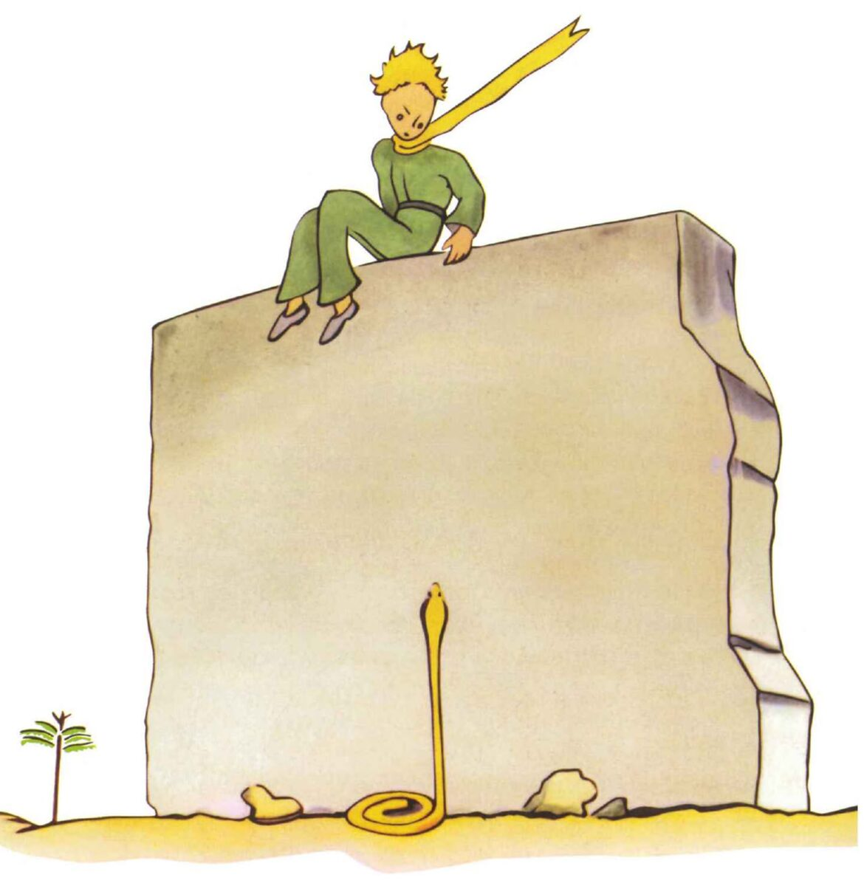
(26.8)ni'o lo cmalu noltru di'a cusku di'e baza lo smaji
Le petit prince dit encore, après un silence :
After a silence the little prince spoke again:
(26.9)— .i xu do ponse lo zabna vindu .i ju'opei mi na ba ze'u cortu
– Tu as du bon venin ? Tu es sûr de ne pas me faire souffrir longtemps ?
“You have good poison? You are sure that it will not make me suffer too long?”
(26.10)ni'o mi se dicra fau lo nu [lo risna cu trati] .i ku'i mi za'o na jimpe
Je fis halte, le cœur serré, mais je ne comprenais toujours pas.
I stopped in my tracks, my heart torn asunder; but still I did not understand.
(26.11)— .i nauku ko cliva —sei ny cusku— .i mi djica lo nu [mi dzikladzikla = dizlo klama]
– Maintenant va-t’en, dit-il… je veux redescendre !
“Now go away,” said the little prince. “I want to get down from the wall.”
(26.12)ni'o seja'e ku ba'e mi dzigaudzigau = dizlo gasnu lo kanla fa'a lo dizlo be lo bitmu .ije ue mi plipe .i sraji fa'a lo cmalu noltru fa lo pelxu since poi [catra da ze'i lo snidu be li cino] .i mi ca lo nu [sisku lo cecla lo mi daski] cu co'a bajra .i ku'i ri'a lo sance be mi lo since cu ranti sakli lo canre tai lo djacu jetce poi [mrobi'o] .i sy secau lo nu [dukse sezysutygau] cu se julne lo rokci fau lo nu [kandi ke jinme savru]
Alors j’abaissai moi-même les yeux vers le pied du mur, et je fis un bond ! Il était là, dressé vers le petit prince, un de ces serpents jaunes qui vous exécutent en trente secondes. Tout en fouillant ma poche pour en tirer mon revolver, je pris le pas de course, mais, au bruit que je fis, le serpent se laissa doucement couler dans le sable, comme un jet d’eau qui meurt, et, sans trop se presser, se faufila entre les pierres avec un léger bruit de métal.
I dropped my eyes, then, to the foot of the wall—and I leaped into the air. There before me, facing the little prince, was one of those yellow snakes that take just thirty seconds to bring your life to an end. Even as I was digging into my pocked to get out my revolver I made a running step back. But, at the noise I made, the snake let himself flow easily across the sand like the dying spray of a fountain, and, in no apparent hurry, disappeared, with a light metallic sound, among the stones.
(26.13)ni'o mi tolcliva lo bitmu ca lo satci mapti be lo nu [co'a jgari fi lo birka fe lo mi cmalu zanpre noltru noi {blabi tai lo snime}]
Je parvins au mur juste à temps pour y recevoir dans les bras mon petit bonhomme de prince, pâle comme la neige.
I reached the wall just in time to catch my little man in my arms; his face was white as snow.
(26.14)— .i ma mo .i ue xu do nau ta'e tavla lo since
– Quelle est cette histoire-là ! Tu parles maintenant avec les serpents !
“What does this mean?” I demanded. “Why are you talking with snakes?”
(26.15)ni'o mi ba'o luzgau lo ny ze'e sloska nebyta'u .i mi ba'o cimgau lo ny mebmla gi'e ba'o pixygau ny .i caku mi na darsi lo nu [za'o retsku] .i ny junri catlu mi gi'e srugau lo ny birka lo mi cnebo .i mi ganse lo nu [lo ny risna cu rilgaurilgau = rilti gasnu tai da pe lo cipni poi {mrobi'o ca lo nu (ba'o cecla danti darxi ke'a)}] .i ny cusku di'e mi
J’avais défait son éternel cache-nez d’or. Je lui avais mouillé les tempes et l’avais fait boire. Et maintenant je n’osais plus rien lui demander. Il me regarda gravement et m’entoura le cou de ses bras. Je sentais battre son cœur comme celui d’un oiseau qui meurt, quand on l’a tiré à la carabine. Il me dit :
I had loosened the golden muffler that he always wore. I had moistened his temples, and had given him some water to drink. And now I did not dare ask him any more questions. He looked at me very gravely, and put his arms around my neck. I felt his heart beating like the heart of a dying bird, shot with someone’s rifle . . .
(26.16)— .i mi gleki lo nu [do facki lo du'u {makau nabmi lo do minji}] .i do ba kakne lo nu [xruti lo zdani be do]
– Je suis content que tu aies trouvé ce qui manquait à ta machine. Tu vas pouvoir rentrer chez toi…
“I am glad that you have found what was the matter with your engine,” he said. “Now you can go back home—”
(26.17)— .i ta'i ma do djuno
– Comment sais-tu !
“How do you know about that?”
(26.18)ni'o mi ja'a pu pu'o jungau ny lo du'u [mi fa'e ro se pacna cu snada lo se gunka be mi]
Je venais justement lui annoncer que, contre toute espérance, j’avais réussi mon travail !
I was just coming to tell him that my work had been successful, beyond anything that I had dared to hope.
(26.19)ni'o ny spuda lo mi preti noda .i ku'i ny jmina cusku di'e
Il ne répondit rien à ma question, mais il ajouta :
He made no answer to my question, but he added:
(26.20)— .i mi ji'a ca lo cabdei cu xruti lo me mi moi
– Moi aussi, aujourd’hui, je rentre chez moi…
“I, too, am going back home today . . .”
(26.21)ni'o baku badri
Puis, mélancolique :
Then, sadly—
(26.22)— .i ja'asai darmau .i ja'asai nadmau
– C’est bien plus loin… c’est bien plus difficile…
“It is much farther . . . It is much more difficult . . .”
(26.23)ni'o mi jijnu lo nu [lo rirci cu fasnu] .i mi ca'o jgari ny lo mi birka tai lo nu [ny cifnu] .i ku'i ny simlu lo ka [sraji sakli fa'a lo kunti secau lo nu {mi kakne lo nu (ralte ny)}]
Je sentais bien qu’il se passait quelque chose d’extraordinaire. Je le serrais dans les bras comme un petit enfant, et cependant il me semblait qu’il coulait verticalement dans un abîme sans que je pusse rien pour le retenir…
I realized clearly that something extraordinary was happening. I was holding him close in my arms as if he were a little child; and yet it seemed to me that he was rushing headlong toward an abyss from which I could do nothing to restrain him . . .
(26.24)ni'o ny jarco lo junri flira tai lo nu [darno catlu]
Il avait le regard sérieux, perdu très loin :
His look was very serious, like some one lost far away.
(26.25)— .i mi ponse lo do lanpanzi .i go'i lo tanxe pe seva'u lo lanpanzi .i go'i lo molgai
– J’ai ton mouton. Et j’ai la caisse pour le mouton. Et j’ai la muselière…
“I have your sheep. And I have the sheep’s box. And I have the muzzle . . .”
(26.26)ni'o ny badri cisma
Et il sourit avec mélancolie.
And he gave me a sad smile.
(26.27)ni'o mi ze'u denpa .i mi ganse lo nu [ny masno cikyze'a]
J’attendis longtemps. Je sentais qu’il se réchauffait peu à peu :
I waited a long time. I could see that he was reviving little by little.
(26.28)— .i doi cmalu zanpre do pu terpa
– Petit bonhomme, tu as eu peur…
“Dear little man,” I said to him, “you are afraid . . .”
(26.29)ni'o li'a ny pu terpa .i ku'i ny milxe cmila
Il avait eu peur, bien sûr ! Mais il rit doucement :
He was afraid, there was no doubt about that. But he laughed lightly.
(26.30)— .i mi ba mutce zmadu terpa ca lo vanci
– J’aurai bien plus peur ce soir…
“I shall be much more afraid this evening . . .”
(26.31)ni'o mi za'ure'u dunja cinmo fi lo selcikrynalka'e .i mi jimpe lo du'u [mi na kakne lo nu {renvi lo si'o (mi ze'e ba na tirna lo nu ⟨ny cmila⟩)}] .i ma'i mi cy simsa lo jinto pe lo kutytu'a
De nouveau je me sentis glacé par le sentiment de l’irréparable. Et je compris que je ne supportais pas l’idée de ne plus jamais entendre ce rire. C’était pour moi comme une fontaine dans le désert.
Once again I felt myself frozen by the sense of something irreparable. And I knew that I could not bear the thought of never hearing that laughter any more. For me, it was like a spring of fresh water in the desert.
(26.32)— .i doi cmalu zanpre mi djica lo nu [za'ure'u tirna lo nu {do cmila}]
– Petit bonhomme, je veux encore t’entendre rire…
“Little man,” I said, “I want to hear you laugh again.”
(26.33)ni'o ku'i ny cusku di'e
Mais il me dit :
But he said to me:
(26.34)— .i ca lo nicte cu mulno fa lo nanca be li pa .i lo mi tarci ba zvati lo satci gapru be lo stuzi be lo mi se farlu pe lo purlamnanca
– Cette nuit, ça fera un an. Mon étoile se trouvera juste au-dessus de l’endroit où je suis tombé l’année dernière…
“Tonight, it will be a year . . . My star, then, can be found right above the place where I came to the Earth, a year ago . . .”
(26.35)— .i doi cmalu zanpre lo lisri be lo since .e lo nunpenmi .e lo tarci cu mabla se senva iepei
– Petit bonhomme, n’est-ce pas que c’est un mauvais rêve cette histoire de serpent et de rendez-vous et d’étoile…
“Little man,” I said, “tell me that it is only a bad dream—this affair of the snake, and the meeting-place, and the star . . .”
(26.36)ni'o ku'i ny na spuda lo mi preti .i ny di'e mi cusku
Mais il ne répondit pas à ma question. Il me dit :
But he did not answer my plea. He said to me, instead:
(26.37)— .i lo vajni na se viska
– Ce qui est important, ça ne se voit pas…
“The thing that is important is the thing that is not seen . . .”
(26.38)— .i li'a
– Bien sûr…
“Yes, I know . . .”
(26.39)— .i co'e tai tu'a lo xrula .i va'o lo nu [do prami lo xrula poi {zvati lo tarci}] cu pluka fa lo nu [catlu lo tsani ca lo nicte] .i ro tarci cu se zvati lo xrula
– C’est comme pour la fleur. Si tu aimes une fleur qui se trouve dans une étoile, c’est doux, la nuit, de regarder le ciel. Toutes les étoiles sont fleuries.
“It is just as it is with the flower. If you love a flower that lives on a star, it is sweet to look at the sky at night. All the stars are a-bloom with flowers . . .”
(26.40)— .i li'a
– Bien sûr…
“Yes, I know . . .”
(26.41)— .i co'e tai tu'a lo djacu .i dy poi [do ke'a mi dunda tezu'e lo nu {pinxe}] cu simsa lo zgike be lo pulni joi lo skori .i xu do morji .i dy xamgu
– C’est comme pour l’eau. Celle que tu m’as donnée à boire était comme une musique, à cause de la poulie et de la corde… tu te rappelles… elle était bonne.
“It is just as it is with the water. Because of the pulley, and the rope, what you gave me to drink was like music. You remember—how good it was.”
(26.42)— .i li'a
– Bien sûr…
“Yes, I know . . .”
(26.43)— .i do ba catlu ca lo nicte lo tarci .i lo mi zdani cu dukse lo ka [cmalu] kei lo nu [mi jarco lo du'u {makau stuzi lo mi tarci}] .i la'e di'u xagmau .i lo mi tarci ba me pa tarci ma'i do .i ja'o ro tarci zo'u do ba nelci lo nu [catlu ty] .i roboi ty do ba pendo .i mi da do ba dunda
– Tu regarderas, la nuit, les étoiles. C’est trop petit chez moi pour que je te montre où se trouve la mienne. C’est mieux comme ça. Mon étoile, ça sera pour toi une des étoiles. Alors, toutes les étoiles, tu aimeras les regarder… Elles seront toutes tes amies. Et puis je vais te faire un cadeau…
“And at night you will look up at the stars. Where I live everything is so small that I cannot show you where my star is to be found. It is better, like that. My star will just be one of the stars, for you. And so you will love to watch all the stars in the heavens . . . they will all be your friends. And, besides, I am going to make you a present . . .”
(26.44)ni'o ny boi za'ure'u cmila
Il rit encore.
He laughed again.
(26.45)— .i .oinai doi zanpre mi mutce se pluka lo nu [tirna lo nu {do cmila}]
– Ah ! petit bonhomme, petit bonhomme j’aime entendre ce rire !
“Ah, little prince, dear little prince! I love to hear that laughter!”
(26.46)— .i ba'e ri se dunda mi do .i ba simsa lo djacu
– Justement ce sera mon cadeau… ce sera comme pour l’eau…
“That is my present. Just that. It will be as it was when we drank the water . . .”
(26.47)— .i do skudji ma
– Que veux-tu dire ?
“What are you trying to say?”
(26.48)— .i lo prenu cu ponse lo tarci poi [na mintu] .i lo tarci seva'u py poi [litru] cu gidva .i seva'u lo drata cu cmalu te gusni po'o .i seva'u lo drata poi [prije] cu nabmi .i seva'u lo mi cu'upre cu solji .i ku'i ro lo tai tarci cu smaji .i do ba ponse lo tarci poi [no prenu cu ponse lo simsa]
– Les gens ont des étoiles qui ne sont pas les mêmes. Pour les uns, qui voyagent, les étoiles sont des guides. Pour d’autres elles ne sont rien que de petites lumières. Pour d’autres, qui sont savants, elles sont des problèmes. Pour mon businessman elles étaient de l’or. Mais toutes ces étoiles-là se taisent. Toi, tu auras des étoiles comme personne n’en a…
“All men have the stars,” he answered, “but they are not the same things for different people. For some, who are travelers, the stars are guides. For others they are no more than little lights in the sky. For others, who are scholars, they are problems. For my businessman they were wealth. But all these stars are silent. You—you alone—will have the stars as no one else has them—”
(26.49)— .i do skudji ma
– Que veux-tu dire ?
“What are you trying to say?”
(26.50)— .i ca lo nu [do catlu lo tsani ca lo nicte] kei ki'u lo nu [mi xabju paboi ty] kei ki'u lo nu [mi cmila bu'u paboi ty] kei ro tarci ba simlu lo ka [cmila] kei do .i ui do ba ponse lo tarci poi [kakne lo nu {cmila}]
– Quand tu regarderas le ciel, la nuit, puisque j’habiterai dans l’une d’elles, puisque je rirai dans l’une d’elles, alors ce sera pour toi comme si riaient toutes les étoiles. Tu auras, toi, des étoiles qui savent rire !
“In one of the stars I shall be living. In one of them I shall be laughing. And so it will be as if all the stars were laughing, when you look at the sky at night . . . You—only you—will have stars that can laugh!”
(26.51)ni'o ny cu za'ure'u cmila
Et il rit encore.
And he laughed again.
(26.52)— .i do ca lo nu [do ba'o cnikufybi'o (to da roroi cnikufybi'o toi)] cu ba gleki lo nu [mi do slabu] .i do mi ze'e ba pendo .i do ba djica lo nu [kansa mi lo nu {cmila}] .i do ba su'oroi kargau lo do canko tezu'e lo nunpluka .i lo do pendo ba mutce se spaji lo nu [viska lo nu {do cmila fau lo nu (catlu lo tsani)}] .i do fi py ba cusku «lu .i'a lo tarci cu roroi gasnu lo nu [mi cmila] li'u» .i py ba jinvi lo du'u [do fenki] .i .u'i mi ba ba'o gasnu lo nu [do mabla lifri]
– Et quand tu seras consolé (on se console toujours) tu seras content de m’avoir connu. Tu seras toujours mon ami. Tu auras envie de rire avec moi. Et tu ouvriras parfois ta fenêtre, comme ça, pour le plaisir… Et tes amis seront bien étonnés de te voir rire en regardant le ciel. Alors tu leur diras : « Oui, les étoiles, ça me fait toujours rire ! » Et ils te croiront fou. Je t’aurai joué un bien vilain tour…
“And when your sorrow is comforted (time soothes all sorrows) you will be content that you have known me. You will always be my friend. You will want to laugh with me. And you will sometimes open your window, so, for that pleasure . . . And your friends will be properly astonished to see you laughing as you look up at the sky! Then you will say to them, ’Yes, the stars always make me laugh!’ And they will think you are crazy. It will be a very shabby trick that I shall have played on you . . .”
(26.53)ni'o ny cu za'ure'u cmila
Et il rit encore.
And he laughed again.
(26.54)— .i si'a da'i mi dunda seba'i tu'a lo tarci lo so'i cmalu jabyboijabyboi = janbe bolci poi [kakne lo nu {cmila}]
– Ce sera comme si je t’avais donné, au lieu d’étoiles, des tas de petits grelots qui savent rire…
“It will be as if, in place of the stars, I had given you a great number of little bells that knew how to laugh . . .”
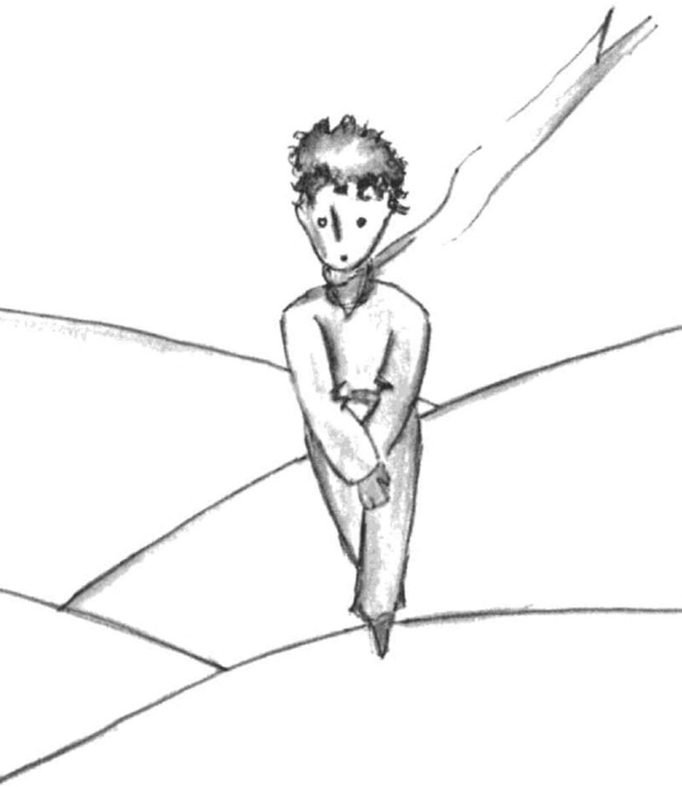
(26.55)ni'o ny cu za'ure'u cmila .i ba bo ny xruti lo ka [junri]
Et il rit encore. Puis il redevint sérieux :
And he laughed again. Then he quickly became serious:
(26.56)— .i ca lo nicte .y .o'e .y ko mi na klama
– Cette nuit… tu sais… ne viens pas.
“Tonight—you know . . . Do not come.”
(26.57)— .i mi do na ba cliva
– Je ne te quitterai pas.
“I shall not leave you,” I said.
(26.58)— .i mi ba simlu lo ka [bilma] .i mi ba milxe simlu lo ka [mrobi'o] .i go'i .i ko na klama tezu'e lo nu [viska la'e di'u] .i na vamji fa lo nu [troci]
– J’aurai l’air d’avoir mal… j’aurai un peu l’air de mourir. C’est comme ça. Ne viens pas voir ça, ce n’est pas la peine…
“I shall look as if I were suffering. I shall look a little as if I were dying. It is like that. Do not come to see that. It is not worth the trouble . . .”
(26.59)— .i mi do na ba cliva
– Je ne te quitterai pas.
“I shall not leave you.”
(26.60)ni'o ku'i ny dunku
Mais il était soucieux.
But he was worried.
(26.61)— .i mi cusku di'e .i krinu fa tu'a lo since ji'a .i .ei sy do na batci .i lo since cu xlali .i ka'e batci mu'i lo nu [pluka]
– Je te dis ça… c’est à cause aussi du serpent. Il ne faut pas qu’il te morde… Les serpents, c’est méchant. Ça peut mordre pour le plaisir…
“I tell you—it is also because of the snake. He must not bite you. Snakes—they are malicious creatures. This one might bite you just for fun . . .”
(26.62)— .i mi do na ba cliva
– Je ne te quitterai pas.
“I shall not leave you.”
(26.63)ni'o ku'i da rinka lo nu [ny nurcni]
Mais quelque chose le rassura :
But a thought came to reassure him:
(26.64)— .i je'u sy na za'o ponse lo vindu tepi'o lo nu [rere'u batci]
– C’est vrai qu’ils n’ont plus de venin pour la seconde morsure…
“It is true that they have no more poison for a second bite.”
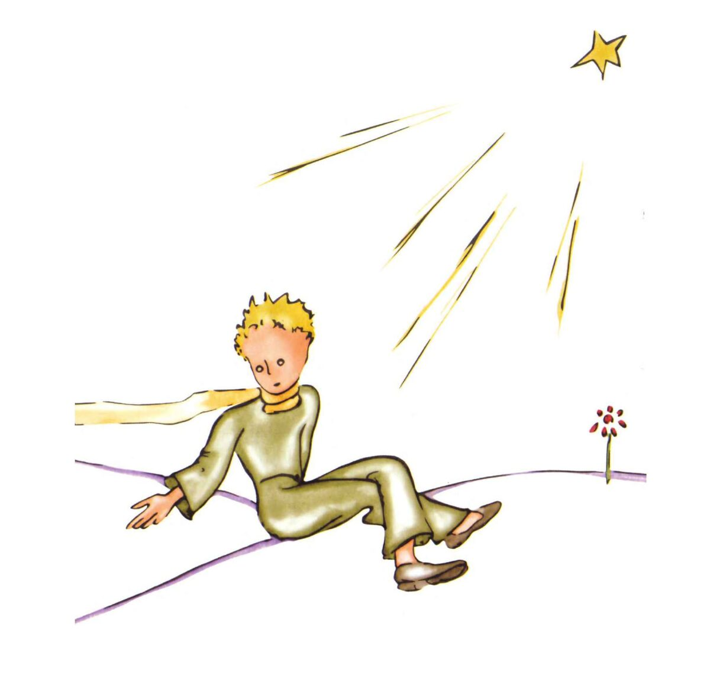
(26.65)ni'o ca lo nicte mi na viska lo nu [ny co'a klama] .i ny ba'o cliva secau lo savru .i ny ca lo nu [mi snada lo nu {jorne ny}] cu jdice cadzu co sutra stapa .i ny cusku di'e po'o
Cette nuit-là je ne le vis pas se mettre en route. Il s’était évadé sans bruit. Quand je réussis à le rejoindre il marchait décidé, d’un pas rapide. Il me dit seulement :
That night I did not see him set out on his way. He got away from me without making a sound. When I succeeded in catching up with him he was walking along with a quick and resolute step. He said to me merely:
(26.66)— .i ua do zvati
– Ah ! tu es là…
“Ah! You are there . . .”
(26.67)ni'o ny mi jgari lo xance .i ku'i ny za'o dunku
Et il me prit par la main. Mais il se tourmenta encore :
And he took me by the hand. But he was still worrying.
(26.68)— .i do srera .i do ba badri .i mi ba simlu lo ka [morsi] .i ku'i la'e di'u na ba jetnu
– Tu as eu tort. Tu auras de la peine. J’aurai l’air d’être mort et ce ne sera pas vrai…
“It was wrong of you to come. You will suffer. I shall look as if I were dead; and that will not be true . . .”
(26.69)ni'o mi smaji
Moi je me taisais.
I said nothing.
(26.70)— .i do jimpe .i darno dukse .i mi na kakne lo nu [bevri lo xadni] .i tilju dukse
– Tu comprends. C’est trop loin. Je ne peux pas emporter ce corps-là. C’est trop lourd.
“You understand . . . it is too far. I cannot carry this body with me. It is too heavy.”
(26.71)ni'o mi smaji
Moi je me taisais.
I said nothing.
(26.72)— .i ku'i ba simsa lo tolci'o pilka poi [se cliva] .i na badri tu'a lo tolci'o pilka
– Mais ce sera comme une vieille écorce abandonnée. Ce n’est pas triste les vieilles écorces…
“But it will be like an old abandoned shell. There is nothing sad about old shells . . .”
(26.73)ni'o mi smaji
Moi je me taisais.
I said nothing.
(26.74)ni'o ny milxe toldarsybi'o .i ku'i ny cu za'ure'u troci
Il se découragea un peu. Mais il fit encore un effort :
He was a little discouraged. But he made one more effort:
(26.75)— .i ba xamgu .o'e .i mi ji'a ba catlu lo tarci .i ro tarci ba jintyke'a gi'e ponse lo kijyfusra pulni .i ro tarci ba dunda lo se pinxe mi
– Ce sera gentil, tu sais. Moi aussi je regarderai les étoiles. Toutes les étoiles seront des puits avec une poulie rouillée. Toutes les étoiles me verseront à boire…
“You know, it will be very nice. I, too, shall look at the stars. All the stars will be wells with a rusty pulley. All the stars will pour out fresh water for me to drink . . .”
(26.76)ni'o mi smaji
Moi je me taisais.
I said nothing.
(26.77)— .i ba tai zdile .i do ba ponse munonoki'oki'o jabyboi .i mi ba ponse munonoki'oki'o jinto
– Ce sera tellement amusant ! Tu auras cinq cents millions de grelots, j’aurai cinq cents millions de fontaines…
“That will be so amusing! You will have five hundred million little bells, and I shall have five hundred million springs of fresh water . . .”
(26.78)ni'o ny ji'a co'a smaji ki'u lo nu [ny klaku]
Et il se tut aussi, parce qu’il pleurait…
And he too said nothing more, becuase he was crying . . .
(26.79)— .i tu stuzi .i ko curmi lo nu [mi nonkansa stapa]
– C’est là. Laisse-moi faire un pas tout seul.
“Here it is. Let me go on by myself.”
(26.80)ni'o ny zutse binxo ki'u lo nu [ny terpa]
Et il s’assit parce qu’il avait peur.
And he sat down, because he was afraid. Then he said, again:
(26.81)ni'o ny di'a cusku di'e
Il dit encore :
And he sat down, because he was afraid. Then he said, again:
(26.82)— .i .o'e lo mi xrula zo'u mi fuzme tu'a xy .i xy tai ruble .i xy tai zanbebna .i xy ponse lo vo kinli ku po'osai tepi'o lo nu [bandu xy lo munje]
– Tu sais… ma fleur… j’en suis responsable ! Et elle est tellement faible ! Et elle est tellement naïve. Elle a quatre épines de rien du tout pour la protéger contre le monde…
“You know—my flower . . . I am responsible for her. And she is so weak! She is so naďve! She has four thorns, of no use at all, to protect herself against all the world . . .”
(26.83)ni'o mi zutse binxo ki'u lo nu [mi na za'o kakne lo nu {sanli sezysarji}] .i ny cusku di'e
Moi je m’assis parce que je ne pouvais plus me tenir debout. Il dit :
I too sat down, because I was not able to stand up any longer.
(26.84)— .i .i'a uo
– Voilà… C’est tout…
“There now—that is all . . .”
(26.85)ni'o ny ze'i za'o senpi .ibabo ny sanli xruti .i ny cu paroi stapa .i mi na kakne lo nu [muvdu]
Il hésita encore un peu, puis il se releva. Il fit un pas. Moi je ne pouvais pas bouger.
He still hesitated a little; then he got up. He took one step. I could not move.
(26.86)ni'o po'o pelxu lindi ne'a lo ny tupne'o .i ny cu ze'i cando stali .i ny na krixa .i ny smaji farlu tai lo nu [lo tricu cu farlu] .i na'e savru ri'a tu'a lo canre
Il n’y eut rien qu’un éclair jaune près de sa cheville. Il demeura un instant immobile. Il ne cria pas. Il tomba doucement comme tombe un arbre. Ça ne fit même pas de bruit, à cause du sable.
There was nothing but a flash of yellow close to his ankle. He remained motionless for an instant. He did not cry out. He fell as gently as a tree falls. There was not even any sound, because of the sand.
reze mo'o27
(27.1)ni'o nauku baza lo nanca be li xa mi za'o na ze'e pu cusku lo lisri .i lo pendo poi [pu za'ure'u viska mi] cu mutce gleki lo nu [za'ure'u viska mi fau lo nu {mi jmive}] .i mi pu badri gi'e ku'i cusku «lu ri'a lo nu [tatpi li'o] li'u»
Et maintenant, bien sûr, ça fait six ans déjà… Je n’ai jamais encore raconté cette histoire. Les camarades qui m’ont revu ont été bien contents de me revoir vivant. J’étais triste mais je leur disais : « C’est la fatigue… »
And now six years have already gone by . . . I have never yet told this story. The companions who met me on my return were well content to see me alive. I was sad, but I told them: “I am tired.”
(27.2)ni'o nauku mi ba'o milxe surbi'o .i sa'e na mulno .i ku'i mi djuno lo du'u [ny pu xruti lo ny plini] kei ji'u lo du'u [ca lo co'a donri mi pu na tolcri lo ny xadni] .i lo xadni na tai tulji .i mi nelci ca lo nicte lo nu [tirna lo tarci] .i simsa lo munonoki'oki'o jabyboi
Maintenant je me suis un peu consolé. C’est-à-dire… pas tout à fait. Mais je sais bien qu’il est revenu à sa planète, car, au lever du jour, je n’ai pas retrouvé son corps. Ce n’était pas un corps tellement lourd… Et j’aime la nuit écouter les étoiles. C’est comme cinq cent millions de grelots…
Now my sorrow is comforted a little. That is to say—not entirely. But I know that he did go back to his planet, because I did not find his body at daybreak. It was not such a heavy body . . . and at night I love to listen to the stars. It is like five hundred million little bells . . .
(27.3)ni'o ku'i fasnu fa lo rirci .i lo molgai poi [mi pirfi'i ke'a seva'u lo cmalu noltru] zo'u .oi mi fliba lo nu [jmina lo skapi skori my] .i ny ze'e na ka'e lasna my lo lanpanzi .i seki'ubo mi sezretsku «lu ma pu fasnu bu'u lo ny plini .i xu lo lanpanzi pu citka lo xrula li'u»
Mais voilà qu’il se passe quelque chose d’extraordinaire. La muselière que j’ai dessinée pour le petit prince, j’ai oublié d’y ajouter la courroie de cuir ! Il n’aura jamais pu l’attacher au mouton. Alors je me demande : « Que s’est-il passé sur sa planète ? Peut-être bien que le mouton a mangé la fleur… »
But there is one extraordinary thing . . . when I drew the muzzle for the little prince, I forgot to add the leather strap to it. He will never have been able to fasten it on his sheep. So now I keep wondering: what is happening on his planet? Perhaps the sheep has eaten the flower . . .
(27.4)ni'o zu'u su'oroiku mi sezysku «lu li'a na go'i .i lo cmalu noltru cu selsantygau ca ro nicte lo ny xrula ni'a lo blacygai gi'e mutce jundi lo ny lanpanzi li'u» .iseki'ubo mi gleki .ije ro tarci cu xutla cmila
Tantôt je me dis : « Sûrement non ! Le petit prince enferme sa fleur toutes les nuits sous son globe de verre, et il surveille bien son mouton… » Alors je suis heureux. Et toutes les étoiles rient doucement.
At one time I say to myself: “Surely not! The little prince shuts his flower under her glass globe every night, and he watches over his sheep very carefully . . .” Then I am happy. And there is sweetness in the laughter of all the stars.
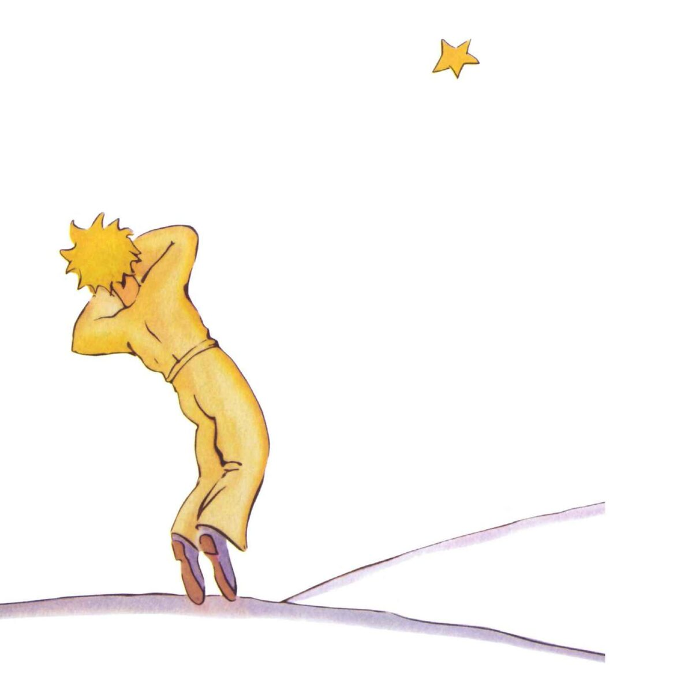
(27.5)ni'o zu'unai su'oroiku mi sezysku «lu da su'oroi tolju'i .i .oi la'e di'u banzu .i ny ca pa vanci na morji tu'a lo blacygai .ija lo lanpanzi cu barkla secau lo savru ca lo nicte li'u» .i seki'ubo ro jabyboi cu binxo lo se klaku
Tantôt je me dis : « On est distrait une fois ou l’autre, et ça suffit ! Il a oublié, un soir, le globe de verre, ou bien le mouton est sorti sans bruit pendant la nuit… » Alors les grelots se changent tous en larmes !…
But at another time I say to myself: “At some moment or other one is absent-minded, and that is enough! On some one evening he forgot the glass globe, or the sheep got out, without making any noise, in the night . . .” And then the little bells are changed to tears . . .
(27.6)ni'o mutce cizra .i ma'i mi .e do noi [ke'a ji'a prami lo cmalu noltru] zo'u no pagbu be lo munje cu mintu stali va'o lo nu xukau [bu'u lo na slabu be mi'o lo lanpanzi noi {na slabu mi'o} cu pu citka lo rozgu]
C’est là un bien grand mystère. Pour vous qui aimez aussi le petit prince, comme pour moi, rien de l’univers n’est semblable si quelque part, on ne sait où, un mouton que nous ne connaissons pas a, oui ou non, mangé une rose…
Here, then, is a great mystery. For you who also love the little prince, and for me, nothing in the universe can be the same if somewhere, we do not know where, a sheep that we never saw has—yes or no?—eaten a rose . . .
(27.7)ni'o ko catlu lo tsani .i ko sezyretsku di'e .i pau xu lo lanpanzi pu citka lo xrula .i do ba jimpe lo du'u [ro da cenba]
Regardez le ciel. Demandez-vous : le mouton oui ou non a-t-il mangé la fleur ? Et vous verrez comme tout change…
Look up at the sky. Ask yourselves: is it yes or no? Has the sheep eaten the flower? And you will see how everything changes . . .
(27.8)ni'o ia ze'eku no makcu prenu ba jimpe lo du'u [la'e di'u tai vajni]
Et aucune grande personne ne comprendra jamais que ça a tellement d’importance !
And no grown-up will ever understand that this is a matter of so much importance!
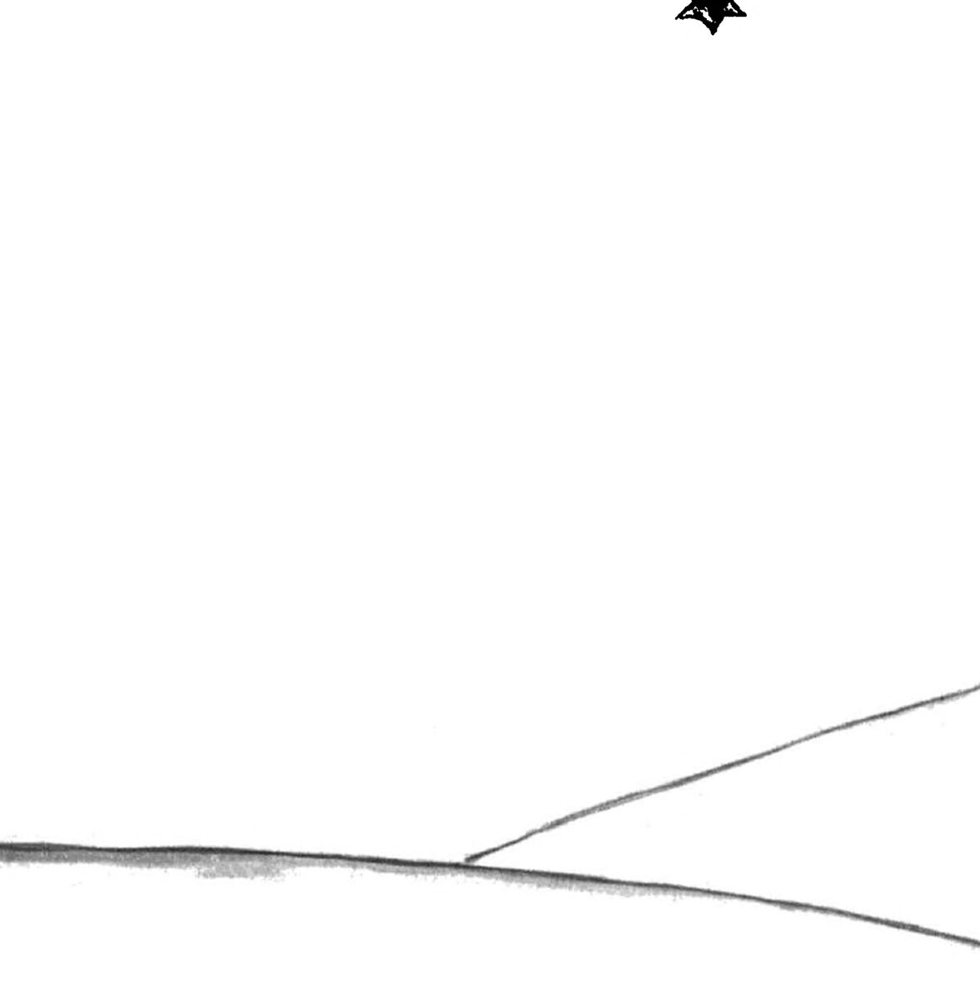
(27.9)ni'o ti ma'i mi traji lo ka [melbi] .e lo ka [badri] kei lo jvinu pe lo munje .i ti mintu lo jvinu pe lo lidne papri .i ku'i mi rere'u pirfi'i fi ti tezu'e lo nu [mi ti do drani jarco] .i bu'u ti lo cmalu noltru pu tolcanci la .terd. gi'ebabo canci .i ko jundi catlu lo jvinu tezu'e lo nu [birti lo du'u {dubju'o ti va'o lo nu (do litru ca da lo friko bu'u lo kutytu'a)}] .i .e'osai ko va'o lo nu [do ti pagre] cu na sutra .i ko ze'a denpa ni'asa'e lo tarci .i do va'o lo nu [lo verba cu klama do gi'e cmila gi'e se kerfa lo solji se skari gi'e na spuda ca lo nu {da retsku}] cu ba drani smadi lo du'u [vy mokau] .i va'oku ko xendo gi'e na curmi lo nu [mi tai badri] .i .e'o zi xatra mi ko lo du'u [vy xruti]
Ça c’est, pour moi, le plus beau et le plus triste paysage du monde. C’est le même paysage que celui de la page précédente, mais je l’ai dessiné une fois encore pour bien vous le montrer. C’est ici que le petit prince a apparu sur terre, puis disparu.
Regardez attentivement ce paysage afin d’être sûrs de le reconnaître, si vous voyagez un jour en Afrique, dans le désert. Et, s’il vous arrive de passer par là, je vous en supplie, ne vous pressez pas, attendez un peu juste sous l’étoile ! Si alors un enfant vient à vous, s’il rit, s’il a des cheveux d’or, s’il ne répond pas quand on l’interroge, vous devinerez bien qui il est. Alors soyez gentils ! Ne me laissez pas tellement triste : écrivez-moi vite qu’il est revenu…
This is, to me, the loveliest and saddest landscape in the world. It is the same as that on the preceding page, but I have drawn it again to impress it on your memory. It is here that the little prince appeared on Earth, and disappeared.
Look at it carefully so that you will be sure to recognize it in case you travel some day to the African desert. And, if you should come upon this spot, please do not hurry on. Wait for a time, exactly under the star. Then, if a little man appears who laughs, who has golden hair and who refuses to answer questions, you will know who he is. If this should happen, please comfort me. Send me word that he has come back.
fa'o